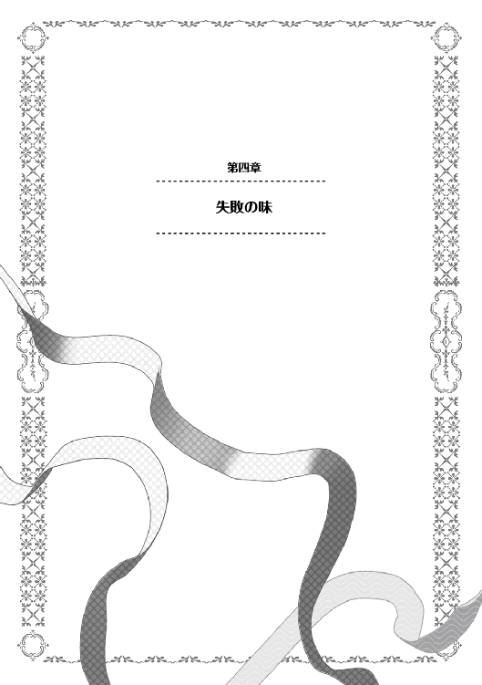

| おかしな転生II 蜂蜜の月 | |
| 古流望 | |
| TOブックス (2015) | |
モルテールン領の次期領主を目指すペイスは八歳になり、領地の発展へ向けて邁進していた。持ち前の知略と魔法によって、父をも超えるアイデアを次々と実現していく。一方、各国の政治的な策謀が渦巻く中、ペイスは貴族の娘・リコリスと婚約することに。その発表は国の内外からの注目を集める結果となり、周囲は慌しさを増す。だが、そんな喧噪はどこ吹く風と、少年の心にある想いは変わらない。「お菓子の国」を夢見て、仲間と共に、蜂蜜や砂糖作りを始めるのだった。貧しき荒れ地も、迫る隣国との戦いも何のその! 甘いお菓子と恋心がいっぱいの王道スイーツ・ファンタジー第２章！
イラスト：珠梨やすゆき YASUYUKI SYURI
デザイン：ヴァイア Veia
プロローグ
人生とは偶然の重なりである。
声高にそう唱える者が居る時、意見を反する者も居る。
人生とは、必然の積み重ねであるのだ、と。
人が生まれ、生きていく長い一生の中に、幾多の出会いが存在する。それを偶然であると考えるか、必然であると考えるかは人それぞれ。ある日突然に運命的な出会いをすることもあれば、どうしても避けえない出会いもある。
星の数ほどの出会い。その中で、最も人生にとって大きな出会い。
それは、共に伴侶となる男女の出会いである。
「おめでとうございます」
「実におめでたいですな」
王城の中庭。
公爵家嫡孫と辺境伯家令嬢の婚約披露に際し、祝福の声がそこかしこから発せられる。
それと併せるようにして、騎士爵家嫡男と辺境伯家令嬢の婚約についても発表された。内心はどうあれ、集まる者達の口からはお祝いの言葉が紡がれる。
「ありがとうございます」
顔には笑みを浮かべ、お礼の言葉を返しているのは一人の少年であった。
名を、ペイストリーと言う。フバーレク辺境伯家の四女であるリコリス嬢と婚約することになった、モルテールン騎士爵家次期領主だ。親しいものは彼のことをペイスと呼ぶ。
青みのある銀髪をした、御年八歳の幼い少年。
大人たちに交じり、実に如才ない受け答えをしていた。
「リコリス様も、おめでとうございます」
「ありがとうございます」
少年の傍には、少女が居た。それは誰かと言えば、晴れてペイストリーと婚約することになったリコリス嬢だ。御年十二歳。腰まで届きそうな黒髪であり、小動物のような愛くるしさがある。
彼女もまた、大人しく控えめにしていながらも、お祝いの言葉には心からの笑顔で応じる。
少年と少女。
可愛らしいという言葉が共に相応しく、御似合いである、と周りは口々に言う。事実、二人が並んでいるのは絵になる光景であった。
そんな彼らに、声を掛ける者が居た。ペイストリーの父親。カセロールだ。
「挨拶ばかりで疲れたのではないか？」
「そうですね、少し肩の辺りが固まってきた感じがします、父様」
「なら、すこし休むと良い」
「分かりました」
王都の中庭には、隣接する部屋がある。
参加者が座って休めるように用意されているわけで、そこに婚約者同士の二人が連れだって行くのを、父親は見送る。
「これから、大変だろうな」
カセロールはそう呟いた。
ペイストリーが生まれてからというもの、平穏と言う言葉からは、とんと縁遠くなってしまったのを実感するが故だ。
いつかは息子にも婚約者の一人ぐらいは出来ると、覚悟はしていた。だが、余りに急な話だった。しかも相手が高位貴族の直系の娘。これで何も起きない、と言い切る自信は、彼には無かった。
それでも尚、息子とその婚約者の居る方に向け、グラスを軽く捧げて言う。
「婚約、おめでとう」
父親の顔には、笑みが浮かんでいた。
先物買い
プラウリッヒ神王国南部の雄と言えば、誰もが一人の女傑を筆頭にあげる。
南部の豊かな穀倉地帯を領地に持ち、海に面しているが故に海運も盛ん。農業と、そして商業の中心となっている文字通りの大領を治めるブリオシュ=サルグレット=ミル=レーテシュ女伯爵その人である。
一般にはレーテシュ伯と呼ばれる彼女は、王国南部を取りまとめる大役を担ってきた家柄に生まれた。大戦の最中にあって激動の時代を乗り切り、現状、過不足なくその任をこなして来ただけあって、中々の才媛と評判ではある。年の頃は、数年前から二十八歳と自称している。
そんな彼女が、一日の始まりを告げる鐘を聞きながら、お茶の香りを楽しんでいる時だった。
「閣下、大変です!!」
「何事です、騒々しい。私の唯一の楽しみの時間を邪魔するなといつも言っているでしょう。貴方も従士長ならばもっと落ち着いて......」
「そんなことより、大変なんです。あのモルテールン家の後継に婚約者が付いたと!!」
「なんですって!! あぁ、熱っ!!」
「閣下、大丈夫ですか」
香りを楽しむ為に、わざと熱めに入れていたお茶。レーテシュ特産の茶葉は南方の気候ゆえに薫り高い。それを盛大に膝に広げた所で、慌てて濡れ布で取り繕う。すぐに冷やした為に火傷まではいかずとも、太ももの辺りは赤くなっている。
それを惜しげも無く晒した所で、従士長がごほんと咳をつく。伯爵は、少々ばつが悪そうに曝け出していた太ももを仕舞った所で、ようやく話を聞く姿勢になった。
「それで、あの銀髪の坊やに婚約者が出来たって？」
「はい。それも飛び切りの」
レーテシュ女伯爵は、脳裏に青銀の髪の少年を思い出す。
利発で、才能豊かで、意地が悪く、油断のならない相手であったのは記憶に新しい。魔法も使えるという時点で、余人が羨むほどだろう。
「相手は何処の娘なの？ ハースキヴィ？」
「いえ。お相手の娘はリコリス=ミル＝フバーレク。フバーレク辺境伯家の四女で、先ごろ公爵家との婚約で大きな話題になった、ペトラ嬢の双子の妹だそうです。幸運なことに父親に似ず、かなりの美人と評判ですな。例の拉致事件があった為に、風聞を避ける為にペイストリ=モルテールン卿との婚約を決めたというのが専らの噂とか」
「なるほど、良い手じゃない」
成人間際であった年頃の娘が、不逞の輩に攫われた。こうなってくると、下世話な風聞が必ず付いてくる。賊の慰み者にされたのではないか、という風聞だ。
これを避ける手としては、事情を良く知る者が迎え入れるというのが最も手っ取り早い。まして救出時に活躍した相手との婚約であれば、美談にするのは容易い。風聞を打ち消すにはもってこいの手だ。
「はっ。御賢察の通りかと。何せ彼の御仁は当年で八つ。二〜三年してほとぼりの冷めた所で婚約を解消したいと思うのなら、これ以上の適任も居りますまい」
貴族の婚約とは、当てにならない。それ故に婚約披露等が行われる訳だが、ペイスの場合はおまけで公表されたに過ぎない。
風聞を避ける為に形式の婚約をさせておき、ある程度噂も沈静化した所で改めて仕切り直すというのは悪くない手。腐っても貴族であれば、それぐらいの権謀は極々当然のものだ。
従士長の考えた、いずれ婚約を解消するのだろうという見込みは常識的なところ。
しかし、数多の思惑渦まく貴族社会を生きてきた女伯爵には、違うものが見えている。
「そうね。普通ならそう考えるでしょうし、噂が広まっている事自体は本当でしょう。でも、その噂、肝心の中身が多分間違っているわよ」
「は？」
東部屈指の名家であり、公爵家とも縁戚となったフバーレク辺境伯家にとって、南部の僻地にある貧乏騎士爵家に娘を嫁がせるメリットは極めて少ない。
精々が、戦乱を避けて血統を残す意味合いがある程度だ。戦乱の燻りが強く香る公爵家と辺境伯家の婚姻であるから、裏があると考えた所で疎開させておく意味合いぐらいではないか。
そう考えている貴族は多いだろう。事実、カドレチェク公爵や中央の宮廷貴族はその考えを持っている。
しかし、レーテシュ伯は、更に深い裏があると考えていた。
「あの血なまぐさいタヌキ親父共が、そう簡単に裏を悟らせるものですか」
「と言いますと？」
「一つは、自身に向けられた警戒を薄める狙い。ただでさえ高位貴族との縁組で警戒されていたのだから、あえてここで傍目には弱小貴族に見える家と縁組をすることで、婚姻政策で権勢を高める意図の無いことをアピールする」
「なるほど」
傍目には弱小である、というのがポイントだろうと才媛たる女性は考える。
一見すれば、辺境の一騎士爵家であるが、かのモルテールン家は大戦の英雄の家柄。魔法使いが三人も居る家など相当の大家でなければ望めない。
しかも、モルテールン騎士爵の転移の魔法は名高いし、有用さは疑いようも無い。いざとなれば、下手に遠くの有力貴族と縁戚を結ぶより、援軍に来てくれる可能性は高い。名ばかりの適当な家に嫁がせるより、よほど頼りになる。
形式的には遜りながら、しっかり実利を確保している所は、流石は東部屈指の名家である。
「そしてもう一つ、思惑があるのでしょうね。食えない男よ、全く」
「と言いますと？」
「モルテールン領が、当家に匹敵する位の豊かな領地になる可能性を考えた、苗木買いよ」
「まさか。幾らなんでもあり得んでしょう」
従士長は絶対の確信をもって否定の言葉を口にした。
苗木買いとは、予め良さそうな苗を買って後の大きな収穫に繋げること。幾らカセロールやその息子が優秀な苗であると言った所で、伯爵領と比べられては立つ瀬がない。
南部でも並ぶもの無き大領を有し、気候も温暖であり、水利もあって土地は極めて豊か。海運の要所を領内に持ち、領内には金銀の鉱山まである領地。自らが長い間、身を粉にして仕えてきた土地であり、愛着もあれば自負もある。
幾らなんでも、荒地と呼んでいた場所を一から開墾している小さな騎士爵領と比べられては、伯爵領の経営に携わってきた彼自身のプライドにも関わる。
「そう、言っていられる内が華でしょうけどね。貴方、そもそもカセロール卿があの碌でもない土地を与えられた経緯は知っているわね？」
「ええ、当時は話題になりましたから」
神王国が滅亡の危機に瀕した際、僅かな手勢を持って奮戦し、かつ、比類なき大功を立てた英雄。
この処遇を巡り、戦後に虚々実々の駆け引きが行われたのは周知の事実である。
下手に冷遇するわけにはいかず、さりとて他の貴族の顔も立てねばならず。
結局、報奨として貴族号を与え、高すぎぬ地位として騎士爵に止めたこと。或いは隣国への睨みを利かせる意味での実利と、誰にも妬まれぬ土地としてのモルテールン領を拝領したこともその駆け引きの一環である。
報奨として他に類を見ないほどの大金を与えた上で、それを浪費させるべく貧地に追いやった貴族たちの策謀。
「当時は、宮廷の雀や伝統貴族は、戦場上がりの無骨者が、あんな僻地を治められるはずがないと思っていた。英雄の力を浪費させる為の枷であったはずなのよ」
「腹黒いことですな」
「しかし、彼はやってのけた。初めは上手くいかなかったらしいけど。......前に言っていた、あの土地の収支遍歴については調べたわね？」
「は、ここにあります」
そう言って、従士長は調べ上げたモルテールン領の遍歴について述べだす。
モルテールン領の最初期に入植したのは五名。当主とその腹心。そして付き従った三名。
二ヶ月を掛けて水気を調査した結果、かろうじて井戸の掘れる土地を本拠と定めて定住。最初に撒いた麦は土地が悪く、全て枯れたという。
当初はテントのような場所に寝泊まりしつつ、汗を流しながら岩を退け、蓄えを費やしても肥料を撒き、雨を望みながら井戸から汲んだ水を撒くという苦労の末、初めて麦の収穫が実ったのが入植三年目。
「この時の初収穫の麦は、国王陛下に献上されていましたな」
「ええ。陛下は大喜びで、その麦を粥にして召し上がったと聞いているわ」
カセロールが結婚したのもこの頃であった。
援助を求めて社交界を飛び回り、他領の争いごとに加勢することで助力を得る。それをもって、増えつつあった領民や部下を養うという自転車操業。
忙しく飛び回る中で出会った女性と愛し合うようになり、駆け落ち同然に結婚。すぐにも子宝に恵まれることになったが、残念ながら跡継ぎとなる男児に恵まれなかった。
今から数えて七年前。六人目の子供として待望の男児が生まれる。
そこからしばらくは、僅かずつながら増える農地や領民と、比例する出費に悩まされていたモルテールン領であった。
「そうよ、そこまでは、宮廷貴族たちの思惑通りに事は進んでいたのよ。領地を檻にして、餌を与えることで英雄を飼い馴らす。目論み通りであったと言っても良いでしょう？」
「そうですね。状況が変わってきたのはこの後ぐらいですか」
転機があったのは三〜四年前。何と麦の栽培を減らすという暴挙に出た。
小麦や大麦は乾燥に比較的強く、降水量の少ないモルテールン領でもなんとか育てられる、唯一といっていい換金作物であったから、それを聞いた周辺の貴族たちはこぞって、モルテールン騎士爵は頭がおかしくなったと罵ったものだ。
他ならぬレーテシュ伯爵も、意図が分からず混乱した記憶がある。
代わりに始めたのが、豆作を間に挟む輪作。
豆もまた乾燥には比較的強い作物であるが、これを始めたことで逆に作付を減らしたはずの麦の収穫も増えたというから、罵っていた人間の驚愕は如何ばかりか。
「それまでは、農地や領民が増えるごとに赤字も増えていたわけだけど......何の思いつきか、豆を作り出してからは人と農地が増えれば赤字の減る体質に変わったわけね」
「何処から思いついたのかは知りませんが、後から考えれば英断であったのでしょう」
その後は農地の拡大と領民の募集・増民に力を注ぎ、赤字額は年を追うごとに減少していった。
領地経営の黒字転換も近いというのが、行商人や教会などから情報を集めて分析した結果である。
「いずれ累積赤字も解消し得る目途が立ったわけだけど......気付いたかしら？」
「何にです？」
「例の思いつきに、あの銀髪の坊やの影がちらつくこと、よ」
「いや、幾らなんでも......その頃と言えば、例の少年は三つかそこらでしょう。碌に言葉もしゃべれぬ幼子に」
「でも、貴方なら出来る？ たった一つの命綱を切って、先の見えない崖に飛び込むような無謀な真似が」
赤字で四苦八苦している中にあって、唯一まともな現金収入の方策を捨てる。その上で、海のものとも山のものとも知れないことに限られた人的資源や土地を使う。
暴挙と言われた理由はここにある。
農業とは、新しいことを始めた所で、すぐに結果が出るものでは無いというのが常識だ。最低でも収穫が実るまでに何ヶ月か掛かる。もし失敗すれば、大勢の人間が飢え死にするかもしれない大事。土を荒らしてしまえば、何年も影響が続く。
それなのに、最初から成果を出せたことこそ驚かれているのだ。試行錯誤も無く、いきなり大正解を掴んだような唐突さ。
「出来ませんな。部下の命と生活を預かる身として、そんな無謀は出来ません。あり得んでしょう」
「そう。普通じゃない。しかしよく考えれば、騎士爵本人は魔法こそ使えるにしても思考や発想そのものは常識的で合理的な方よね？」
「それは私も承知しております。一度肩を並べた戦友ですから」
従士長は、何度か戦場でカセロールと馬を並べている。
一番最近で言えば、レーテシュ領の海賊退治で共に戦った。故に気質はよく知っている。そう思って振り返れば、勝算あっての無茶はともかく、勝算のない無謀とは最も縁遠い合理主義者であったと思い当たる。
「でしょう。非常識な発想が騎士爵本人から出て来たとはとても思えない。本人でないなら、誰か別の人間の発想のはず。じゃあ、騎士爵が突飛な発想を得たのは誰から？ それも、合理的な騎士爵を納得させるほどに話が出来る。そして信頼されている人間。ついでに言うなら、誰がどう見ても普通ではない人間。普通でない発想の出来る人間。どう、貴方もここまで言えば、誰が裏に居るのか見えてこない？」
「なるほど。それで閣下は、モルテールン領の発展があの少年によるものではないかと推察されたわけですか」
「そう。そして、同じような発想を、あの食えない親父たちも考えた。酷い万年赤字体質を抜本的に変えてみせた手腕がもし本物ならば、黒字になって打てる手が増えた時にどうなるのか。考えるまでもないわ。全く......うちに女の子が居れば、私も同じ決断をしたでしょうね。っていうよりも、東部の連中が、私の頭越しで南部に手を出したことに腹が立つわよ。南の家にちょっかい出すなら、うちに一言断るのが筋ってものでしょう!!」
「まあまあ。嫁に出せる娘が居ないと言うのなら、いっそ閣下の婿に迎えますか？ ははは」
「私がもう十歳年若いか、あっちがもう十年早く生まれていたのならアリだけど。どちらにしても、東の連中にばかり先手を打たれるのも癪よねぇ。どうにかしてうちが取り込みたい」
十年では足らぬだろう。という言葉を従士長は呑み込んだ。
剣呑な伯爵の目を見れば、その手の不遜な考えは御見通しなのだろうが。
何か、東部の腹黒たちを差し置いて、自分たちがモルテールンの跡取りを囲い込める方法は無いか。
しばらく考え込んでいた女伯爵であったが、ややあって何がしかの考えがまとまる。
「そうだわ、いっそあの手でいきましょう」
その日、レーテシュ伯爵は一通の手紙をモルテールン領に送った。
◇◇◇◇◇
「それでは、確かにお渡ししました」
「ご苦労様です。閣下によろしくお伝えください」
衝撃の婚約発表からひと月。
年も改まり、ペイストリーも八歳となった金央月の初頭。
とある荷物が、公爵家従士の護衛付で届けられた。
馬車から降ろされた荷物は、木箱に入れられているらしい。傍から見れば、これ見よがしに積まれている箱の山である。
「ついに届きましたか」
「何だこれ？」
その箱の山を、ほくほく顔で見つめるのは、次期領主たるペイス。
傍には、従士家の子供で幼馴染の悪がき二人。
ペイス以外の二人にとっては、一体何が届いたのか分からないわけで、好奇心の矛先が向けられている。
「先日、公爵閣下からうちの所に支援を貰えるという話になりまして。公爵ご本人と、友達になったお孫さんとのご好意で、僕が欲しかったものを送って貰ったのですよ」
「それはどうでも良いんだけどよ。この大荷物の中身を聞いているんだよ」
「それは内緒です。ふふふ」
「ケチ。良いじゃねぇか教えてくれても。せめて、何するものかぐらいは教えてくれよ。食い物か？」
あからさまに食材であってほしいと言いたげなのは、ルミニート。親しいものには愛称でルミと呼ばれる、当年とって十一歳の少女であり、まだまだ色気より食い気の年頃。ここ最近は僅かに胸が膨らみだし、第二次性徴の兆しが見られる為に、男の子と間違えられることは減ってきたのが悩みの種。
「ある意味遠からずですか。いずれは美味しいものも採れるようになるかもしれませんが、それはもっと先の話ですね」
「一体、何をしようってんだ？ 戦か？」
食い気よりも血の気の方が多いのは、マルカルロ。友人からはマルクと呼ばれるその少年は、剣の腕が伸びていることで多少増長してきているきらいがあると、大人たちを悩ませている。
最近、ルミの事がやけに気になっているお年頃。
ルミとマルクは、常からペイスの御伴を自称するようになっている。
先の盗賊撃退の時に、大人たちに交じって手柄を認められたことで、彼らなりに自信と責任感が出てきているのだ。
「まあやろうとしていることもある意味戦いと言えば戦いですが」
「回りくでえよ。はっきり何やるか教えろって」
「そうだそうだ。俺たちにぐらい教えてくれてもいいだろうがよ」
とはいえ、まだまだ子供の気質が十二分に溢れている訳で、忍耐力の無さは幼さの現れである。
「いやね、ちょっと作ろうかと思いまして」
「何をだ？」
ニヤリと笑ったのはペイス。
年も改まって八つとなった悪がき筆頭。子供らしからぬ行動力と、類まれな知識と発想で、ここ数年は大人たちをトコトン振り回してきた極悪人。
その彼が、幼馴染二人に語る。
──森を作ろうかと。
おまけで手に入れたもの
ペイストリーの転写の魔法は富を生んだ。
そのことを如実に表しているのが、モルテールン領に新しく建てられた一棟の屋敷である。
基礎からしっかりと固められ、中庭の井戸を囲むようにして建つ石造りの壁。煉瓦交じりの仕切りで作られた部屋数は三十を超える、中々の邸宅。
豪邸とまではいかぬまでも、貴族の家としてはそこそこの格式が見て取れる家。
新しく建てられた、領主館である。冬の間の突貫工事を経て、先ごろ完成したばかり。
その中の一室。
あえて以前と同じソファー。同じ執務机。領主お気に入りの椅子を持ち込んで、扉もしっかりと分厚いものが付けられた、新しい執務室。
部屋の中には二人の男が居た。誰有ろう、カセロールとシイツの、モルテールン領ツートップである。
「布製品売却益が経費差し引いてマルで八シロット四分の三、大麦酒がバツで二レットとび十一ロブニ、小麦粉がマルで一四シロット二十五ロブニ......」
淡々と、従士長たるシイツの口から数字が告げられていく。告げられているのは、前年度の収支の詳細。マルは黒字を意味し、バツは赤字を意味する。数年前なら、マルの数字は皆無であったが、今年はどうであるか。
数字を羊皮紙に書き写しつつ、おかしなところが無いかをチェックしていくのは領主たるカセロールの役目。
「っと。で、さっきの臨時支出とを合算して、トータルがマルの四ロブニと八分の三ってのが、去年の収支だな。おめでとうさん。ついにうちの経営は通年黒字を達成した。単年度だが」
「ようやく......ようやくここまで来たか」
お気に入りの椅子に深く腰掛けるカセロール。
軽く首を上げるようにして背もたれにもたれかかり、やや仰向けの姿勢のまま目を瞑る。そのまま思い出すのは、苦労の連続であった二十年。
身内や部下たちを養う為に、身銭を切って、果ては傭兵まがいの仕事までしていた過去。
「やっぱり、坊の協力はでけえよな」
「違いない。我が息子は神の遣わした申し子であろうよ」
「そこまでは言わねえよ。何だよその親馬鹿は」
モルテールン領の収支改善の要因は幾つかある。
特産品としてのビルベリーなる果物の生産と、ベリージャム等の副次産品の販売。豆作と麦増産による食糧購入額の減少。豆木などの薪代替品による、薪購入費用の減少。井戸の周りに植えた有用作物の利用などなど。
その大半は、ペイストリー発案、カセロール実行の二人三脚で成果を出してきたもの。
「最初この土地に来た時はどうなるかと思っていたが、ここまで来てみれば何とかなるもんなんだよなぁ」
「お前たちのおかげだ。よく私について来てくれた。感謝している」
「何を今更。俺が大将に賭けたのは、大昔だろう？」
お互い旧知の仲。それでも互いに力量を認め合い、支え合ってきただけに領地経営の黒字化という偉業に対する感慨は大きい。
「さて、残る報告事項は二つなんだが？ 良い方と悪い方のどっちから聞く？」
「良い方から聞こう。この気持ちの良い高揚感は、出来るだけ長く続く方が良い」
「そう言うと思った。良い方の報告だが、新しく作ろうって言っていた新村の件だ。デココの腕が存外に良かったのか、四十人を超える入植希望者が集まった。大半は近場からの半難民だな。夫を殺された寡婦だの、成人前の孤児だのも居る。盗賊に襲われた時、私財をまとめて逃げられたところまでは良いが、そこから先は農地も壊されて路頭に迷っていた連中。デココの奴が、当座の金を自分から借りるのなら、住む家と耕す土地を用意すると言って連れて来たらしい」
「良いじゃないか。昔なら人の増えることに負担も感じていたが、今は増えれば増えるほどに儲かる。多いに越したことは無いだろうな」
盗賊撃退の後、最も問題になったのは難民対策だった。
モルテールン領で閉鎖した二村の復興や、急激に人数が膨れた本村の整理等は自分たちがやらねばならぬことであり、村人自身にも自覚があること。対し、余所から食い詰めて流れてくる連中に関しては問題が複雑になる。
下手に追い返せば難民の彼らが盗賊になりかねず、かといって復興中の村に余計な騒動の種を受け入れる余裕は無い。また、復興なら必要な物資は最初から目算が付くも、難民のように、何時来るか、何人来るかも分からないのであれば事前の準備もしようが無い。
そこで、難民が発生してから対処するのではなく、いっそのこと受け皿を最初に用意して積極的に呼んでしまおう、という大胆な目論見の下、難民村とも呼べる新しい村を作ることに相成った次第である。ここら辺の建前と実利をきっちり揃える所が、カセロールが名領主と言われる所以でもある。
お隣のサルグレット男爵領により近い所に縄張りをし、家を商人に用意させたうえで難民を受け入れる。上手くこの村の経営が成り立つかは、領主の腕次第というわけだ。
「まあ、人手も増えたし、何とかなるでしょうよ」
シイツの言う増えた人手とは、ペイスの婚約者になったリコリス嬢の誘拐事件の際、協力して貰った連中たちのことである。就職先を求めていた連中の中から、腕っぷしの強そうなものや、頭の回転の良さそうなものを選抜した上で、五人を従士として新たに雇い入れたのだ。
「そいつらは今どうしてる？」
「グラスが、仕事を仕込んでいるところだな。馬に乗れない奴も居たから、そこら辺から教えているらしい。まあひと月もすれば使えるようになるだろう」
「グラサージュが先輩ねぇ。私も年を取るわけだよ」
つい先日まで、モルテールン領は専任従士が三名の体制だった。そのうちの一人がグラサージュであり、愛称でグラスと呼ばれる。カセロールたちが開拓を始めた頃は未成年であり、その印象が未だに残る人間からすれば、月日が流れる偉大さを感じずにはいられない。
従士になれば、有事の際は騎乗を許される。それ故、馬を扱えることは従士としてかなり重要な技能と目されている。
現代的な感覚で言えば普通自動車の運転免許に近い。社員になれば社用車の運転をする可能性が有るので、免許は有る方がよい、というような感覚と近しい。
モルテールン領のような小所帯では、一人の従士が大抵のことをこなせるという万能性が求められる為、馬も教えて損は無い。
「また、馬も仕入れなければな。辺境伯家に太い縁も出来たし、そこは大丈夫だろうが......で、悪い知らせというのは？」
「これはとっておきだぞ」
「なんだ？」
カセロールは、椅子に体重を掛ける。軽く軋むような音をさせて、椅子は領主を受け止める。
その様を、親友たるシイツは見つつも、ニヤケ顔で報告をする。
「坊がまた新しいことを始めたらしい。で、新村に〝子供たちだけで〟出かけたと報告があった」
「あの悪がき共。少しは大人しくしておれんのか!!」
盗賊や傭兵に襲われたのは記憶に新しく、不逞の輩に攫われた経験者が二名に、大怪我を負わされた少女が一人。そんな、大人に心配しか持って来ないような子供たちだけで、まだどういう連中が居るかも分かっていない新村に行くなど、悪い知らせと言わずに何と言うのか。
万が一にも彼らに怪我でもされれば、旧領民と新村民との間に溝が出来るやもしれない。子供の怪我というだけで、盗賊を想起させることもあり得るだろう。捨て置いて良い問題では無かった。
がたりと椅子を鳴らしてカセロールは立ち上がる。
「シイツ、行くぞ」
「お伴しやすよ」
お互いに二十年来の友。何処に行くのか、などと野暮なことは聞かない。聞かずとも分かる。
カセロールはシイツの肩に手を置き、魔法で新村に飛ぶのだった。
◇◇◇◇◇
「ルンルン〜♪」
小鳥の囀り。或いは子犬の甘え声のような、幼い鼻歌が流れる。
「ご機嫌だなペイス」
「そりゃぁもう。お菓子の国に一歩近づくわけですからね」
モルテールン領の本村であるザースデンから、直線距離にしておよそ四キロ。子供の足で歩くなら、二時間弱の場所に新しく出来た村がある。名前を受け入れ先と言う。
村の中心には、相当に深くまで下向きに掘られた井戸が一つ。その周りに、質素な木造りの家々が二十軒ほど立ち並んでいた。
本村と大きく違うのは、このル・ミロッテ周りには緩やかな上りの傾斜があること。そのまま山脈まで傾斜が続き、最後は山頂に続くわけだ。
「それで、この荷物は何なんだよ」
公爵家から届けられた荷物は、ペイスの傍に今もって積み上げられている。ペイスが父親から転写した【瞬間移動】で運んだのだ。大人が数人がかりでやっとこさ運べる馬車四台分の大荷物。それを誰の手も借りずに運べるのだから、魔法の利便性は大したものである。
「森を作ると言ったでしょう？」
「ああ。で？」
「これは、苗木です。公爵は顔が広いですから、僕が欲しい木の苗木をあるだけ送って貰ったんですよ」
「へぇ〜」
ホクホク顔の少年が、箱のふたを開ける。そこには確かに小さな木が、土くれと共に入れてあった。土まで入っているのだから、道理で重たいわけだとルミとマルクは呆れた。
「これは、何て木なんだ？」
「ハリエンジュ。ニセアカシアとも言います。ここら辺では見かけないと思いますが、デココに調べて貰っていたんですよ」
行商人デココは、モルテールン領と他の領地を行き来する行商人である。その彼が、他領の植生や特産品。或いは気候風土について調べていたのは商売上の理由から。ペイスはそこに目を付け、情報料を支払う代わりに、もっと詳しい話を調べて貰うように依頼していたのだ。
とりわけ、ペイスが是が非でも欲しいと願っていたのがこのハリエンジュであり、よく似た木を見かけたという報告がデココから届いた時から、手に入れる機会を虎視眈々と狙っていたのだ。
「んで、この木は食えるんだよな。美味いのか？」
男勝り。ボーイッシュという言葉が似合う少女が、興味津々で食い気を露わにする。成人前の少女ルミニートにとっては、美味いものこそ何より大事。自身が怪我を負った際に見舞いで貰ったボンカパイの味が忘れられないのだ。あれほど美味いものを、好きなだけ食べられるような領地にしたいというペイスの夢を、心の底から応援している熱烈な支持者でもある。
「この木は食べられませんよ。いや、食べられないことは無いのでしょうが、美味しいとは言い難いです」
「あん？ じゃあ何でそんな物を？」
「ふふふ、それはこの木が、うちのような痩せた土地でも育ちやすい上に、蜜源になるからです」
「蜜源？」
「ハチミツが採れるってことですよ」
「おおぉ!!」
ハチミツ。砂糖の希少な世界にあって、庶民も口に出来る甘味の代表格。
菓子の歴史は人類の歴史と共にあり、最も古くから使われていた原材料でもある蜂蜜の歴史も古い。地球の歴史であれば、古代エジプトの時代から人々は蜂蜜を食べていたし、蜂蜜なしにスイーツの歴史は語れないほどに重要な製菓原料である。
蜂蜜を人の手で効率的に集めようと試みた人類は、自然とミツバチを養う養蜂技術を磨くことになった。ペイスとしても、いずれはニセアカシアの蜂蜜生産をしたいと目論んではいるが、それはあくまで、上手く木々を育てられてからの話だ。
ペイスの狙いは、まずは土地の荒れた場所でも育つ木を手に入れること。モルテールン領では木材資源・薪木燃料の輸入に大きな負担を抱えており、年間の支出のうちほぼ三割がこれである。
故に、ここで自給出来る木材資源を確保出来れば、領地がより一層豊かになることは明らかだった。蜂蜜も将来採れることになるというのは、まだペイスとその幼馴染二人しか知らない。
「でも、うちで木を育てるのには、問題もあるんですよねぇ」
「俺も分かるぜ。土と水だよな」
「流石ルミですね」
「へへへ、爺ちゃんに聞いたことがあんだよ」
モルテールン領の木材資源の乏しさは、入植当初から大きな問題だった。領主のカセロールとしても、この問題を解決するべく多くの試行錯誤を繰り返してきた経緯がある。だがその全てが、大きな二つの問題に阻まれて大した成果も出せずに終わっている。
その大きな問題の一つ。土地が痩せていることは、今回の件では大丈夫だと青銀髪の少年は確信する。ハリエンジュは、薪炭材として極めて優秀な性質を持つ。育ちが早い割に固く、多少の湿り気を気にしないほどに火付きが良い。そして最も大きな特徴として、痩せ地でも育つという特徴がある。
豆作での試行や実践を踏まえ、同じような特性があるこの木であれば、まず間違いなく育つという自信があった。
しかし、もう一つの問題が、如何なる名領主であってもさじを投げ、モルテールン領を難治たらしめてきた問題である。
すなわち、降水量の少なさだ。
植物が育つのには、水と光が必須である。山脈に囲まれた土地であるが故に雨が少なく、目立った河川も無いモルテールン領では、木を育てようとしても、ある程度の規模まで増えたところで、水不足になり枯れる羽目になる。まばらには生えるものの、群生しないのはこれが大きな原因となっている。
天候だけは、どんなに名君や名宰相であっても御するのは不可能。また、無い物を増やすのも不可能である。
「僕としては、発想を変えるべきだと思ったのですよ」
「よく分かんねぇよ」
「まあ、少ない雨を増やそうとか考えるのは無意味ですし、雨の豊かな土地の真似をするのも無理。使える水の量を増やせないのなら、逆に、少ない雨なりのやりくりの方法を考えるべきだと」
傍で聞いていたマルクは、無知ゆえにそのままペイスの言葉を受け取った。無いことをねだっても仕方がないのだという考えは、兄弟の多いマルクには自然なことだったからだ。
貧乏人が金持ちの真似をするのは無理だし、どうやれば金が儲かるかを悩むよりかは、少ないなりの収入で豊かな生活が出来る方法を考えよう、とペイスが言っているのだと理解する。
「具体的には何をやるんだ？」
「貯水池を作ります。それも、春先の少ない雨でも一年もつぐらいの大規模なものを」
水が蒸発する量は、おおよそ表面積に比例する。対し、水の量は体積に比例する。理屈から言えば、相対的に蒸発量を抑えたければ表面積が増える割合以上に、量と体積の割合を増やせばいい。
コップとバスタブでは冷めやすさが違うように、同じ量でもより表面積の大きい方がよく蒸発する。洗濯物を丸めて乾かすより、広げて乾かす方が良く乾くのはこの理屈だ。
逆に言えば、より沢山の量の水を出来る限りまとめて溜めておけば、春先の雨を一年保たせることが出来る。理論上は。
入植以降、当主たるカセロールと従士長シイツの二人も、無論この方法を検討した。溜池を作り、春先に降る限られた雨を、可能な限り長持ちさせようとした。
しかし、その為に必要な労力を計算した時に、諦めざるを得なかったのだ。
二ケ月程度の水を湛える貯水池を作るだけでも、人足五十人規模で、二年以上掛かるだろうという試算が出た為である。通年で保たせるようにしようとするなら、二百人以上が三年は掛けて作業し、ダムの如き大がかりなものを作らねばならない。どれほどの大金が掛かるか分かったものではなく、無い袖は振れない以上この計画はもっと領地経営が軌道に乗ってからということになったのだ。
無論、今とて状況が変わっているわけではない。人件費がべらぼうに安くなったわけでもないわけで、次期領主たる少年も、問題点はよく理解していた。
しかし、ペイスには労力の問題を一挙に解決する秘策があった。より正しく言うなら、つい先日、解決方法を入手した。
彼は、新村から若干離れた場所まで移動すると、斜面に向かって気合を入れた。
「それでは早速......【掘削】!!」
魔力の奔流が、一般人である幼馴染二人に見えるほどの迸り。すわ地震か、と思うほどに辺りは足元から揺れている。
──ボゴッ!!
斜面がいびつに歪む。ペイスの目の前の地面のみが大きく凹み、凹みの外側には小山のような盛り土が出来ていた。
「スッゲエェ！！！」
「うぉぉ、何だこれ〜〜!!」
一瞬にして、文字通り風景と地形を変えてしまった御業。驚くなと言う方に無理がある。魔法というのは誰がどう見ても明らかではあるが、マルクとルミの二人が知るペイストリーの魔法とは、何がしかの絵を転写するもの。こんな、地形を変えるような真似が出来るとは、想像もしていなかった。
驚愕を露わにする少年少女とは対照的に、驚天動地をやらかした当の本人は、うつむいていた。
立ったまま首だけを前に倒すような恰好。傍から見れば、目鼻が隠れて陰気にも見える。更にはそのまま、怪しげな声まで聞こえてきた。
「ふふ、ふふふ、ふふふふふ」
あ、やばい。
そう幼馴染二人は気付いた。
「あははははは!! いける。使えますよ。予想以上にこれは使える魔法です。あはははは」
ガバっと動き出したかと思えば、そのままペイスは両手を広げてくるくる回りながら穴の方に走り出した。狂ったような笑い声も、その姿だけを見れば愛くるしいのは母譲りの顔立ち故のお得感だろうか。
ペイストリーが使ったのは、彼の持つオリジナルの魔法では無い。リコリス嬢救出の際、敵が使った魔法をちゃっかり転写していたのだ。実際に触れ、かつ自分の目で確かめねば転写が出来ないという制約があったにせよ、転んでもただでは起きないしたたかさである。
少年は、調子に乗る。
自分自身の有り余るほどの魔力に物を言わせ、次から次に【掘削】の魔法を使っていく。その度に出来る大穴は、人が手で掘れば何十人かが数日は掛けて掘らねばならぬほどの大きさであり、続けざまにそんな大穴をあけていけば、あっという間に地形は変わる。穴の中に更に穴を掘るようなことまでやりだし、もはや【瞬間移動】無しには外に出られないほどに巨大な穴が完成する。
「ふぅ、こんなものでしょう」
「すげえ、一人でこんなでけえ穴を掘り切っちまった。しかも底や壁はきっちり固めてあるし......」
山の斜面に出来た、一つの村が丸ごとすっぽり収まりそうなほどの広い穴。おまけに、その幅と同じほどの深さまである巨大さは、まさかこれが一時間も経たずに出来たとは信じられないものだ。巧妙に水脈を避けている所などから、この手の計画が前々から準備されていたことを如実に表していた。
壁面や底面にはそれ相応の補強までなされ、既に構造物と呼べるレベルの異常さである。
「さて、それではこの周りにぐるりと苗木を植えて行きますか。もう少しすれば雨も降るでしょうし、そうなれば水も溜まる。木が育てば、それ自身が貯水の役目もするわけで、相乗効果も生まれます。それまでは井戸から水を汲んで掛けてやれば良いので......」
話の途中で、不自然に会話を途絶えさせたペイス。
それをいぶかしんだルミとマルクではあったが、すぐ傍に、見慣れた人間が来たことでその理由が分かった。
その人間とは、ペイスの父、カセロールである。彼は目の前にある光景に唖然としていた。
「こっ......こっ......」
「あ、父様」
カセロールの驚いた顔を見て、ペイスは流石にバツが悪くなってきた。いささか調子に乗りすぎてしまったことを自覚する。
そこで、如何にも可愛い子供のフリをしつつも、愛くるしく見えるであろう笑顔で誤魔化す。ご丁寧に、ポーズまで決めて。
「ちょっとやりすぎてしまいました。てへっ」
「この馬鹿もんが!!」
自分に無断で地形を変えられるような真似を、領主として許せるわけが無い。
カセロールは、問答無用で子供たちに拳骨を落とす。
「何で俺まで......」
「痛ぇ......」
巻き添えの被害者二人は、主犯のペイスと揃って、痛みに涙するのだった。
幼い商売人
世界は不自由に出来ている。
人が生まれてから死ぬまでの間、自分自身の好き勝手に生きていける人間など居ない。しがらみや立場の制約。金銭や地位による制約。年齢による制約。能力による制約。人は色々な制約の中であがき、必死に生きていく。
「分かるか？」
「師匠、難しすぎます」
「いずれ分かる時が来る。私たちのように、旅から旅に生きていれば、煩わしく思う世の中のしがらみが、大切なものであることにも気付くだろう」
そう、自身の人生論を語る男は、デココ=ナータ。行商人としてのキャリアは早二十年近くなるだろう。
諸般の紆余曲折から、つい先日弟子を抱えるようになった。初めて出来た後進に、偉そうなことを賢しらに言うのは面映ゆい。
「じゃあ師匠は、どんな制約に縛られているんですか？」
「私かい？ そりゃあ商人たるもの金以外に縛られちゃいかんよ。女に縛られて破産した商人や、人付き合いのしがらみに縛られて財産を無くした者は随分と多い。お前も気を付けることだ」
行商人は、世間一般では金に縛られる生き方を強いられるものとされる。土地に縛られる農民に比べれば、移動の自由こそあれ、ちょっとした気の緩みで食えなくなる緊張感は金に縛られるが故である。
「でも、師匠はこのあいだ大儲けした〜って噂になっていましたよ？ そんな師匠でも金には縛られるんですか」
「そりゃそうさ。私の夢は自分の店を持つことだからね。まだまだ稼ぐつもりだ。それに、どうせ何かに縛られて生きるなら、何に縛られるかぐらいは自分で選びたい。否応なく金に縛られる生活よりは、ね」
「じゃあ、とっとと俺に稼ぐ方法を仕込んで、さっさと隠居してください」
「全く、口の減らない奴だ。言われんでもそうする。厳しいからといって泣き出すなよ？」
「泣きゃしませんよ。ほら師匠、見えてきましたって」
先ごろ、デココは大儲けをした。商ったのは何と家丸ごとを二十軒という大商いだった為に、利益も相応にでかかった。
その利益を元手に、馬車を二頭引きで屋根付きの幌馬車にし、今日も今日とてそれに荷物をふんだんに詰め込んで、とある領地に向かう途上にあった。二頭引きにしたことで重たい鉄製品を運べるようになったし、屋根付きにしたことで雨に弱い生石灰なども積めるようになった。
石灰は水に濡れると熱を持つ為、行商の荷としては危険であるが、消石灰への加工や、漆喰などに使われる為に用途は広く利幅は大きい。これから行く場所では、まず間違いなく高く売れるだろうことを見極めて運んできたのだ。
師匠と弟子とが、山道の急峻な道程の終わりを見た時。彼らの目的地であるモルテールン騎士爵領が見えてきた。
「へぇ、ここがモルテールン領ってわけですか。今見えているのが、師匠が一から作ったっていう村ですか？」
「まあな。ル・ミロッテという村だ。ここから更に行けばザースデンがある。ただ、私が作ったのはあの村に建っている家だけだし、建てたとは言っても資材や人手を工面しただけだがね。しかし......」
行商人は、情報が命。耳聡いことはイコール金であり、無知は赤字と同義である。
そんな行商人を長い間の生業としてきたデココは、自分の耳には自信があった。しかし、自分の目の前にある物はそのちっぽけな自信すら失ってしまいそうな光景だった。それ故、彼は弟子に掛ける言葉に詰まる。驚愕と言って良い。
村からよく見える所に、見慣れないものがあったからだ。
「へぇ、出来たばかりの村にしちゃ、農地も綺麗に整備されているじゃないですか。流石にモルテールン騎士爵は名領主と名高いだけありますねぇ。あそこに見えるのは何です？」
「いや、私も分からん。つい先月に、この村を離れた時にはあんなものは無かったのだが。あり得んだろう。一体全体何があったのか......」
デココがあんなものと評したものは、ペイスが賊から盗んだ。いや、無断で複写した魔法で作った貯水池である。
「またまたぁ、師匠も嘘が下手ですね。あんなどでかいものを作るのに、ひと月やそこらでやろうと思えば、百人は働き手が要りますよ。そんな大仕事なら、噂の一つぐらいは有りそうなものです」
「そうだ。だから私も首を捻っている訳だ。これは、気を引き締めて掛からねばな」
モルテールン領の領主家との付き合いは長い。お互いにそれなりに培ってきた信頼や信用はある。
それに、馬車も無い駆け出しの頃から、籠一つを背負って山道を往復していたのだから、勝手知ったると言っても良い土地。気候風土や地理的条件などはそらで言える。季節柄変動する物資の需要に、村々の冠婚葬祭の予測まで出来るようになった。
最近では、レーテシュ伯爵領の各町で物資を買い付ける時点で、ある程度の利益を目算出来る程度には慣れて来ていたので、緩みがあったのかもしれないと、デココは気を引き締めた。
「気を引き締めるって言ってもねぇ。モルテールン卿ってのも、師匠はよく知っている方なんでしょう？」
「ああそうだな。お若いころからお世話になっている。だが、モルテールン領で商売する時には、要注意な取引相手が三人居る。まあ一人はそのカセロール殿だな。この方は、騎士爵位を持つ以上に武人だ。下手に隠し事をしたり、嘘をついたりすると、ことのほか嫌われる。もし何かこちらに不利益になりそうなものでも、誠実に話をすれば分かってくださることも多い」
デココは、まだ幼い弟子に言って聞かせる。
少年にはまだ伝えてはいないが、いずれ自分が何処かで店を持った時、今まで培ってきた人脈や交易ルートを譲るつもりでいる為だ。
自分が知る限りの情報や、気を付けねばならぬことなどを、機会があるごとに言って聞かせている。偶には、師匠らしいことでもしないと面目が無いというのもあるが。
「なるほど、誠実にですね。分かりました。それで、後の二人とは？」
「一人は、モルテールン領の従士長にあたる方でシイツさん。家名は、従士になってから新たにビートウィンを名乗っているらしい。が、ご本人は自分一人きりだから家名は呼ぶなと言っておられる」
「あの覗き屋シイツですよね」
「そうだ。だが、その二つ名を本人の前で言うなよ。豪く嫌っているからな。一度冗談めかして言って、本気で関係を切られかけた」
まだ若いころの話だったが、とデココは笑う。今でこそ笑い話になりこそすれ、当時は折角の金脈を切られかけて大変に狼狽えた。
大戦の折から広まっている二つ名だけに、本人も承知のことだろうと調子に乗った苦い経験だ。未だ幼い弟子等が、ポロっと言って失敗しそうなことだけに強く戒めておく。
従士とはいえ、シイツは騎乗を許可されている準騎士。ことモルテールン領内においてはある程度の臨時裁判権を有する立場であり、うっかり侮辱と取られて斬られることもあり得るのだ。
「うへぇ気を付けます」
「交渉相手としても手強い。あの人が取引でしてやられた話など、他の連中に聞いても皆無だしな」
モルテールン領が大きくなってきている昨今、行き来する行商人もちらほら出だした。多くは昔のデココのように、駆け出しがやむを得ず辺境で日銭を稼ぐようなものではあるが、熟練の行商人仲間であっても、彼の御仁が後手に回ったという話はついぞ聞かない。
「そして、一番気を付けておかねばならないのが......」
「師匠、あれ!!」
師の言葉を遮ってまで、弟子の少年は見つけたものに騒ぎ出す。
彼の目の前には、幾人もの子供と、更には大人たちまでが集団で走っている光景があった。特に子供たちなどは必死に全力で走っている様子が見て取れたのだが、一体何事だろうかとデココと弟子も集団に近づいていく。
先だって、この近辺で盗賊禍があったのは記憶に新しい。その被害を受けた難民予備軍たちにそれ相応の利息をもって金を貸し付け、モルテールン領に誘ったのは他ならぬデココだ。
必死に走る人々を見て、盗賊から逃げている可能性に思い至るのに不思議は無かった。
「ぜぇはぁぜぇはぁ」
「しんどそうですけど、大丈夫ですか？」
疲れて足を止めている一人に、行商人は声を掛けた。
声を掛けた相手は見知った相手で、デココが金を貸し付けた相手の一人である。それ故、男の方も行商人師弟を見て息を荒げながら笑顔を見せた。どうやら盗賊では無さそうで、デココは内心胸を撫でおろす。
「やあ、デココさんじゃないか」
「こんにちは。そんなに疲れるまで走って、一体どうしたんです？」
「いやね、あれ見てくださいよ」
そう言われて、師弟が目を向けた先にあったもの。水の流れる小川のようなものがあった。
「なっ!!」
それに一番驚いたのは、行商人だった。弟子の方は、単にそんなものもあるんだなと感心する程度であったが、師匠の方は驚愕の内容も至極具体的だった。
彼は、このモルテールン領に往来しだして二十年。領地の気候風土から悲喜交々の問題を数多く見知ってきた。
両の指では数えきれないほどの問題は有るにせよ、まず真っ先にこの地で問題になるのは水の無さ。雨の少なさ故に水気に乏しく、井戸を掘るなら相当に深く掘らねばならず、作物が枯れて収穫が駄目になった過去を何度か見てきた。
そんなモルテールン領で、この大量の水は一体何なのか。
「何でも、領主様の御子息が、魔法でどでかい溜池を三つほどこしらえたらしくて、折角だからと水を村まで引く工事までされたんですよ。で、今日はその最終確認だとかで、上流から水を流したそうで」
デココは、驚愕を隠すのに自身の経験をフルに使う必要があった。
幾らなんでも、村一つ潤してしまう規模の溜池をひと月もたたずに作ってしまうなど、規格外も度が過ぎるというものだ。
「それで......走っていたのは、水がちゃんと流れるか追いかけていたわけですかね？」
「ええまあ。子供らは単に追いかけるのが楽しくて走っていたらしいですが」
「そうですか。ちなみに、ご領主様はどちらに？ 本村の方ですかね？」
「いや、確か領主様はこの用水路の上流で、指揮を執っておいでのはずです」
「そうですか。ではそこにご挨拶に行きますよ。教えてくれてありがとう」
儲け話の匂いだ。それもかなり特上の儲け話の匂い。
デココは、モルテールン領についてであれば、自分が一番良い耳を持っていると自負している。その自分でさえ知らなかった用水路の情報は、他の行商人などは知るはずもないと確信があった。
最も大きな問題であった農業用水の問題がもし本当に解決しそうなら、モルテールン領で作られている麦や豆はかなりの収量が見込めるはず。上手く相場に乗せられれば、一儲け出来そうな雰囲気が漂ってきている。
「でも師匠ぉ、この上流ったって、登りの荒れ道です。馬車だと積荷を降ろした方が良いですよ。下手すれば馬がへたってしまいます」
良い馬車を買えたことで、少々積荷を欲張ったのは事実。その自覚のあった行商人は、体一つで難所を歩いていた若いころを思い出したこともあって、荷馬車をその場に残していくことに決める。
「よし、お前はそこで馬車を見張っていろ。私は領主様に挨拶してくるから。ついでにこの用水路のことも聞けると嬉しいが」
「よく分かりませんが、俺はここでじっとしてりゃいいんですね」
「ああ。それじゃあちょっとの間、積荷は頼むぞ」
そう言って、デココは用水路の上流に向かって行った。
後姿を見送るデココの弟子。
名前をデトマール＝シュトゥックと言う。癖のあるこげ茶がかった髪の少年で、デココが取引している村の、村長の息子だ。四男坊ということもあって、丁稚の奉公先を探していたタイミングと、デココが丁稚を欲しがっていたタイミングとが噛みあった為に、旅路の供となった。
そんな行商人見習いの少年が、退屈を持て余していた時。村の方から、幾人かの集団がやってくるのが見えた。
しかも、どう見ても子供にしか見えない連中。一番背の低い銀髪の子が、他の二人を従えているようにも見えるものの、仲の良さそうな雰囲気が伝わってきた。デトマールは、それなりに長い待ち時間に暇をしていたのもあって、少年たちと挨拶を交わす。
「やあ、こんにちは」
「こんにちは」
「君たちはこの村の子かい？」
「そうですね、まあ村の人と言えなくもないでしょう。そういう貴方は、デココさんのお連れさんですか？」
「ああ、師匠を知っているのか。デトマールと言う者だ。まあ、よろしく」
商売をする上で、予め下調べをしておくのは大事なことだ。些細な話が切っ掛けで、商売の種になることは珍しくない。世間話から商売の話を引き出すのは、商人としての話術の一つだと教わっているデトマールは、早速目の前の少年たちに実践することにした。やや尊大な物言いになってしまっているのは、自信の無さを無意識に隠そうとした未熟さ故。
「それで、デトマールさんはデココさんと一緒に、何を売りに来たんですか？」
「ん？ 石灰とか鉄製品とか。後は木材を積んできた。うちの馬車はそれなりに重たい物でも運べるからな」
「それは素晴らしい。特に、石灰の行商とは珍しいですね」
「お、そういうのに興味ある？ いや実はちょっとした縁でアスロウムからの行商人から仕入れたのよ。ここなら高く売れると思わないか？」
見習い行商人は、会話の流れに自画自賛の念を持つ。
さり気なく商品の宣伝をしつつも、軽く市場調査まで出来ている。これは師匠にも褒めて貰えるほど良い感じのやり取りじゃないか。と、考えるほどに。
地元の人間と仲良くしておけ、との師匠の厳命にも合致する。自分がいっぱしの商人になったような気さえしてくるから不思議だと彼は思う。
「ええ、確かに。普通なら高く売れるでしょう。それは間違いないですね」
「だろ？ まあ実際に商売するのは師匠で......うおぉ!!」
噂をすれば影が差すという言葉もあるように、人が人の話題で盛り上がると何故か当人が現れるのはよくあること。少年たちの話題にしていたデココその人が、いきなり現れたものだから肝を冷やしたのは弟子の方だ。デトマールが〝村の子〟と評した少年たちは、驚いていないのだが。
見習いの少年は、師匠の傍に初めて見る男が立っているのを目ざとく見つける。この人こそがモルテールン卿であろうという予測と共に。
首狩りのカセロールと言えば瞬間移動が有名であるし、モルテールン領に来るぐらいだからそれぐらいは知っている。
更には、瞬間移動らしく突然現れたとなれば、推理も容易い。
「お帰りなさい師匠。そちらがモルテールン騎士爵様ですか？」
「こら、無礼だぞ」
「構わんさ。どうせ田舎の貧乏人だからな。偉ぶるほどの者じゃない」
「お会い出来て光栄です」
やはり騎士爵であった。そう知れたことに、弟子の少年は深く安堵する。有名人に会えたという高揚感も手伝って、彼はとてもいい笑顔をしている。
「ところでデトマール。この方たちは......」
「いいこと聞いてくれました師匠。今しがた仲良くなった村の子で、色々とお話ししていたんですよ」
弟子の笑顔が更に深くなる。もし彼が犬であったなら、尻尾は盛大に振られているだろう。
師匠の言いつけ通り、村の人と仲良くなって、商売の種になりそうな話もしていたんですよと言外に語る。
その弟子の様子を見て、デココは盛大に溜息をつく。
「デトマール。お前が仲良くなったという方はな。ペイストリー＝モルテールン卿。ここに居られるモルテールン騎士爵の御子息だ」
「ええっ!!」
「そして、言いかけていたがな。......例の三人の最後の一人だ」
図らずも、その場に居た全員の目が、一人の少年に集まる。
青みがかった銀髪。鳶色の瞳のその少年は、実に清々しい笑顔で自己紹介する。
「ご紹介に与かりまして。ペイストリーと言います。先ほどは、興味深い話を色々と聞かせていただきありがとうございました。色々と、ね」
ペイスの笑顔。
それを見てデココは、せめて大損はしませんようにと神に祈るのであった。
新たに一人
「29と３分の１」
「それは勘弁してくださいよ。赤字になってしまう。馬車の食い扶持ってのもあります。せめて35」
「お弟子さんに聞きましたよ。アスロウム方面から仕入れたそうじゃないですか。卸値はレーテシュバルの二割安ぐらいでしょう。きりの良い所で30」
「ぐっ......分かりましたよ。それで良いです」
行商人として経験を積んでいけば、誰しもが通る道がある。
手強い交渉人とのやり取りだ。今がそれである。
デココは、ここまでやり辛い商談は、久々だと実感していた。
「よかった。デココさんとはこれまでの付き合いもありますし、今後ともいい商売をしていただきたいですからね。無事に折り合いが付いて嬉しいですよ」
どの口で言うのか、とデココは内心愚痴る。おかげでこっちの皮算用は全て飛んで行ったのだと文句を言いたくなった。折角安めに仕入れた苦労が全て水の泡になってしまったのだから。
「師匠、すいません」
「いいさ。これも経験だ」
さりげなく雑談から商売の種を探すのは、商売人の必須技能。だが、経験の浅い弟子が、逆に仕掛けられていると気付くのは難しかったのだろう。
自分も、過去に痛い目を見ていなければ、目の前の幼い領主嫡子が手強いなどとは考えなかったはずなのだから。見た目で油断させることを意図してやってのけるだけに、したたかさは相当なものだ。
だがとりあえず、予定していた利益は吹っ飛んだが、赤字にはならなかった。そこら辺を見極めてくるから手強いのだとも言えるが、デココは気持ちを切り替える。
「それにしても、まさかここで用水路が見られるとは思いませんでした。それも一ヶ月前は影すら無かったのに」
「折角、一から作る村ですからね。どうせなら機能美や効率性も欲しいでしょう？」
「私としては、商売の種になりそうでありがたくは有るんですがね。森まで作るって話でしょう。上手くいくようになったら、是非とも一枚噛ませてほしいものです。あ、そうそう忘れる所でした。ペイストリー殿に、手紙を預かって来たのですよ」
「手紙？」
行商人は、旅から旅の生活をする。じっとしている行商人など、一銭の得にもなりはしないのだから当然のことだ。
その中でも、決まった場所をある程度巡回する行商人は、何かと運搬業務を兼任することがある。馬車を圧迫するほどの荷物は流石に商売人として出来ないが、相応の謝礼があれば、手紙や贈り物を運ぶ。時には遺品などを宅配することもある。
「はい。レーテシュバルでコアトンさんから預かりました」
「父上にではなく、僕宛てですか。しかも、コアトンさんといえば伯爵の所の従士長じゃないですか。どうにも、嫌な予感しかしないんですけどねぇ」
仮に父親宛てであっても、場には既にその父親は居ない。商売を息子に任せると言ったきり自宅の方に戻ってしまった。何せ、長年の懸案事項だったものが片付きそうな今、領主としての仕事は升で計って樽で掬うほどに山盛り。寝ている暇もないほどに忙しいのだ。任せられる瑣事は、積極的に息子や部下に任せている。
封蝋の印と宛名を確かめた後、ペイスは手紙を開く。高級そうな羊皮紙を見るだけでも、伯爵家の裕福さが見て取れた。
少年が、手紙に目を通した瞬間。
「げっ」
思わずカエルの潰れたような声が漏れたのだった。
◇◇◇◇◇
執務室で、二人の男がペンを走らせる。
「で、ここん所を一年分の合算にするわけだよ」
「あれ、じゃあこっちは？」
「品目の大分類だ。分類も多少細かく分けているから、それをまとめた分類も必要なことがあるんだよ」
「頑張って覚えます」
羊皮紙に一生懸命数字を書いている男と、その横で逐次指示を出しつつ書き方を教授している男。教えている方は、モルテールン領私兵団団長兼従士長のシイツ。教わっている方は、この春より無事従士として新規採用されたニコロ＝ノーノだ。
二人が今何をしているかと言えば、収支の帳簿付けを引き継いでいる所である。
モルテールン領では、領内に村が四つとなり、それでなくとも前年の同時期に比べて人口が四割増しになっていた為、流石に領内財務管理の専任者が必要だという話になったのが去年の暮。それもあって、内務系の従士を雇うこととなり、縁あって雇うことになったのがニコロだった。
年は十七と若く、中央の下級職能貴族家の次男坊であったが、先だって実家の跡取りでもある兄夫婦に長男が生まれ、晴れて実家を去ることになった。当然職に困り、姻戚である貴族家に相談した結果、そこの派閥のトップがカドレチェク公爵であった縁でモルテールン領の財務官職を紹介された経緯がある。こういったポストの融通や職の斡旋というのは、派閥の領袖の義務でもあり、権利でもある。
ニコロは勤勉で、代々内務貴族を務めてきた家柄から能力もあり、すぐにも採用となって、今日の引き継ぎとなったのだった。
「それが終わったら麦の在庫管理の方を教えるからな」
「俺、就職間違えたかもしれません。田舎でのんびり出来ると思っていたら......」
「同情はするがな」
普通の貴族家では、内務系の従士等は仕事量も毎年さほど変わることも無く、安定していることが強みと言われている。親が子供に教えることも定型化されていることが多い。現代で言えば定時上がりの公務員か事務職みたいなものであって、仕官を求める人間にはなかなか人気の職と言える。
仕事の内容にしても、田舎などはシンプルに尽きる。出ていく金も、入ってくる金も、たかが知れているのだから、単純な加減算でも出来ればそれで十分勤めは果たせる。
ニコロなどは、ど辺境であるモルテールン領の財務官という内務系従士の職が決まった時、のどかな田舎での牧歌的で落ち着いた日常を想像していた。
しかし世の中、そうそう上手い話があるわけがない。
そもそも、平々凡々の仕事しかないのならば人を増やそうなどとはしない、というありきたりの常識に彼が思い至ったのは、仕事量の余りの多さに眩暈を堪える羽目になってからである。
例えば来年度のおおよその予算を組むのに、農作物からの収入の予測を必要としたとする。
普通の領地であれば、去年の収穫量に豊凶作の見込みを足し引きし、それに相場を掛けるぐらいで出せる。仮に畑が増えて仕事も増えたとして、畑が増えた分を同じように計算してから足してやれば良い。慣れた人間なら、一時間も掛からない仕事だ。
しかし、モルテールン領は違う。
まず、去年の数字が当てにならない。これは数字が間違っているというわけではなく、新しいことを毎年のようにやっている為に参考程度にしかならないのだ。
更には、収穫量の伸びが異常。何せ数年で文字通り倍増になっているのだから、見込みも何もあったものではない。再来年は更に倍になるのか。或いは伸びが頭打ちになるのか。或いは減るのか。はたまた倍どころではなく伸びるのか。こんなものは予測しろというのが無茶なのだ。故に、予測を複数通り作らざるを得なくなる。
一事が万事この調子なので、仕事量などはもはや殺人的である。
おかしな領地だ。
ニコロは、新たに仕える領地をこう評した。
「俺、辞めてもいいですかね？」
「馬鹿言え。ここまで仕込んで逃がすわけねえだろ。第一、わざわざご紹介くださった公爵閣下殿になんて言うつもりだ？」
貴族子弟や、従士の子弟などにポストを斡旋する見返りに、金銭の授受や後日の便宜を要求するのはありふれた行為。高位貴族の重要な利権でもある。それだけに、自分から職を求めておいて、後ろ足で砂を掛けるような真似をすれば、顔に泥を塗られた貴族だけでなく、高位貴族ほぼ全部を敵に回す。
それが分からない子供でもなし、ニコロは忙殺ワークを少しでも減らすべく必死に筆を動かしていた。
「ああ、世間ってのはどうしてこうも柵が多いんですかね？」
「それが世間というものだからでしょう。理不尽こそ人の性ですから」
年若い従士のボヤキに、答えたのは次期領主たるペイストリーだった。いつの間に部屋に入ってきていたのかと、大人二人は驚く。
「坊、ノックぐらいしましょうや」
「しましたよ。返事は確認しなかったですけど。それにしても、何だか忙しそうですね」
「誰が原因だと思ってるんですかね。このクソ忙しいのは大概が坊のせいじゃねえですか。俺が今までどれだけ苦労してきたか」
のほほんと他人事のように言う少年に、シイツはジト目で答える。
実際、モルテールン領の実務が忙しい原因は、ほぼ大半がペイスのやらかしてきたことのせいである。それは周知の事実だった。
「それは誤解です。ここはモルテールン騎士爵領であり、領主は父上です。全ての責任は父様にあるわけで、僕には何の責任もないのです。ああ悲しい」
「どの口で言いやがりますかね。いい性格してますよ全く」
「そんな褒められても、照れますねぇ」
「褒めてねえですよ。いままで、俺や大将が何度頭を抱えたか。ニコロ、お前が嘆く元凶はこの方だからな。文句があるなら今のうちに言っておけ。溜めこみだすと、すぐにも山盛りになるぞ」
いきなり話を振られたニコロは、どう反応するべきか困ってしまった。
彼からしてみれば、モルテールン領の施策は全て領主の責任であるというのが常識だった。稀に後継が代理として辣腕を振るう事例はあるにしても、幾らなんでも少年と呼ぶような年の人間に当てはまるとは思えない。
名領主と名高い人間が、陣頭指揮を執ってこその成果。そして、その成果ゆえの忙しさ。そう考えるのも無理はなかった。彼は、まだ常識人で居られるという幸運の意味を分かっていないのだ。そして、分かるころには幸運が消えていることも。
「それよりもシイツ。お父様は何処ですか？ てっきりこっちに戻ってきていると思いましたが」
「大将なら、戻ってきてすぐに王都へ飛んでいきましたよ。用事があるとかで」
「そうですか。それならシイツにだけ見せておきましょうか。実は、レーテシュ伯爵の所からこんな手紙が届きましてね」
「どれどれ......へぇ。新茶試飲会のお誘いですかい。坊もそんな年でしたっけねぇ」
南方の大領たるレーテシュ伯爵領は、お茶の産地としても有名である。品種の改良も進められており、香り豊かで深みのあるお茶は、彼の地の名物でもあり、主要な輸出品目の一つでもある。
新茶の季節は春先。若芽のような茶葉を摘んで、紅茶にする。夏前の旬と比べると味は落ちるものの、若いなりの独特の風味にファンも多い。
新茶の出来はレーテシュ領を始めとする茶の産地にとって重大事。それ故、利害関係者や親族近縁、或いは友人知人を一堂に会してのお披露目が行われる。今年のお茶の具合は如何なものかと、喧々囂々の議論が行われ、お茶利権の配分がその場で討議される。
これが建前。
実際は、規模の大きいお茶会とも言えるもので、レーテシュ伯爵をトップとする南部貴族の子弟による毎年恒例の親睦会のようなものだ。
幾ら重要な産品とはいえ、たかが一つの産物の出来を見るのに、何日も掛けて貴族当主が出向くのは稀。利権の配分等の実務的な話はお茶会の前にある程度決められていて、その追認の為に代理を寄越すのが通例である。その代理は、大抵が成人をした貴族子弟が任じられるのだ。
「まあ、これはジョゼフィーネお嬢でも良いんでしょうが......。名指しの手紙を貰っているならそうもいかんでしょうね」
「わざわざ僕宛で届けるっていうのが謀の臭いがして。お父様にも相談したかったのですが」
難しい顔を突き合わせている次期領主と従士筆頭。
どちらもそれなりに修羅場を経験しているだけあって、嫌な雰囲気には敏感だ。その二人が揃って、お茶会のお誘いに何がしかの意図を感じ取っていた時だった。
「その必要は無い」
突然掛けられた声に、部屋に居た従士二人と子供一人が目線を転じる。
彼らの視線の先には、自分たちの主ともう一人。
カセロールが、いつの間にか【瞬間移動】で自領に戻ってきていたのだ。供を連れて。
「その新茶の試飲会の誘いの目的は私が知っている。先ほど王都で聞いてきた。レーテシュ伯爵の所とは別口でな」
何故かカセロールが苦々しい顔をしているのが誰しも気にはなったものの、それはそれと脇に置く。それ以上に気がかりなことがあるからだ。
「へえ、まあそこら辺は後で聞くとして。大将、そちらの方はもしかして......」
モルテールン騎士爵と共に居たということであれば、王都から来た人物である。そして、その場に居るペイスとシイツには見覚えがある人物。特にペイスにとっては見覚えどころの話ではない人物だ。
自分に視線が集まったことが分かったのか、その人物が一歩前に進み出た。
「お久しぶりです。故あって、しばらくこちらに御厄介になることになりました」
流麗で、作法に則ったお辞儀。
その女性。いや、少女は、部屋の中の一人の少年に目を留めると、花のような笑顔を向ける。
「ペイストリーさんも、お久しぶりです。会いたかったですわ」
「リコリス、僕も会えて嬉しいよ」
リコリス＝ミル＝フバーレク。
フバーレク辺境伯家の四女にして、ペイストリーの婚約者であった。
○○○は見た
プラウリッヒ神王国の東部。争いごとの絶えない南大陸にあって、ここは更に一層争いごとの多い土地とされている。
その理由を辿れば、国家創建以来の歴史的経緯に辿り着く。
小さな町で生まれたボーヴァルディーア聖教を国教とし、急激に勢力を伸ばしつつあったプラウリッヒ神王国。そして、当時から大国として勢力を拡大していたエレセ・ヤ・サイリ王国。急進勢力と保守勢力とがぶつかり合うのに時間はさほど必要では無く、互いに万を超える大軍を持ってぶつかり合うこと、幾度か。
何時からか自然と引かれた睨みあいの国境線。無論、何がしかの決まりがあったわけでは無く、双方が対峙する形で自然とお互いの領地が定まっていった。
そもそもが争いから生まれた境界線であるだけに、事あるごとに力づくでも領域を広げようとする動きは絶えない。
そして、それを両国ともが互いに牽制しあってきた歴史から生まれたのが、サイリ王国のルトルート辺境伯領と、神王国のフバーレク辺境伯領である。
両辺境伯家は、互いに不倶戴天の敵としており、殆ど恒例行事の如く小競り合いを続けてきた。
そのうちの片方。
フバーレク辺境伯領の中央部には、領都たるアルコムがあった。この町は小高い丘を囲むように作られていて、神王国東部でも屈指の大都市と言われている。町の中心には一つの城があり、堀に守られたその城は、有事の際には徹底抗戦出来るように丘の上に建つ。
街の外からでも聳える様が見られるその城には、代々のフバーレク辺境伯とその家族が住んできた。
ドナシェル=ミル＝フバーレク。それが、城の今の持ち主。その彼は今、城の中の一室で、秘書役の従士と向き合っていた。
「しかし、よろしかったので？」
そう辺境伯に声を掛けた従士。一見すると細身の優男に見える彼は、領内の外交業務を一手に任されている男であり、辺境伯家の重臣の一人である。
「何がだ？」
「お嬢様方のことです。ペトラお嬢様が王都に御遊学あそばされるのは、カドレチェク公爵家に対しての信頼を得るのに意味がありましょう。しかし、リコリスお嬢様まで外に出されるのは何故です」
信頼を得る、とは言い得て妙である。
辺境伯自身、娘を王都に置いておく意味を知らぬわけではない。公爵家の助力を得る為の、婚約を建前にした態の良い人質だ。信頼を得ると言い換えるのは、部下なりの気遣いだろう。幸いなことに、婚約者となった公爵嫡孫とペトラの仲は良好であり、ちょくちょくお茶会等で顔を合わせていると聞いていた。手作りの差し入れまで交換する仲であると聞いているからには、外聞も良い。
では、部下が気にするところは何であるか。それが分からぬドナシェルでは無い。気にしているのは、妹の方だと理解している。
形はどうあれ人質と言えそうな状況で、弱小貴族の元に娘を預ける意味があるのかと問いたいのだ。
「あの女狐に、好き勝手されるのは癪だからな。その為の一手だ。気にすることは無い」
「女狐？」
「レーテシュ女伯爵だ」
「ああ、あの女傑ですな」
レーテシュ伯爵が油断ならぬ交渉相手であるのは周知の事実。
女狐と呼んで得心がいく程度には、共通認識が出来ていた。それ故の納得である。
「あの女が、うちの婿殿を取り込もうとしているのは明白だ」
「左様ですな。彼の地の発展著しい様をうちが知れたのは、先日の一件があって、かなり入念に調べたが故です。南部を取りまとめておるレーテシュ伯であれば、当家よりも詳細にモルテールン領のことを調べていて不思議はないでしょう。教会にも金を握らせていることでしょうな」
「そこへきての新茶会への誘いだと。あの女、やることが見え透いておるわ」
「普通に見れば、どう見てもさや当てでしょう。それで、事前に手を打ったと？」
「そうだ」
貴族の婚約は当てにならない。故に、婚約者が複数人居るというのもまた珍しいことではない。
一人の女性に数人の男性が、婚約者や婚約候補として用意されている場合もあれば、当然その逆もあり得る。
新茶の集いには、若い紳士淑女が集まる。それも、レーテシュ伯に縁の深い人間ばかりが、である。
形としては交渉の場である為、ある程度の決定権を持てる人間が来るのが通例であり、それでいて実態はお茶会である為に、当主本人ではなく代理が来る場合が殆どなのが新茶試飲会。この場合の代理は、貴族家の息子や娘に行かせるのが半ば当たり前になっている。
その中にモルテールン家の年若い後継が入ったとして、誰とでも良いから親交を持って貰う。友人でも知人でも良い。そしてあわよくば深い仲になって貰う。
レーテシュ伯と繋がりの深い人間と縁を深める。さすれば間接的ではあってもレーテシュ伯と縁を深めることにもなる。という思惑があるのだと辺境伯とその部下は考えていた。
「お嬢様をお預けすれば、婚約者として新茶会に連れていくのは不自然ではありませんな」
「当然だ。その為に、王都に居る部下へモルテールン卿への伝言と共に娘を預けたのだ。うちの娘を大切にして貰えると信じて預ける。私はこれでも人を見る眼には自信がある。それに......」
「それに？」
「まだ公爵にも言ってはおらんが、そろそろ動くからな。危険の無い所に娘を置いておきたいという親心もあるのだ」
「そうでしたか。いや、差し出がましいことを申し上げました」
慇懃に頭を下げた部下に、辺境伯は深く頷いて答えるのだった。
◇◇◇◇◇
モルテールン領の領都にあたる本村ザースデン。
水気の乏しい領地にあって、窪地にあるが故に水気の比較的マシな土地を、囲うようにして作られた村だ。
何処にでもあるような普通の村にあって、一番目立つ建物。それが領主館。最近建て替えが行われたこともあって、真新しく真っ白な壁は清潔感に溢れ、田舎には場違いな風にも見える家。
この家には、一つの変わった特徴がある。
ズバリ、調理場が広いのだ。
普通の貴族家でも、調理人は三〜四人程度を想定しての広さであるが、ここの調理場は更にその倍ほどもある。
村の噂では、領主の息子が思いっきり駄々をこねたからだとの話であり、而してその噂は半分事実である。
何せ、この調理場新設にかかる費用は、次期領主のポケットマネーから出たのだから。一から十まで少年の要望を聞いて出来上がったという意味では噂は正しく、別に駄々をこねるまでも無くあっさり認められていた点では噂は間違っていると言えた。
「ふんふん〜るるる〜」
そんなだだっ広い調理場で、ちょこまかと動く人影があった。
機嫌よさそうに鼻歌を歌いつつ、甘い香りを漂わせる。
無論その人物とは、村一番のいたずら坊主ことペイストリーだ。
「何をしているのですか？」
「ちょっと、お茶会に持っていく手土産を作ろうと思いましてね」
ペイストリーがすることに興味深げな視線を向けていたのは、婚約者のリコリス。
様々な思惑もあってモルテールン領に来ているが、案外本人は喜んでいたりする。日頃は館から出して貰えない女の子からすれば、見るもの全てがもの珍しい。
まして、婚約者として、意識している男の子と一緒というのは、なんとなくでも心が騒ぐものだ。
楽しそうにクルクルと動き回っている見目麗しい少年。それを見るだけで自分も楽しくなってくると、リコリスは思う。
ペイスが用意したのは、砂糖と蜂蜜。そして、ボンカ。親に小遣いを減らされてまで買った砂糖は高級品であるし、蜂蜜も領内では相当に貴重品である。
しかし、少年はそれらを遠慮なく使う気でいた。
「何が出来るか楽しみです」
「鼈甲飴を作るのさ。大したものじゃないから、まあ見ていて」
竈に焚いていた火をある程度まで散らして、中火から弱火の間ぐらいの火加減にした上で、鍋をかける。
水を鍋に入れ、そして砂糖と蜂蜜とを少しずつ溶かしながら加えていく。実はこの配合比率が、ペイスの研究の賜物である。砂糖と水飴ならば鼈甲飴作りとしてはベストであったが、今回の目的から蜂蜜を上手く使えないかと試行錯誤したのだ。
辺りに漂う甘い香り。
温められた砂糖の香りと、それに混じる蜂蜜の香りは、それだけで口の中が甘くなってきそうだ。
少年は、プツプツと泡立つ鍋の中身を、丁寧に焦がさぬよう優しく混ぜる。この火加減の調整が、ガスコンロの無い世界では難しい。彼の様子は楽しそうであっても、その眼だけは真剣そのもの。
しばらくすると、とろりとした中身に色が付き始める。
水分が飛んで、適温になった程よいタイミングを見切った上で、ペイスは鍋ごと火から外す。
そのまま、用意していた清潔な鉄板の上に一定量ずつ等間隔で、出来たばかりの飴を垂らした。
「透き通った綺麗な色ですね」
「そうだね。でも、これからちょっと小細工を......っと」
硬貨ほどの大きさになった二十ばかりの飴の山。
それを、ペイスは楊枝のような小さい串でスススとなぞっていく。
軽く山の頭を撫でて平らにしつつ、ちょいちょいと串を動かして何がしかの形を作っていく。ペイスが串を動かすたびに、色々な形の飴が出来上がる。
その手際の良さ。動きの繊細さと迷いの無さは流石と言って良い。
「犬、猫？ 牛さんに......鳥かしら？」
リコリスも楽しげにその様子を見ていた。出来上がっていく形を順々に推理していく。犬猫牛は意外と簡単に当たったものの、流石に飛行機の形は外した。ペイスは笑いながら、当たり外れを答えていく。
はたと、彼女の推理が止まる。一つとして同じ物の無い飴の中、それを見つけた彼女は喜色を露わにする。
「わぁ、お花ですか？」
「正解。ちなみに、牡丹がモデルですよ。少し固まりだしてから意匠を付けるのがコツです。柔らかすぎると細工も潰れますし、固すぎると弄れない。見極めが肝心なのです」
「食べるのが勿体ないくらいですね」
「ははは、それはいけないですね。食べてあげないと飴が可哀想でしょう？」
「ふふ、でもやっぱり綺麗だから置いておきたいです」
和気藹々。
そんな言葉の似合いそうな二人の様子。お互いに微笑ましく会話する様を、見ている人間も居た。
それも、扉の隙間から。覗くようにこっそりと。
「じれったいわね。もっとこう、ペイスちゃんから積極的にいかなきゃ」
「っし。奥様、ペイスに見つかっちまう。静かにしねえと」
「やっぱり、止めておいた方が良いと思うぜ」
ペイスに婚約者が出来た。
その衝撃的な一報は、既にモルテールン領内では知らぬ者など居ない。
当然、ペイストリーの母親たるアニエスも。そして、彼の幼馴染たちにも知ることとなった。
衝撃の渦中、今日届けられた速報。噂の婚約者来たるとの報に、娯楽の少ない田舎の人間は飛びついて噂した。
曰く、絶世の美女であるとか、男を魅了するプロポーションであるとか、ペイストリーがメロメロで骨抜きにされているだとか、本人たちが聞けば顔を真っ赤にして否定しそうな誇大広告のオンパレード。噂というものは、大概は大袈裟で紛らわしい物である。
こうなってくると、当然ながら噂を確かめてやろうじゃないかと動き出す者も出てくる。無駄に行動力が余っている幼馴染などがその筆頭。
特にルミなどは、男勝りと言われつつも女の子。他人の恋話には興味津々の年頃。まして親友の色恋沙汰である。ペイスの母親を巻き込んで、こっそり調べるつもりで現在も調査を継続中だ。扉の前で。
マルク等は、親友のイチャイチャなど見ていたいものでは無く、むしろモテる友人に嫉妬の呪詛の一つもくれてやりたくなる所であり、女性陣を止めようとしている。だが、彼女たちがマルクの忠言など聞くような人間であるはずもない。
「そこ、いっそガバっと腰を抱くぐらいいっちゃいなさい。後ろから優しく手を取って一緒に作るのがベストよ。あぁんもう、両手が塞がっちゃったじゃない」
「くぅ〜、旨そうなもの作ってんだなぁ」
「良いのかねぇ、こんなことして」
出歯亀が居る中、ペイスも菓子作りを続けていく
「この果物はボンカですね。一体これをどうするのですか？」
「これは、こうやって飴でコーティングするんです」
鍋に残っていた飴。やや黄色みがかった透き通る液体を、少年は果実にかける。かける時は、中身の大きさと飴の厚みとのバランスが大事だと、彼は語る。
ペイスが作っているのは、いわゆるリンゴ飴。縁日の屋台などでは定番とも言えるお菓子であり、その歴史はかなり古い。
元々は果物の保存の意味もあったと言われていて、飴で完全密封した果物は普通に置いておくよりも遥かに日持ちがする。箸で刺すような屋台のものではこうはいかないが、その真骨頂は酸味と甘みの調和にある。
「こっちのやつはもうそろそろ固まった頃合いです。味見してみますか？」
「良いんですか？」
「勿論。こっちのリンゴ......じゃない、ボンカ飴はついでに作ったものですからね」
「じゃあ、いただきます」
リコリスは、カリっと音をさせて飴を齧った。
「甘いです」
育ちの良さ故か、申し訳程度に口を付けられたペイス手製の菓子。シンプルであるが故に、その出来栄えは素人目にも素晴らしかった。
ちまちまと、ほんの少しずつ。さりとて止まることなく食べられていくボンカ飴。その様子を見れば、少女が気に入ったことは自明のことだ。
飴を舐める。甘さに慣れ、口にくどさが来そうな時に丁度食べられる爽やかな果実。そしてまた新鮮な美味しさで舐められていく飴。絶妙なバランスと言って良いスイーツ。調和を産みだす平和の使者。
リコリスは、これほど美味しいお菓子を食べたのは初めてだった。それほどに衝撃的な美味しさ。
黙々と笑顔で食べる少女を微笑んで見つめるペイス。
やはり一人の職人として、作ったものを美味しく食べて貰えるのは嬉しいのだ。
「気に入って貰って良かったです。さて......」
まだ何かあるのか。
その場に居た全員が注目する中、少年職人はツカツカと扉の方に歩き、一気に扉を開ける。
急に開けられた扉。
その拍子に、三人の乱入者が調理場に倒れ込む。
「母上、それにルミとマルクまで。ここで何をしていたんです？」
とても良い笑顔でそう問いかけるペイストリー。
「あらあら......あ、私は用事があったんだわ。ほほほ」
いの一番にその場を逃げ出したのはアニエス。流石に年の功だけあって、逃げ足も早い。
逃げそびれたのは幼馴染二人。
ペイストリーのあからさまな笑顔の意味を、長い付き合いの二人が分からぬはずもない。
「何も無ければ二人に味見をして貰おうと思っていたんですが......」
「え、それ食って良いのか？」
食い意地の張った少女。ルミニートは目を輝かす。
彼女の目の前に意味ありげに出されたボンカ飴。リコリス嬢が美味しそうに食べていた時から、是非とも食べてみたかったと、そのまま手を伸ばす。
そして手は空振る。
覗き魔には甘い顔は出来ないとペイスは笑顔を深める。
「ルミにマルク、覗きとはいい趣味です。......罰として、二人とも当分は味見もお菓子も無し。これはお父様とシイツの所に持っていきます」
「うぇぇえ、そりゃねえよ」
「俺は止めたのに〜」
美味しそうな匂いだけ残し、遠ざかるペイスの背中。
それを悲しげに見送る覗き魔たちであった。
新茶試飲会
城。
元々は外敵から生命財産を守る為の防御施設として建てられた建造物。
その性質から、軍事の指揮官が常駐するようになり、転じて貴族の居住する建物となっていることの多い建物。
神王国南部。レーテシュ伯爵領の領都レーテシュバルにも、城がある。
国内でも屈指の名城として名高く、代々のレーテシュ伯が居城としてきた。街の名前からレーテシュバル城とも、その歴史から海賊城とも呼ばれる城。
この城には、通用口を除けば正門と裏門の二門が出入り口として存在し、とりわけ正門は城の格式を表すものでもある為、開かれるのは正式な手続きを踏まえた時のみである。
開き方にも幾つかの形式があり、片扉半開から両扉全開まで用途によって分けられる。重要な用件の時ほど、扉は広く開かれる。
そして今、正門はとある理由で両扉全開になっていた。
「ようこそお越しくださいました」
「うん、今日はよろしく頼むよ」
「これよりは私どもが御案内いたします。どうぞこちらへ」
見るからに貴族然とした者や、それに仕えるであろう者たち。或いはそれを接遇する者たちや、警備する者達。
何組もが引っ切り無しに城へとやってくる。
彼らが騒がしく動いている理由。城が両扉全開になっていた理由と同じく、それは偏にお茶の為である。
それもただのお茶では無い。レーテシュ伯領で採れたばかりの新茶の為だ。
そう、彼ら、彼女らが集まった理由は新茶の試飲会。という名のお茶会。
参加者が、城の広間にあたる場所に集う。主役は貴族の子女たち。年に一度という形式ばった定期的な会合なので、不文律として彼ら、彼女らが代理となることが当たり前とされているからだ。わざわざ貴族当主が出向けば、出向いてはならないわけではないが、よほど暇なのかと笑われる。
構成比も特徴があり、男女比は半々ながら、年齢はやや低目に偏っている印象を受けるだろう。しかし、貴族子女が多いと聞いただけで受ける印象程に、若年層しかいないわけでもない。
何故なら、経験の浅い代理者のサポートとして、実務の出来る従士を従えている場合もあるからだ。
この場は、年若い後継者たちが、政務や社交の経験を積む場でもある為である。
つまりは、経験豊富な交渉人であれば、鴨がネギを背負って調味料セットを持参したような、美味しい狩場にも見える。
誰あろう、ペイストリーのことである。
年も幼い次期領主という参加の大義名分を持っていながら、その場の誰よりも実践経験豊富な彼にとって、よだれが出るほどだ。
しかし、それを黙って見過ごすレーテシュ女伯爵でもない。
「これはペイストリー＝モルテールン卿、ようこそお越しくださいました」
「コアトン殿もご壮健の御様子、何よりです。本日はご招待いただきありがとうございます。しかし、従士長の御立場にある方が、私などの案内役というのは、よろしいのでしょうか」
「いやいや、閣下からくれぐれも失礼の無いようにと申し付かっておりますので、お気遣いは無用です。もっとも、卿には油断するな、とも言われておりますが。若手をあてて足元を掬われては敵いませんからな。ははは」
「それはそれは。では、もう少し深く猫を被ることにいたしましょう」
流石に警戒されている。
そうペイスは感じ取った。
実際、青銀の髪の少年に対する注目度は高い。周りの貴族子女のみならず、警備を担当している伯爵家の従士からも警戒と好奇に近しい目を向けられていた。
集まってきた子女は大事なお客様なので、七面鳥撃ちにして狩りつくしてくれるな。そういう警告を、最高位の案内役を付けることで行ったのだろう。
少年は、領内の特産品の売り込みも考えていただけに、心の中で舌打ちをした。
「はは、卿の武勇伝は、少々の猫の皮では隠しきれぬでしょうな。羊の皮を被っていても、狼の尾は隠せぬものです」
「ご指摘いたみいります。今日は精々、尻尾を隠すように努力いたします」
「そうして頂けると、ここに集まっておられる方々にとってもありがたいことでしょう。ところで、こちらの御婦人はもしかして......」
ペイストリーの傍には、何人かの顔があった。一人は、護衛を兼ねたニコロ＝ノーノ。十代の彼は、この場に居ても同世代が多く、役に立つだろうと同行することになった従士だ。
そしてあと二人同行者がいる。どちらもが女性。
一人は少女であり、もう一人はその少女の侍女として侍るキャエラ女史。
従士長に指摘されたのは、当然少女の方だ。
「はい。私の婚約者で、リコリス＝ミル＝フバーレク嬢です。彼女はこういった南部の皆様が集まる場に不慣れということで、一緒に参りました」
ペイストリーの紹介に、リコリスが儀礼をもって挨拶する。
艶やかに髪を揺らしつつ軽く足を折り、スカートの裾を抓んだまま頭をやや傾げる。
「リコリスと申します。ペイストリー様の婚約者として、参りました。お見知りおき頂きたく存じます」
この挨拶に驚いたのが伯爵家の従士長だ。
まさか遠い東の辺境伯領の御令嬢が、王都ならまだしも南部の端に来るとは思っても見なかった。
慌てて膝をついた儀礼を返す羽目になってしまったのは災難である。
「こ、これは。わたくしはレーテシュ伯爵家に仕えております、コアトン＝エンゲルスと申します。この度はペイストリー＝モルテールン卿を、接遇の上でご案内するよう任されておる身でございますれば、何なりとお申し付けください」
「ありがとうございます」
「それでは、皆さまもこちらに。既に試飲会も始まっておりますので」
モルテールン家一同の案内された広間は、流石に南部屈指の大家というべき広さがあった。
二階建ての建物が丸ごと入りそうなほどに高い天井。そこには、荘厳な細工と共にシャンデリアが下げられている。それだけで、砂糖何十樽分あるだろうかなどと、ペイスは埒も無く考えたほどに高そうな明かりの煌めき。天井は、軽くカーブを描きつつ壁に支えられている。
その壁にも、高そうな絵が何枚も掛けられていた。最も目を惹く絵は、十代であったころの、当代レーテシュ女伯爵の肖像画。若いころの肖像画を並べるのは、女性ゆえだろうか。
さりげなく、ペイスの転写した肖像画も額に入れられて飾ってある所から、何がしかの意図を感じなくもない。
広間の中には、中央に長い机が一つ。白い布がテーブルクロスとして掛けられていて、上には色とりどりの茶菓子と軽食が並ぶ。軽食の割合がかなり多い所から、この会が昼食を挟んでの長時間の会合を予定していることが見て取れる。
そしてその周りを二十ほどの丸いテーブルが囲み、丸テーブルのそれぞれでお茶を楽しむグループが出来上がっていた。
既に賑わっているうちの一つ。入って右手のテーブルに、ペイスたちは案内される。そこには既に、二名の貴族子女とその付添が居た。
「皆さん、ご紹介いたします。本日当家がご招待したモルテールン家の御嫡男、ペイストリー＝モルテールン卿。そして、その婚約者のリコリス＝ミル＝フバーレク嬢です」
その紹介に、先に茶の試飲をしていた二名の貴族子女が驚く。それもさもありなん。
モルテールン家の今代当主は、音に聞こえた英雄。尾ひれのついた噂しか知らない子女にとっては、超が付く有名人の子であると言われたわけで、サプライズ以外の何物でもない。
それに、モルテールン領と言えば南部でも辺境。レーテシュ伯とは縁戚でも無く、むしろ縁としては遠いはずである。
レーテシュ伯爵の縁で集まってきている縁戚知人の中に、彼の地の人が混じってくるとは思っても見なかった。
更には傍に居る女性が凄い。
フバーレク家と言えば、数ある貴族家の中でも十指に入る名家。先ごろ公爵家と縁戚となったことでも話題になった名門。望外の知遇に戸惑うのは無理も無かった。
「お会い出来て光栄です。わたくしは、トネマノン騎士爵領当主が子で、ジェロラン＝ミル＝トネマノンと申します」
「お、お初に御目に掛かります。わ、わ、わたくしはケール＝ベルフォワと申します。ベルフォワ準男爵家でお世話になっている者です」
「ペイストリーです。皆さまは私よりも年も立場も上の方ばかり。どうか気楽に接して頂ければよろしいかと思います」
流石に場馴れした様子を見せる少年と、不必要に肩肘を張って緊張している二人の貴族子女。これは非常に対照的と言えた。
今日この日のお茶会で求められることは、無難にお茶を飲むことである。年若い貴族子女の経験値を積む場でもある為、彼らに求められるのは実務では無く形式への習熟。失敗しないことが最良の結果。
下手に失敗してレーテシュ伯に悪い印象さえつかなければ、この場は大成功とされている。
そんな彼らにとって、イレギュラー中のイレギュラーには、困惑しかない。そして、目敏くそれを見定めたうえで、攻め時と舌なめずりしたのはペイストリーだ。
「こうしてお会い出来たのも神のお導き。そうそう、手ぶらではいささか手持無沙汰になるかと思いまして、こういったものを持ってきております。新茶には合うかと思いますので、よろしければお一つどうぞ」
ペイストリーが、笑顔で包みを開くと、そこには黄金色のお菓子。別に金貨を積んでいたわけでは無く、文字通り黄金色をした飴細工がそこにあった。
一つ一つを、軽く粉うちすることで湿気てしまうことを防ぎ、それでいて意匠を損なわぬ程度に凹凸が見て取れる。見慣れぬものに、その場の皆の目が集まる。
「ほう、これは？」
「私が作りましたものでして、鼈甲飴と言います。御近付きのしるしです。ささ、どうぞ遠慮なく」
「それでは、一ついただきます」
「では、私も」
一つずつ手に取った飴。犬の意匠がされた飴と、渦巻き模様の意匠がされた飴。騎士爵の子も、準男爵の子も。見た目にも面白いものだと思いつつも、そのまま口に放り込む。そして溶けていく飴。
鼈甲飴を口にした二人の貴族子は、口の中でとろけていく甘味に頬を緩めた。
「これは、とても美味いですね」
「ただの飴かと思えば、少し風味も違う。これは？」
「流石、お気付きになられましたか。実はハチミツで風味を付けてあります」
「ほほう、これまた手の込んだことをされていますな」
砂糖そのものが希少な世界。砂糖を使ったお菓子を食べるのは贅沢なこととされ、それは貴族でも変わらない。現に、お茶会のお菓子として饗されているものはどれもスナック的な塩味の菓子か、或いは甘味でも干した果物のようなものが多い。砂糖が使われた菓子もあるにはあるが、贅沢品であることをアピールする為に、砂糖がふんだんに使われた菓子になっていて、ある意味では飾りと同義になってしまっている。
それだけに、贅沢品で〝遊んだ〟ような可愛げのある菓子はあまり見られない。
ペイスが案内されたのは、レーテシュ伯とは縁浅い、下級の貴族子女のテーブル。その場に居た彼らからすれば、砂糖菓子などにはどうしても手が伸び辛い。それ故、非常に珍しいものを食べた気になる。
「しかも、これはお茶にあう。実に良い」
成熟した旬のお茶に比べ、新茶は苦みや渋みが強い。その分香りが強いものが多いのだが、この渋みや苦みは、糖分ととても仲が良い。
飴の、ともすればくどくなりそうな甘味と、若いお茶独特の強めの渋みが丁度良く中和されるのだ。苦みも弱まった中に、お茶の香りがより一層際立つ。
新茶を楽しむにあたり、御茶請けとしては非常に相性良く作られている菓子なのだ。
「実はこの飴、当家では幾つか試作しておりまして。形も色々と取り揃えております。ただ、今日は生憎とこれだけしか無く......折角こうして縁も出来たことですし、機会があればお届けにあがりますが。無論お代は不要です」
「ほう、それはいいですね。うちの父も甘いものが好きですから、届けていただけるなら嬉しいです」
「何でしたら、当家出入りの商人に届けさせましょう。ただその場合、この商人だけでも、砂糖製品には税を掛けぬようにしていただければありがたい。大した量でも無いのですが、物が砂糖の加工品だけに、税を取られるとなると基準の単価が高いのです。いちいち税を取られるとなると、運ぶ人間がかなり嫌な顔をしそうなのですよ。土産に税金というのもおかしな話でしょうし」
「なるほど。確かにそうかもしれません」
「砂糖の加工品に限った形で結構ですので、無関税としていただければ。無論、お互いさまということで、当家への砂糖製品も無税に致します。その点、ご理解いただければ、すぐにでもこの菓子と同じ物を届けさせますので」
無難に事を荒立てずに収めようとしている、経験不足な若者たち。彼らからすれば、下手に突っぱねて感情を逆立てる真似も出来ない。それに、話を額面通りに聞くだけならば土産を後日送ってくれるという話だ。タダでくれるというものを断るのも、理由がないなら妙な話ではある。
それに、土産のやり取りであれば、税金をかけるのもおかしな話だ、というペイスの洗脳。もとい説得に、彼らが心を揺らし始めていた所だった。
にこやかに商談をしていたペイスたちのところに、新たな乱入者がやってきた。
「面白そうなお話ね。私もその話、詳しく聞かせていただいて良いかしら」
赤地のドレスを、少しゆとりを持たせて着こなす女性。
ブリオシュ=サルグレット=ミル=レーテシュ女伯爵その人である。
飴と飴
男盛りは幾つからかと問われれば、三十過ぎてからが脂の乗る年頃と言われる。十代二十代などは、子供と変わらないと世の人はしたり顔で語るもの。四十五十ははなたれ小僧と、語るジジイも居たりする。
では、女の盛りはいつからか。
神王国のみならず、南大陸の一般常識として、女性の結婚は十代前半が適齢期。であるならば、やはり十代が女性の一番輝かしい年頃。
などと考える男は多い。
日本にも女房と畳は新しい方が良いという古い言葉があるように、女性の年は若ければ若いほど良いと考える男というのは、悲しいかな、多い。
しかし、十代を過ぎても。いや、十代でないからこそ醸し出される色気というものがある。
幾つもの恋愛を経験し、或いは世間の好奇をかいくぐってきた、厚みのある底深さ。そこからにじみ出てくるような、或いはそのまま吸い込まれそうな魅力。妖艶さ。
赤いドレスを身に纏い、胸元と太ももの辺りをやや露出気味にした女性。
レーテシュ女伯爵が見せるのもまたそんな魅力であった。
彼女がやや軽く足を曲げて挨拶する時、さりげなく前かがみになりかけた所で、テーブルに居た貴族子女の目は胸元に吸い込まれそうになる。盛り上がった谷間に、年若い男たちの目は釘づけだ。
露骨な視線誘導に、男連中の中で引っかからなかったのは唯一ペイストリーだけである。ただ単に、身長が足りていなかっただけではあるが。
「皆さま、本日はお越しいただきありがとうございます」
「はっ、ご招待いただき感謝の極みです」
口々に、社交辞令を交わす。
「ペイストリー＝モルテールン卿も、いらしてくださって嬉しいわ」
「閣下の御指名がありましたので、光栄なことと参上しました。こちらに居りますのが、婚約者のリコリス嬢です」
「お初に御目に掛かります」
リコリスの紹介があった瞬間。
女伯爵の目は、流石に一瞬剣呑なものになった。金の卵を産む鶏を巡る、駆け引き相手のカードの一枚。この場に居ることは想定外ではあったものの、折角の機会にどのようなものか見定めてやろうという思惑からだ。
思わずリコリスは、ペイスの後ろに隠れてしまった。
「あら、ごめんなさい。怖がらせてしまったかしら」
「いえ......」
「それで、モルテールン卿のさっきのお話。続きを聞かせていただいても良いかしら。出来れば、商売っ気のある話は私を通して貰えるとありがたいのだけれど」
「いえいえ、商売などと。私はただ手土産の話をしていたに過ぎませんとも。砂糖菓子をこうして持参したのですが、なにせ〝急なお話〟で数が用意出来ませんでした。折角こうして縁も出来たので、日をあらためてお持ちするのが良いかと話していた所です」
レーテシュ女伯爵も、ペイストリーも、互いに笑顔である。どちらも油断していない証拠だろう。
女伯爵が、大事なお客を食い散らかすんじゃない。うちに話を通せと釘をさせば、ペイスはあくまで商売の話とは無関係だとシラをきり、おまけにその原因はあんただろうとやり返す。
この場面だけを見るならば、片方が子供であることが酷く不自然に見えてくるから不思議な話である。
だが、流石に周囲の人間は、その様子に引き気味だ。互いの間に飛び散る火花を幻視しそうな感じすらある。
そして、そんな雰囲気を察することが出来ない当事者でもない。
「どうも、ここで話すことでもなさそうね。ちょっと場所を変えましょうか」
「分かりました」
釣れた魚は大きい。
試飲もそこそこに、場所を変えるとの提案。ペイスとしては作戦通りでもあり、否は無い。だが、そこで予定外のことも起きた。
女伯爵が、ペイストリーの傍に居たリコリスに対して、試飲会の場に残るように言ったのだ。
婚約者同士を突き放すような格好になり、少年は眉をひそめたが、伯爵側にも言い分があった。
「これからお話しすることには、我が家とモルテールン家の利害に絡む話もあると予想されます。幾ら婚約者であるとはいえ、他家の人間には聞かせられないこともあるはずです。素敵な婚約者と離れたくない気持ちは分かるけど、フバーレク家のお嬢様はこの場でお待ちいただけないかしら」
この言い分には、ペイスも仕方ないと納得させられるものがあった。
確かに、婚約者という立場は、見方を変えれば他家の第三者。辺境伯家の人間には聞かせ辛い話というのもあるかもしれない。
少年は婚約者の方を見ると、申し訳なさそうな目をした。そして小さく待っていてくれと呟いた。
「......分かりました。お待ちしています」
リコリスとしても、自分がまだモルテールン家の人間でないという自覚はあった。それ故、家同士の話であると言われてしまえば、出しゃばる訳にもいかないと理解も出来た。
だが、彼女の本音から言えば、ペイスと離れたくないという思いはある。
賊に襲われたこともある身。見知らぬ人間の多い中で、頼れる少年が居なくなるのは不安でもある。
きゅっと一度ペイスの服を握ってから離れたのは、そんな寂しさの表れだったのかも知れない。
そんな儚げな少女の様子に後ろ髪を引かれる思いのペイスではあったが、今日の目的のこともあって、少女のことを侍女と従士に任せた。
「ニコロ、リコリスのことは頼みます」
「お任せを」
年若い従士は、自分以上に若い主人代理に対して、そう答える。
「コアトン、後の事は任せるわね。くれぐれも皆様に失礼の無いように」
「承知しました」
レーテシュ伯爵も、腹心の部下にそう告げる。
今日の主役は貴族の子女であり、彼らが大過なく新茶の試飲と権利配分の追認を終えるまで、形式ばった実務は従士長の仕事となる。
「さあ、それじゃあこっちへ来てくださるかしら」
そう言って、少年を少女から引き離すことしばし。
女伯爵がペイストリーを連れ込んだのは、彼女の執務室とも呼べる部屋だった。試飲会をしている広間からは、廊下を少し歩かねばならないほどには離れた場所。
そして、部屋の中は広い。恐らくちょっとした２ＬＤＫの間取り位なら取れそうなほどの広さがある。
だがこれは、別にわざわざ広い部屋に誘ったわけではない。単に土地が余っている為に、部屋を小さくする必要がそもそもないのだ。
そこの家主は、執務室の机に座ると、傍にあったソファへと少年を誘う。
「さて、それじゃあさっきの話の続きといきましょう」
少年がソファに座ったところで、会話の続きが始まる。
伯爵側の陣容は手厚い。
女伯爵本人に加え、従士が五名ほどついでに入って来ていた。その誰もが完全武装で居ることからして、明らかに少年を警戒している。
「中々に物々しいですね」
「御気になさらず。これでも伯爵家の当主ですから、身の回りの警護は怠れないのよ」
「私が貴女を害するとでも？」
「まさか。もしそう思っていたなら、この十倍は用意するわよ。魔法使い相手に数人の護衛なんて、無いも同然ですから。私もか弱い女ですもの」
「ははは、これはご謙遜を」
「あら、失礼しちゃうわ」
まずは挨拶代わり。
ペイストリーの周り。というよりかは、ソファの周囲を囲むような従士は、伯爵側の一手。どうせ意味が薄いとは分かってはいても、交渉時の強硬手段を防ぐ為のカードとして用意しておく必要があるのだ。無防備で首元に剣を突き付けられれば、したくも無いサインをする羽目にだってなるのだから。
「それで、貴方のさっきのお話。確か関税がどうとか言っていたわね」
「ええ、そうですね」
「回りくどい駆け引きはやめて、率直に聞くわ。狙いは何？」
女伯爵は、ペイストリーを舐めてはいない。
一回痛い目を見ているからには、今回の件では最初から本気であたる。
「そうですね。単にお土産を贈るのに税金を取られるのは困る、という建前は、閣下には通じませんよね」
「ええ」
「では、狙いをお話しする前に、これを一つ如何ですか？」
そう言ってペイストリーが差し出したもの。
無論、さっきも配っていた鼈甲飴だ。黄金色のお菓子と言えば賄賂の隠語ではあっても、ここでは文字通りの意味しかない。決して『お主も悪よのう』とやりたいわけではないのだ。
少年が差し出した飴を、まずは従士の一人が手に取って、そのまま口に入れる。流石に毒見も無しにと言うほどに互いを信頼した場では無い。信頼してはいけない場だ。
毒見という役得を得て、普段食べることも無い砂糖菓子の甘さに従士が内心喜んだのち、主へと幾つかのスイーツが渡る。
猫、花、牛、羊と、形も非常に面白く、目を楽しませる飴。
レーテシュ女史が手に取ったのは、意外にも一番可愛げが無い牛の飴だった。そのまま鼈甲飴を舐めだすと、彼女はまずその味に驚く。
この世界の砂糖菓子は、砂糖を大量に使う。富の顕示という意味合いもあるからだ。
レーテシュ女伯爵は、立場柄、砂糖を使った菓子を食べる機会は多いが、それらとの違いがはっきりと分かった。
一言でいうなら、上品な味なのだ。
砂糖と、風味づけに蜂蜜を使っているであろうことは分かる。だが、その味がくどく感じない程度のサイズにしてあるのだと、食べてみると分かる。
「美味しいお菓子ね」
レーテシュ伯は本気でそう言えた。
社交辞令で褒め言葉を使う機会は多いものの、透き通った美しい菓子にはそんな不粋なものを抜きにしても称賛が似合う。
「ありがとうございます。さて閣下。閣下も今お召し上がりになられたもの、実は私の手作りでして」
「あら、そうでしたの」
「使った材料は、水、砂糖、蜂蜜といったところですか。時には香りづけのハーブであったり、蜂蜜の代わりに水飴を使ったりする場合もありますが、今回使ったのはそれだけです」
「意外とシンプルなのね」
「それがこの菓子の良い所です」
単に作るだけであれば、砂糖と水だけでも鼈甲飴は出来る。最も簡単に作れる菓子の一つ。
現代日本でも、子供が作ることの出来る菓子として有名であり、小学生や中学生が、理科の実験や家庭科の調理実習で作ることもあるほどだ。
「これらの材料は、今回は私の小遣いで賄ったものですが......」
「高くついたことでしょうね。砂糖も蜂蜜も、子供のお小遣いで買えるような物では無いでしょうから」
砂糖も蜂蜜も、高級品であることは常識だ。特に砂糖は、神王国以外からの輸入品が流通の専らの主役。神王国内でも作っている領地が無いわけではないが、流通している量が限られているのも事実だった。蜂蜜に関しても同様である。
どちらにしても子供の小遣いで買えるような物ではなく、そこら辺に彼の少年の意図があるのではないかと女伯爵は推察する。
明らかな高級品を、土産として持ってきた意味。当然、将来の貴族当主となるべき子女に顔つなぎをする道具としての意味合いはあったのだろう。だが、彼女が警戒するのは、彼の少年が、そんな普通のことだけで手のかかる品を用意するはずが無いという、自分の予感。
その狙いは、何処にあるのか。
恐らく、関税と関係がある。そこに疑いは無かった。そうであるならばと考えを深めた所で、彼女は一つの可能性に思い当たる。
中継貿易による利潤の可能性。
現状、海運に頼る砂糖の貿易。これを、上手く自領を介する貿易と出来る方策を見つけたのではないか。そう考えた。
彼の少年の父親は、瞬間移動の使い手である。距離の障害をものともしない反則技。その使い方として、小さい割に高級品である砂糖菓子の運搬は、色々と都合が良さそうに思えた。
砂糖や蜂蜜を購入し、それを自領で加工し、余所で売りさばくことで利潤を得る。単価の高いものほど、加工部分の利潤は大きい。なるほど、この場合であれば、関税などは邪魔になる。
彼の狙いはそのあたりにありそうだと、女伯爵は考えた。
そこまで経済的な発想に至る点では、彼女は非凡な才能の持ち主と言えた。
しかし、その推察は、外れる。
「実はこの菓子。将来的には当家で材料から全て揃えるつもりでいるのです」
「材料からですって？」
不可能だ。思わずそう言いそうになった。
女伯爵は、自分の声がやや上ずったところで、何とか抑えられた自分を褒めたい気分になった。
モルテールン領は、難治の土地。そこに否は無く、神王国のみならず南大陸の貴族の間では常識だ。
土地は酷く荒れていて貧しく、水気が乏しい粗末な土地。それがモルテールン領。
とても、蜂蜜や砂糖を、商売になるほどに作れる土地とは思えない。
しかし、少年の目には揺らぎの無い意思があった。
「はい閣下。当家は、三年以内にこの菓子を量産出来る体制を整えて御覧に入れます。つきましては、港をお持ちの閣下にも流通の面でご助力頂きたく、こうして迂遠ながらも場を設けていただけるよう仕組んだわけでして」
「それで、あんな目立つ真似をしてまで関税がどうのとしゃべっていたわけ」
「ご明察恐れ入ります」
「全く......」
相も変わらず油断も隙も、おまけに常識も無い。伯爵は少年を、あらためてそう評した。
自分の予感は正しかった。であるならば、やはりここは少年ごと懐に入れてしまうべき。高級貴族の打算として、伯爵はそう考える。
「いいわ。このお菓子に関してのみ、私に出来る協力はさせて貰いましょう」
「ありがとうございます」
お互いに立ち上がり、握手を交わす。
交渉妥結の形式だ。
「さて、めでたく交渉もまとまったことですし、皆様方も飴は如何ですか？ 伯爵ももう一つどうぞ」
「頂くわ」
レーテシュ伯は飴を口に放り込む。
その甘い味は、モルテールン領の発展を予感させる味だった。
偶然
ペイストリーが、怖いお姉さん（？）に拉致されていた頃。
試飲会の会場では、ちょっとした騒ぎになっていた。
「おい、さっきの子供は何処の家の人間だ？」
「どうやら、モルテールン家の跡取りらしいわよ」
「本当か。何でそんなところの奴がここに居るんだよ。それに、なんでわざわざ伯爵様が応対なさるんだ？」
「知らないわよ。コアトンさんに聞きなさいよ」
新茶の試飲会に集まった人間は、縁の遠い近いの差こそあれ、半分ぐらいはレーテシュ伯爵家の親戚の子。中には、いとこ同士という関係の者も居たりする。そういった者同士で年も近いとなれば、気安い関係であることも不思議はない。
何人かが、ガヤガヤと噂話を始めてしまえば、釣られてしまう者もいた。経験不足ゆえに、好奇心を抑えられないのだ。
「モルテールン家と言えば、あの有名なカセロール殿の所でしたね。あそこに男の子なんて居ましたか？ 女子ばかりの家だったと思うのですが」
「見た感じは幼い印象でしたが......」
情報伝達が人づての噂話や手紙ぐらいしかない世界である以上、それぞれが持つ情報の多寡には大きな個人差がある。ペイストリーが生まれていたことすら、未だに知らない人間も一定数居た。
また、そういう世界であるからこそ、社交の場での情報交換や、顔つなぎをする意義や利益が大きいというのもある。
今日仕入れた情報を、集まった貴族子女たちは親に伝える役目もあるのだ。出来るだけ正確な情報を集めようとする、生真面目な者たちも大勢いたのは、当然のことだろう。
「ペイストリー殿も、噂の的ですな」
「ええ、そうですね」
伯爵家従士長の役職にあるコアトンは、自分の役目のこともあって、置いて行かれた少女に声を掛けた。招待者の代理としての気遣いでもあった。
少々寂しげにしていたので、男として放ってはおけないというのもある。
「それにしても、ペイストリー殿はまだ幼いのにご立派です。当家の主もお若い頃は苦労されておりましたが、彼の御仁はそれよりも年が下。それでいてあのように堂々とされているのは、やはり英雄の血筋なのでしょうな。リコリス様も、良き伴侶に恵まれたようで、何よりのことでございましょう」
「ありがとうございます」
年が下であると言った所でリコリスがやや肩を震わせたことに、熟達の観察眼を持つコアトンは気付いた。様子を見るに、年の差を気にしているらしい。
たかだか四〜五歳の年の差を気にするというのも、この年頃の女の子らしいとは思いつつ、それを考えるなら女伯爵との年の差などは尚更だと、ついつい埒も無く考えてしまう。
無論口には絶対に出さないが。
コアトンは、伯爵家の重臣。考えることは、何時だって仕えるべき女主人への奉仕であり、伯爵家の繁栄である。
その立場に立った時、目の前の少女は伯爵家にとってどうであるか。それを考える。
少女の立場は辺境伯家の直系の娘であり、自家の勢力下に収めたい騎士爵家子息の婚約者。前者を見れば仲良くしておきたい相手であり、後者であるならば多少目障りな存在。
逆に言えば、今仲良くなったうえで、後々モルテールン家から離れてくれるようになれば、万々歳なのだ。
それ故、機嫌を損ねない程度に、この場に居ない少年と、目の前の少女との仲に楔を打っておくのも必要なことかと、従士長は判断した。
さりげなさを装いつつ、話題を巧妙にシフトさせていく。
「そういえばペイストリー殿の御父上も、御夫人が御一人であったことで随分と騒がれましたな。やはり余人の注目を浴びる魅力というものは、親子で似るものかもしれません」
「確かに、よく似ていますね。特に、毎日忙しそうなのに、それでいて楽しそうにしているところが」
「はは、やはり婚約者の目から見ても、似ているように見えましたか。ところで、ペイストリー殿はどうなのですかな？」
「どうとおっしゃいますと？」
「いや、あの通り噂になるような御仁ですし、才気闊達な様は御承知の通り。今までは、御領地も王都からも遠い御土地柄故に、なかなかお声掛けも難しかったでしょうが、今後は、リコリス様ほどで無いにしても、良縁に恵まれることでしょう。そうなりますと、リコリス様と同じようにペイストリー殿を想われる方も増えていくのではないかと思うのですよ」
「え!? それは......」
リコリスの胸はドキリと跳ねた。
自分でも、薄々と不安に思っていたことであり、それを他人から指摘されたことに驚いたのだ。突然目の前に、目を逸らしたかった事実を突き付けられたような感覚を覚える。
それは即ち、リコリス以外の婚約者が、ペイストリーに出来てしまう可能性を、自覚することに他ならない。
貴族の世界は、縁故の世界。親が子に地位を譲ることから始まり、兄弟姉妹の重用、親戚の優遇、友人知人の推挙は当たり前に行われている。その縁故には、当然婚姻も含まれる。
打算による政略結婚が行われる理由の大半がこれだ。
リコリスは、ペイストリーを好いている。そしてペイストリーも自分を好いてくれているという思いを少女は持っていたし、それは事実でもある。
だが、婚約という繋がりそのものが、父親の決めた打算によって行われた政略の一環であることもまた事実として認識していた。
まして自分は相当に年上であるという認識も持っていた。
いざ、他の婚約者が現れた時、自分はどうなってしまうのかと、急に不安を覚える。ペイストリーが結婚してもおかしくない年頃になった時、自分はそれよりも年上。そこにもし、年下の婚約者が現れたとしたら、自分を選んで貰えるだろうかという不安。
「ここに居られます皆さまの中には、ペイストリー殿と家格の釣り合う家柄の方も多くおられます。今日の出会いを切っ掛けに、広がる縁もありましょうな。いや、若いとは羨ましいものです。はっはっは」
コアトンの笑いに、少女は沈黙で応えた。
そうでもしなければ、不安に押し潰されそうだったからだ。
侍女という立場故に会話を遮ることも出来ず、この場では声を掛けたくても掛けられないキャエラ女史などは、悲しげで不安そうなリコリスを見て居た堪れなくなる。
「それでは、私は代理として他の方にもお声掛けせねばなりませんので、失礼します」
「はい......」
従士長はその場を去る。だが、それまでの様子は間違いなく周囲の注目を浴びていた。
そもそも、試飲会の場は、若い跡取りたちが経験を積む場。
それ故に、不必要に張り切ってしまう者も、少ないながら存在する。新入生として初日の自己紹介で、張り切りすぎて盛大にスベる奴や、初めての飲み会で、調子に乗りすぎてベロンベロンに酔っぱらう人間が、大抵一人二人は居るのとよく似ている。
そういう、無駄に張り切った人間からすれば、伯爵直々のお声掛かりのあった騎士爵家後継の婚約者であり、従士長が特に気にかけていた、見目麗しい謎の少女というのは声を掛けておくべき相手に見えるらしい。
「あたしも、ちょっとあの娘に挨拶してくるわね」
「やめといた方が良いんじゃないのか。なんか面倒くさそうなことになりそうだし」
「いや、ここは当主代理として来ている身として、探りを入れておくべきだと思うのよ」
情報収集の腕。それは社交の場で培うスキルの一つ。
当然、この技能に長けた者は優秀な者であると周りから評価される。それ故、張り切ってアピールするつもりでリコリスに近づく者も居た。
だが、未熟な者のなかには、本来やってはならないことをしてしまった者もいた。最初にリコリスへと声を掛けてきた女性がやらかしてしまったことがそれだ。
辺境伯家の娘という目上に対し、目下の者から声を掛けるというマナー違反をやらかしてしまう。そうとは知らずという言い訳をするにしても、失態は失態であり、当然、コアトンなどはさりげなくその様子をチェックしている。
遠くの王都や東部の情報には疎く、まさか騎士爵家の跡取りの婚約者が辺境伯家に連なるものだとは思わない者。彼ら、彼女らは、銀髪の少年が自分たちの常識などという物差しでは測れない存在だということに、まだ気付いていないのだ。
「お初に御目に掛かります。わたくし、ユーリヤ＝ハイント＝ミル＝グルノールと言います。グルノール準男爵家の長女ですわ。よろしければ少しお話をさせていただけないかと思うのですけど」
「え？ あ、はい。初めまして。リコリス＝ミル＝フバーレクと言います。ペイストリー＝モルテールン卿の婚約者として参りました」
まさか声を掛けられるとは思っていなかったリコリスではあるが、そこは流石に高位貴族の娘。内心はどうあれ、咄嗟に笑顔を貼り付けて応対するぐらいは出来る。
対し、笑顔で話しかけたまでは良かったが、グルノール家の長女と名乗った女性は顔が引きつった。何せ、家名が家名である。
「え？ フバーレクとおっしゃいますと、もしかしてフバーレク辺境伯の......」
「はい、当代のフバーレク家当主は、私の父です」
「あわわ、それは大変失礼しました。あの、決して辺境伯家の方と思って声を掛けたわけでは無く、どうせ騎士爵家の婚約者ならうちより低い家の人間だと思っていたので。あ、いや、どうせというのはそんな意味では無く、馬鹿な私の思い込みと言いますか、あのその......」
女性は、事実を知って盛大に慌てる羽目になった。元々余裕の持ち合わせなどないのが集まっている場ではあるが、それに輪を掛けて焦りやすいのがこの手のタイプの人間というもの。
もはや自分が何を言っているのかも自分では理解出来ていないのかもしれない。
「あの、落ち着いてお話しして頂ければ大丈夫ですから。私はあくまで騎士爵家の婚約者として来ておりますし」
「あ、あはは、そう言って頂けると。すいません、私はどうにもおっちょこちょいなもので」
「そういう時には、やはりお茶が良いと思いますわ。幸いにもこの場には、お茶が何種類かあるようですし。折角の新茶でもありますし、これを飲んで落ち着かれては如何でしょうか」
「そうですね、いただきます。......ゲホッゴホッ」
何処にでもそそっかしい人間は居るもので、焦りに焦っていたままお茶を飲んだものだから、女性はうっかり気管に茶を流し込んでしまった。
当然、身体は防衛反応としてお茶を外に出そうとする。結果、せき込んでしまうわけで、その場にはお茶が盛大に零される羽目になった。既に冷めていたのがせめてもの救いである。
「大丈夫ですか？」
「いえ、だ、大丈夫です。ちょっと咽せてしまっただけで」
「私、拭くものを持ってきますね」
こういう時、本来は侍女が拭くものを取りに行く。だが、リコリスなりの気遣いとして、自分がその場から離れる方が良いと思った。その方が、お茶に咽せてしまった女性は、落ち着きを取り戻すだろうと。
元々、自分が場違いな所に居る自覚はあったわけで、多少の居心地の悪さは感じていた所。
リコリスは、侍女のキャエラや従士のニコロと共に広間を出る。そして見てしまった。
──自分の婚約者が、女伯爵と抱き合う所を。
◇◇◇◇◇
「今後ともよろしくね」
レーテシュ女伯爵の差し出した手を、ペイストリーはしっかりと握り返した。砂糖菓子が量産出来る体制になれば、お互いがビジネスパートナーになるだろう。
その意味でも、また将来の昇龍を手札に加えられたという意味でも、レーテシュ伯の得たものは大きかった。
そして、ペイストリーにとっても、将来の販路を確保する目途が立ったことは大きい。後は材料と加工の目途さえ立てば、夢にまた一歩近づく。
「さて、それじゃあ広間に戻りましょうか。結構話し込んでしまったようですし」
「そうですね」
細かい話を幾つかしたせいもあって、執務室に入ってから小一時間ほどの時間が過ぎようとしていた。
流石にこれ以上、婚約者を待たせたくないと、ペイストリーは考えていた。
伯爵家の居城は広く、来た時と同じぐらい広間に帰る道程も長い。多少の雑談が少年と女伯爵の間で交わされる程度には、であるが。
廊下で歩きながらの雑談は、交渉妥結の後とあって警戒心も薄れて割と親しい会話になる。むしろ、お互いに親しくなったことを確認する意味もあって、意図して親しげに会話していた。
話題のネタは幾つかあったものの、女伯爵としては、やはり気になるのが婚約者の話。
「それで、二人の馴れ初めとかを、お姉さんとしては知りたいのだけれど」
「大したことは......誘拐犯に攫われたリコリスを、守っていたのが馴れ初めと言えば馴れ初めでしょうか」
「あら、素敵じゃない。それで、次期モルテールン卿としては、彼女に惚れ込んでしまったわけかしら」
「え......まあ、惚れたといえば惚れたといいますか。人に話すのはなかなか恥ずかしいわけですが」
割と精神年齢が高めなペイストリーであっても、やはり年上に自分の恋愛遍歴を語るなどというのは羞恥心を覚えること。
顔を赤らめて恥ずかしげにする、紅顔の美少年。女伯爵にとっては、どストライクである。
「あら〜可愛いわね。このまま持って帰ってしまいたいわ」
「閣下、御ふざけが過ぎますよ。お放しください」
伯爵からすれば全く邪念も無く、少年を軽くかき抱いた。挨拶でハグをした程度のつもりであった。
少年もそれを分かっていて、軽く窘める程度で引き離した。じゃれ合いというほどでもない、軽いスキンシップ。
二人にとって全く予想外であったのは、その場を見ていた少女が居たことであった。
「っ!!」
「リコリス!!」
不安を抱えていた所に見てしまったもの。
少女は、得体の知れない感情から、その場を走って逃げだした。後を慌ててキャエラ女史が追う。
そして、やや遅れてペイスが婚約者を追いかけた。
「あらあら、これは面白いことになってきたわね」
その場に残った女伯爵は、思わず笑みをこぼすのだった。
エピローグ 蜜月
春の風は冷たい。
頬を撫でる精霊の御業も、少女にとっては悲しい気持ちにさせられるものでしかない。
「リコリス」
「ペイストリーさん......ごめんなさい、急に駆けだしたりして」
「それは別にいいさ」
招待者に開放されている中庭。夜会などでは、酔い覚ましや立食会場に使われる場であっても、今は少女と少年の二人しかいない。
正確に言うのならば、先ほどまでもう二人ほど従士と侍女が居たのだが、それでは流石に話がし辛いと、席を外して貰ったのだ。
護衛のこともあるので、しばらく間をあけてから改めて迎えに来る手筈になっている。
「ぐすっ」
「ほら、泣かないで。折角の可愛い顔が台無しですよ」
ペイストリーは、婚約者の涙を拭く。そこにあるのは慈しみであり、思いやりであり、そして愛情である。
そんな少年の心が分かるだけに、尚更少女の涙は止まらない。
「何でそんなに泣いているのか。僕に教えて貰えないかな」
少年には、少女の涙の訳が分からない。
いや、原因を言うのであれば、レーテシュ伯に抱き付かれたところを見られたからだろうというのは分かる。分からないのは、それでどうしてここまで婚約者が動揺しているのかだ。
男にとって、女性の涙とは無条件で自分の責任になるもの。ましてや、その原因の一端が間違いなく自分の行動にあるとするのなら、笑顔にする努力を惜しんではならない。
「あの人に抱き付かれたのは、深い意味のあることではないんですよ。おふざけみたいなものです」
「それは分かっているのです。分かっているのですけど......」
ペイスは誠意を込めて説明しようとする。その気持ち自体は少女にも伝わった。しかし、それで気持ちが晴れるものでは無かった。
リコリス自身、あまり理屈があって泣いている訳ではない。ただ、胸が苦しい。無性に胸が詰まるが故に涙が溢れてくる。止めようにも、自分で自分が分からないのだ。
だからこそ、一言ずつ、己に言い聞かせるようにしてしゃべる。
「わたし......わたしとても嫌な想像をしてしまったのです」
「どんな想像ですか？」
「これからもし、ペイストリーさんに婚約者が増えたらって想像して。そしたら、わたしは相手にされなくなるんじゃないかって。いつか、あなたに嫌われてしまうんじゃないかって。そんな想像をしてしまったんです」
十代の少女の豊かな想像力。
それが困ったほどに悪いことばかりを想像させている。
そう感じたペイストリーは、少女の目元をもう一度拭いながら、更にはそっと手を重ねる。
少年が重ねたリコリスの手。体温が高いはずの十代の少女にしては、びっくりするほど冷たくなっていた。ペイストリーはあらためて、女の子の手を温めるように優しく包む。
顔を上げ、濡れそぼった目を向ける婚約者に対し、銀髪の少年は出来る限りの真心を伝えようとした。
「僕は、リコリスのことが好きです。きっと、これからもっともっと好きになると思います。この僕を、そして今の言葉を、信じて貰えませんか？」
「ええ......」
嫉妬の心は、未熟な少女が御せる感情では無い。理性とは別の所で、どうしても湧き上がってきてしまう感情なのだ。言葉だけで、信じろと言って貰ったところで抑え込めるようなものでも無い。
信じたい。でも、どうしてもモヤモヤとしたものが残ってしまう心。
婚約者の心。それを遅まきながら理解したペイストリーは、彼女の為にどうしても言いたいことが出来た。
スッと立ち上がって、握っていた手を離す。それでも目だけは互いに合わせて離れない。
「リコリス。ちょっとだけ、ここで待っていて貰えますか？」
「え？」
「ちょっと渡したいものがあるんです。すぐに戻ります」
そう言って、ペイスはその場を離れる。誰からも見えなくなったところで、【瞬間移動】を使う為に。
愛しい少女の為であれば、魔法の自重などは天秤にすら掛からない。誰かに見られたところで、かまうものかと魔法を使った。
中庭から消えたのも一瞬であれば、現れるのもまた突然。
時間にして、ものの数分も経たないうちに、ペイストリーは伴侶の元に舞い戻る。手には、少女へのプレゼントを持って。
「リコリス、これを受け取って貰えませんか？」
「これって......」
渡されたプレゼント。それは、少女にとっては見覚えのあるものだった。
僅かな赤みを帯びた果実。それを包み込む甘い飴。
そう、リンゴ飴だった。
「リコリスも、これ好きでしょ？」
「ええ......でも」
「良いから、受け取ってください。僕は、どうしてもこれをリコリスに食べて欲しいんです」
何故今更この飴菓子なのか。不思議に思う気持ちはあったが、それでも好物は好物。少女は、ちまちまと小さく飴を舐めはじめる。
作り置きだったものなのだろうか。芳醇な果実の香りが飴に移っている。それもまた、初めて食べた時とは違う美味しさにも思えた。
「美味しいですか？」
「はい、美味しいです」
気持ちが揺れている時であっても、美味しいものは美味しい。
そして、美味しいものを食べれば、多少は気持ちも落ち着きを取り戻す。甘い物なら尚のこと。
いまだリコリスの目は赤くなってはいたものの、それでもようやく涙が止まった。
「食べて貰えてよかった。ねえ、リコリス。この飴は、僕の知る名前ではリンゴ飴というんですけど......別名もあることを知っていますか？」
「いいえ、知らないです」
リコリスにとっては、このあいだ初めて食べた菓子だ。ペイストリーの言うリンゴ飴という名前も初めてであれば、別名など思いもつかない。それは極々当たり前のことだ。
「この飴は、作り方も単純なので色々な所で作られ、そして色々な名前が付けられてきました。タフィーアップル、天国のリンゴ、楽園のリンゴ。そして......愛の林檎」
「愛の林檎......」
リコリスは、食べていた飴を見つめる。
愛、という言葉の意味が分からないほど子供でも無い。そして、キザとも思える言葉を、何も感じずに受け取れるほど大人でも無い。
面と向かって好きと言われた時と同じぐらいの気恥ずかしさを覚える。
カリっと食べた飴の甘さ。それが少年の想いそのもののように感じられた。
「僕の気持ちは一つ。それをこの飴に込めたつもりです。あらためて、僕を信じてくれませんか？」
「はいっ」
信じる。少女は、その気持ちが、自分自身の中に確かに感じられた。
こんなたった一つの飴でと、自分でも思いはするものの、そこに込められた愛情を確かに受け取ることが出来たのだ。
今ならば、心からペイストリーを信じられる。
リンゴ飴を食べ終わる頃には涙もあがり、その場に残されたのは二人だけ。
お互い、何も言わずにただ見つめ合う。手はお互いに重ねたままで。
「リコリス」
「ペイストリーさん」
名前を呼び合う気恥ずかしさ。それでも距離は縮まっていく。
二人の顔が、自然と引き寄せられ、そして......
「ゴホンッ。お嬢様、お迎えにあがりました」
いつの間にか、迎えが来ていたらしい。わざとらしい咳をしたのは、他ならぬ侍女のキャエラ女史。
バッと勢いよく婚約者から離れたリコリスではあったが、顔はもちろん、首まで真っ赤になっている。
その動きは突然で忙しないものの、ペイストリーからすれば良いところで邪魔をされた気分であった。
事実、キャエラ女史はかなり前から二人の様子を伺っていたのだ。乱入したタイミングは、まさしく狙ってのことである。たまたま邪魔をされたわけでは無く、わざわざ邪魔になるように見計らって声を掛けたのだから。
「若様、見ていましたよ。いや、流石です」
当然、護衛としてニコロも居る。彼もまた、相当前から次期領主とその婚約者を離れた所から見ていた。護衛である以上それは当然の職務ではあるのだが、悪趣味が混じっていた点は否めない。ペイストリーとしては文句の一つも付けたくなる。
「ニコロ、いつから見ていました？」
「若様が、何でしたっけ......そう、愛の林檎。あれを持って戻られたあたりからですよ。いや、取りに戻られる前ぐらいからですか。いやぁ、噂にたがわぬ色男っぷり。よっ、このスケコマシ」
「そうですか......貴方はよほど仕事を増やしたいようですね。何なら、戻った時に仕事量を倍にしてみましょうか？」
「おっとと、それは困ります。飴を持ってきたところあたりは、お館様には黙ってますんで、そこは穏便に」
キャエラ女史は、無事リコリスが気持ちを持ちなおしたことに安堵しつつも厳しい顔をし、ニコロは野次馬根性丸出しでニコニコと笑顔を見せている。
リコリスは顔が茹ダコのように真っ赤になったまま戻っておらず、ペイストリーは見られていたことに顔を赤らめつつもいつも通り。
そんな和やかさを取り戻したところで、お茶会を辞することと相成ったのだった。
◇◇◇◇◇
モルテールン領に戻ったペイストリーとリコリス。とその他二人。
仲良く談笑しながら帰った所で、待ち受けていたものがあった。
リコリスを泣かせたレーテシュ伯爵よりも別の意味で泣かされ、ある意味では襲ってくる盗賊よりも怖い存在。
「お帰りなさい、ペイスちゃん」
世の男性諸氏にとって、世界最恐とされる生き物。その名を「母親」と呼ぶ。
流石に婚約者がいる手前抱き上げはしないものの、軽いハグで息子を迎える。もっとも、それをリコリスは落ち着いた気持ちで見ることが出来たのだが。
帰還時の強襲も終わり、解放されたところで改めてペイストリーは帰宅の挨拶をする。そして、それに倣うようにリコリスも続けて〝帰宅〟の挨拶をする。それの意味するところは一つである。
「ただ今戻りました、母様」
「た、ただいま戻りました」
ペイスが母親を苦手とするのは仕方がないものではあるが、リコリスにとっても苦手な相手である。何せ、順調にいけば将来の義母となるのだから。
嫌われてはならじと、不必要に緊張してしまう相手という意味で、苦手な相手だ。
「うふふふふ、なんだか仲良くなっちゃって。それに、揃って『ただいま戻りました』なんて。二人ともお茶会で何があったのか。た〜っぷり聞かせて貰うわよぉ」
母親は息子の行状を監督する責任がある。
という建前のもと、明らかに出かける前より仲が深まった様子の、二人に対する事情聴取を行う。それは母親たるアニエスの中では決定事項だ。
根掘り葉掘り聞かねばならないのだ。細大漏らさず探らねばならないのだ。そして、徹底的に暴かねばならないのだ。
息子〝夫婦〟が出かける前から、既に決めていた確定事項。崇高な義務。とアニエスは鼻息を荒げる。
遠慮の欠片も無く、自分の興味を満たす為には他人の迷惑などお構いなしなあたりは、誰が見ても親子である。
「えっと、お手柔らかに」
無論、お手柔らかに済むはずも無し。
二時間近くにも及ぶ尋問。もとい、興味本位の質問攻めが終わったころには、ペイストリーは疲労困憊であった。
「お、坊、戻っていたんですかい」
「シイツ、ただいま」
よれよれになって食堂に入ったペイストリーは、そこに居た見慣れた顔を見て心底ホッとした。
生まれた時から知っている従士長の傍に座り、豆茶を啜る。
「ぁ、美味しい」
「坊がそこまで疲れるなんざ、相当タフな交渉だったんですかい？」
「いや、交渉自体は上手くいったんだけどね......母様が......」
「ああ、それで」
シイツは、少年の一言で全てを察する。
彼にとって自身が仕える騎士爵家当主夫妻は、滅多にないほどの親馬鹿夫婦。溺愛する息子と、そしてその婚約者との蜜月関係を放っておくはずもないのだ。
「災難でしたね。ところで坊、その紙は何です？」
「ああ、これですか。飴の包み紙に使った残りです」
シイツが指摘したのは、羊皮紙の切れ端のような物。同じぐらいの大きさになったものが、何枚か重ねてあった。
社交の場で、何時でもお見合い写真のアルバイトが出来るよう、ペイストリーが常から持っていたものだろうと察しは付いたが、それにしては歪な形になっているのが気になったのだ。
「その割に......なんですか、こりゃ？」
「見れば分かる通り、僕とレーテシュ伯のツーショットですよ」
「こんなものを包み紙にして、何を考えているんです」
「僕の大事なリコリスを泣かせた、お仕置きをちょっとね」
そう言って、ペイストリーはニヤリと笑った。
◇◇◇◇◇
新茶の試飲会から数日後のことだった。
「やってくれたわね、あの坊や!!」
「おち、落ち着いてください。ものを投げないで」
試飲会に参加した面子へ、後から渡されたペイストリー謹製の飴菓子。上品さと高級さを兼ね備えた菓子は大人気で、配る先々で持て囃される。
そしてその包み紙には、ペイスに抱き着くレーテシュ伯の絵姿があったのだ。絵姿が広まったことで、一つの噂が流れた。
「よりにもよって、私が少年趣味だなんて!!」
誰が流したのか、レーテシュ伯が重度の少年偏愛趣味であるという噂が流れたのだ。
震源地が誰であるかなど、明らかである。何せ伯爵家にここ数日届けられているのが、年の頃は五歳から十歳位までの少年たちの〝見合い写真〟なのだから。
おかげで、噂の鎮静化に奔走する羽目になり、ただでさえ遅れている婚期がより一層後ろ倒しになるのは誰の目にも明らかだった。
「坊や、覚えてらっしゃい!!」
ブリオシュ=サルグレット=ミル=レーテシュ女伯爵。自称二十八歳。独身。
彼女の蜜月の夢は未だ遠い。

戦いの予感
南大陸に戦乱の鐘がなる。
以前よりきな臭いものはあったのだが、初夏を前にして一人の男の決断が下されたのだ。
隣領への侵攻。その決断を下した男の名前をジェレッド=メレデレク=デ=ルトルートと言う。
エレセ・ヤ・サイリ王国のルトルート辺境伯領を治める男であり、隣り合う領地にはプラウリッヒ神王国のフバーレク辺境伯領がある。
ルトルート辺境伯領は大領。広さは小国にも匹敵するほどであり、領内は広大な森や、切り開かれた畑が連綿と並ぶ。交通の便もよく、サイリ王国の王都とも幾つかの街や領地を挟みつつも街道で繋がる。
周辺を見回したとしても、経済的な豊かさ、軍備の精強さ、人材の多さでは並ぶものが無い。
仇敵フバーレク辺境伯領を除いては。
辺境伯の権限は、サイリ王国においては強大である。
関税の設定権、徴税権、貨幣の発行権、税収の上納免除などの諸特権から始まり、近隣諸領騒乱時の裁判権などの一部も暗に認められている。中でも最も強い権限は、有事の際における軍の動員裁量権だ。これは近隣諸領に対する動員令を独自の裁量で行えることを意味する。
元々、極々一部の例外を除けば交通の手段が早いものでも馬しかない世界にあって、広大な領土を治めるには辺境の自治をある程度認める必要性が出てくる。それは何処の国でも変わらない。
いざという時に、何日、何十日も掛けて中央へのお伺いをしていては間に合うものも間に合わなくなる。それ故、ある種の軍事的な裁量権が辺境伯には認められていた。
そして、その強権を使うべき時が来たとルトルート卿は考えたのだ。
「諸君、よく集まってくれた」
居並ぶ男たちの目線を集め、ジェレッドはそう告げた。辺境伯として、一段高い場所に立ちながら。
彼の身長は平均よりもやや低く、肉付きも線が細い。軍人としてはやや頼りなくも思えるが、それでも今の今まで辺境伯領を治めてきた実績は誰もが知る所であり、侮る人間は居ない。
顔中に痘痕の浮かんだ醜男でありながらも、その目つきだけは肉食獣を思わせるぎらつきがある。いや、どちらかと言えば蛇の目と評するべきだろうか。油断なく辺りを見回す目つきには、鋭いと評して良い眼力があった。
その異相は、一種異様な熱を持って言葉を紡ぐ。
「諸君らに集まって貰ったのは他でも無い。あの忌々しいクソッタレのフバーレクが、我が国に攻め入ろうとしているのだ」
ルトルート辺境伯とフバーレク辺境伯は、相争うこと長きにわたる。世代すら超えて、流した血の量は血河となり、積み上げた躯は屍山となるほどに。
互いに憎んでも憎み足りない仇敵としている間柄であり、罵りの言葉をもってお互いを呼ぶ。
「細々と馬の糞を片付けておけば良いものを、あろうことか公爵家と手を組んで軍備増強を急いでいる。その意図が何処にあるのかは明白であり、我が国、我が領への侵攻を企んでいるのは最早疑いようも無い」
馬糞掃除のフバーレク。
ルトルート辺境伯やその影響下にある者がフバーレク辺境伯を呼ぶ時に使う呼び名だ。彼の地が馬の生産を行っていることに由来する蔑称である。
無論、公式の場では一応使わない思慮はあるものの、時々ポロリとこぼしそうになる程度には言い慣れた言葉でもあった。
その馬飼い野郎が軍備を増強。更には公爵家の後ろ盾を得たという。諜報から情報を聞いた時、ルトルート辺境伯には一つの危機感が生まれた。
黙ってじっとしていれば、後手に回って蹂躙されかねないとの危機感。それ故に、ジェレッドは一つの決断をした。
すなわち、総力を挙げての先制攻撃である。
「私は諸君らに命じる。彼奴らがことを起こす前に、徹底的に叩くのだ。情け容赦なく蹂躙し、徹底的に焼き払え。今まで受けてきた数々の非道を思い出せ。これは正当な復讐戦である!!」
青上月末。春も終わりの中にあったその日。
ルトルート辺境伯軍を筆頭とする総勢一万余の軍勢が、フバーレク辺境伯領へ向けて侵攻を開始した。
◇◇◇◇◇
「ちゅうちゅうタコかいな、ちゅうちゅうタコかいな......」
「坊、なんですかその変な言葉」
モルテールン領の執務室には、晩春の陽気があった。
昨年の領内の経営は、二十年来で初となる通年黒字を達成したが故の、明るい雰囲気である。ここしばらくは懐に余裕も出てきたおかげか、何かと領内全体が明るい雰囲気になっている。
「数え方の方法みたいなものです。ちゅうちゅうたこかいな、ちゅうちゅうたこかいな......」
「数え方ぐらいは好きにして貰って良いんですけどね。さっきからチュウチュウ言われているもんだから、ネズミでも居るんじゃないかと気になります。うっとうしいったらねえですよ」
「そんなもんですか。どうせなら、うちもそのうちネズミの国にしますかね。っと、数え終わりましたよ。しめて三百八十四枚ですね」
「おぉ、これで目標額に到達ですね」
次期領主たるペイストリーと、従士長たるシイツ。
彼らが数えていたのが何かと言えば、金貨である。それもただの金貨では無い。
ペイストリーが鼈甲飴で出来た飴細工と、そのついでのおまけとして見合い写真を売った、販売益で稼いだ金貨だ。
比重で言えば見合い写真の販売益の方が遥かに多くはあるのだが、少年の意識としては、見合い写真はお菓子のおまけのシールぐらいの感覚だったりする。
「さっき数えた銀貨と、端数の四枚ほどは、僕の貯金としておくとして」
「坊の年のうちから小遣いにするにゃあ、多すぎる額だと思いますがね」
貴族の子女といえど、自由になる金銭を潤沢に持っている人間は少ない。どの家にしろ、子供に好き勝手に散財させてやれるほどに余裕などないのが普通なのだ。よほどの豊かな領地でも無い限り、金が降って湧いてくるわけでも無い。
だからこそ、自分の腕で金を稼いで見せたぞと、少年は胸を張る。
「お菓子作りの手間賃です。正当な報酬なのです。えっへん」
「なにわざとらしく普通の子供のフリをしているんだか......まっ、その金が坊のおかげで稼げたってなあ確かですし、大将も文句は言わんでしょう。で、この三百八十レットは予定通りにしますかね？」
「そうだね」
彼らが阿漕に、もとい一生懸命稼いだ理由は一つ。モルテールン領では今まで制約の多かったものの購入の為だ。カセロールやシイツ、大人たちとしてはのどから手が出るぐらいに欲しかったもの。
ずばり家畜の購入である。
「じゃあ、デココに使いをやりましょうか。予定通り、山羊を百頭仕入れるようにと」
「あれ？ このあいだの予定では坊、七〜八十頭って言っていませんでしたっけ？」
「そこはそれ。吹っかけておいて、そこら辺に落としどころを持ってくるつもりです。ついでにロバも三頭ほどおまけに付けて貰えれば御の字ですかね」
「えげつねえですね。ほどほどにしておいてやらないと、デココも泣きますぜ」
「大丈夫でしょう。あれでも彼はひとかどの商人。上手くそこら辺まで粘ってきますって」
水気に乏しく、作物の育てにくいモルテールン領では、家畜を飼えばすぐにも草や飼料を食い尽くしてしまう。その結果は、砂漠化まで一直線の道のりだった。今までは。
カセロールがモルテールン領を拝領したばかりの入植初期の頃、雑草でも家畜を飼えないかと試したことがある。シイツはそのことを良く覚えていて、結果は失敗だった。領地の荒廃に繋がることから諦めてしまったことを今も忘れてはいない。
しかし、農地経営においては家畜の飼育も重要な要素。とりわけ、休耕地を作り土地を休ませる時には、家畜を持っているか否かでは意味合いが大きく違ってくる。
麦を作り、輪作を行っている他の領地であれば、休耕地を放牧地として活用している。家畜の排せつ物をすき込むことで土地が肥える意味合いもある。
豆作を導入して以降は、モルテールン領では鶏を始めとしたいわゆる〝軽い〟家畜がその役を担ってきた。
状況が変わったのはつい先日。
自重というものが落丁していそうな辞書を持つ少年によって、モルテールン領の水問題が大きく改善したのだ。
水路を領内に整備し、畑の多くで水問題が解決しそうな兆しを見せている。それだけに、今まで諦めていたことの多くが一気に動き出そうとしていた。家畜の一挙増員、ニワトリから哺乳類への主役メンバー交代もその一環である。
「今まで飼っていたニワトリやらはどうします？ 全部潰しますか。山羊が増えるなら、無理に飼う必要も無いでしょうし」
「何を言っているんです。ニワトリは今後も飼います。むしろ必須です。増やしても良いぐらいです。卵のない領地などあり得ないのですよ」
「坊は昔っから、変な所に拘りますね」
「こればっかりは、譲れませんから」
山羊は、粗食に耐えることで有名な家畜である。育てやすい上に、使い道も多い。品種の差こそあれ、毛や皮、乳や肉の他に、角まで使いでがあるのだ。
おまけに乾燥にめっぽう強く、モルテールン領にはもってこいではあった。だが、その悪食故に、木の芽や皮、果ては根っこまで食べることがある為、緑化の敵でもあったのだ。
今まで導入を諦めていたのは、この悪食が原因である。折角土地が肥えかけていた所に、片っ端から食い荒らされては土地が痩せる一方になる。
導入出来るようになったのは、誰が考えてもペイストリーの功績だ。
ニワトリの我がまま位なら、可愛いものとシイツは笑う。
山羊の相場は、一匹あたりレーテシュ金貨二〜七枚。季節や天候によっても左右されるし、雌雄の違いでも値段に差がある。
乳の絞れる繁殖の時期には誰しも手放したがらず、オスよりもメスの方が価格は総じて高い。肉質の良い若いヤギほど値段は高く、年老いたヤギは買い叩かれる。
家畜売買の常として、値段の幅の個体差が、相場で見てもかなり広いのだ。それだけに、仲介する商人の腕次第で、仕入れる家畜の質も違ってくる。
「デココなら、そこそこの質で集められるでしょうよ。メスを多めにってなあ釘を刺しておく必要があるかも知れやせんが。しかし、家畜を一気に増やすとなると、今までみたいにグラスの所に片手間で世話をさせるのも難しくなりますかね」
「ああ、その問題もありますね。山羊やニワトリの世話を含めて、家畜の世話役を設けないといけませんか」
現状、モルテールン領ではニワトリなどの家畜の世話はグラサージュやコアントローといった古参従士の家が持ち回りで行っている。子供の多い両家では、家畜の世話という名の遊びの手は足りていたし、羽毛や卵といった収穫物の一部流用が役得として認められていたので不満も出ていない。
しかし、流石に何十頭という数、それも鳥などとは勝手の違う草食動物を任せるとなると、荷が勝ちすぎると思われた。
「ついでに言うなら、例の新しい森の管理役も要るでしょうよ。思っていたよりも成長が早いようですし。新村の連中が薪にしようとしていて、見回りで咎められた件もあります」
「なら、森林監査官と畜産管理官とでも名付けた役職を設けますか。人を増やすべきでしょうかね」
モルテールン領は現状、慢性的な人手不足の状況にある。従士の数が倍々で増えていきそうな中にあって、尚も人手は足りていない。
「またカドレチェク公爵に相談しますかね？」
「いえ、流石に続けて頼むとうちの中で公爵派の派閥が出来てしまいます。領内で募集するか、頼むとしたら別の所に頼むべきでしょう」
「別の所ねぇ、俺にはレーテシュ女伯爵ぐらいしか思い浮かびませんがね」
「そうですね。まずは新村を含めた全村で家畜番と森番の専任従士の募集を掛けてみましょう。それで適当な人材が居なければ、レーテシュのお姉さんに頼むとしましょうか」
人が集まると派閥が出来るというように、偏った募集の仕方をすればそれだけ意見の偏りが生まれやすい。今のモルテールン領では専任従士は九名。そのうち古参が三名で、カドレチェク公爵の紹介で入ってきたのは四名である。
ここにもう二名、カドレチェク公爵が紹介する形で雇い入れてしまえば、従士の過半数が公爵ゆかりの人間となってしまう。もしも近い将来、公爵家と意見が合わない状況になった時、不安要素になるのは間違いがない。
おおよそあり得ないと言われる想定であっても、可能性はゼロでは無い。出来るだけ従士の出自はばらけさせる方が好ましいのだ。
領内の瑣事について、ペイストリーとシイツが議論を深めている途中。
その議論は中断を余儀なくされた。
部屋にノックの音が響いた為である。
「入っても構いませんよ」
「失礼します」
部屋に入ってきたのは、一人の年若い従士。
領内の金銭管理を一手に任されることになった苦労人こと、ニコロである。
「ニコロ、どうしました？」
「いえ、さっき村の子が使いで走って来ましてね。例の試作が出来たから、裏の畑の方に来て欲しいと伝言を貰いまして」
「そうですか!!」
ニコロの言葉に、喜色を露わにしたのはペイストリーだった。すぐさま立ち上がって駆けだそうとする。さっきまでの大人然とした落ち着きは何処へやら。年相応の無邪気さである。
この少年がここまで喜びの感情を発露させることと言えば、お菓子に関わることでまず間違いないだろうとシイツは考える。
「坊、例の試作ってのは、もしかして......」
その言葉に、少年は嬉しそうに答える。
「ええ。お砂糖です」
全力疾走
少年は走っていた。最高の菓子。そして夢への一歩の為に。
「シイツ、急ぎますよ」
「坊、そんなに走らんでも、畑は逃げたりしませんよ。足が生えてるわけでもねえですし」
「試作品は逃げるかもしれないじゃないですか。先に行きます!!」
「坊!!......って、砂糖が逃げるわけねえでしょうに。全く」
モルテールン領本村において、領主の屋敷の正面側は、王都の方に向いている。
そちら側を、つまりは王都側を表側と皆は呼び、対して家畜小屋やらのある方を裏側と呼んでいるのだ。お客さんが来訪した時には裏側を見せないようにする為、屠殺の場やら、洗濯物の干場やらの、見せ辛い所を隠すようにして集めている。
そしてこの裏手と呼ばれる場所には、小ぢんまりとした畑も幾つかある。
八畳間程度の大きさの畑が、一定の間隔をあけて六つほど耕されている訳だが、これらの畑を全てひっくるめて『ペイストリーの遊び場』と称されている。
ペイスが何か新しいことを実践する前に、試す為の実験場として使用されている場所だからだ。
この畑の、出来た経緯を辿るなら、領主であるカセロールが意図して作ったものでは無い。
元々は以前のボロ屋敷で、屋敷の裏手に、走り回る為の遊び場のようなスペースを設けていたのだが、ペイストリーが自分の趣味の為に勝手に耕して畑を作ってしまったことに由来しているのだ。
子供が土遊びをしていると思っていたら、出来上がったのが畑だった。それを知った時の大人たちの反応は、驚愕から叱責まで様々であり、次期領主の悪戯坊主の悪名の始まりでもあった。
以来この遊び場で様々な実験が行われ、都度拡張され続けていたわけではあるが、屋敷の移転に伴い、正式にペイストリー預かりの実験畑として整備されたのだ。
完全な事後承認で。
シイツが『ペイストリーの遊び場』に着いた時、その場に居た者たちは、悪がきトリオに、預かり客人待遇の少女。なんとも、もはや見慣れた面々であった。
「だから、それは俺が目をつけてたやつだっていってるだろうがよ!!」
「うるせえよ。んなもん、早いもん勝ちに決まってるだろうが。男がグジグジ小さいことに拘るなよ」
「お前は少しぐらい女らしくしろってんだ」
「余計なお世話だ!!」
「あの......二人とも喧嘩は......」
賑やかに騒ぐのは、シイツの同僚であるコアントローとグラサージュの子供。領内の治安維持についても責任のあるシイツからしてみれば、騒動と頭痛の種でもあるマルカルロとルミニートだ。
毎度のことながら、なんのかんのと言い合いをするものだから、傍目には喧嘩に見えなくもない。
リコリスなどは口汚く罵りあう光景には不慣れな為に、二人を止めようとしていたのだが、それで大人しくなるような二人では無い。
呆れた思いを隠しつつ、何をうるさくしているのかと、シイツは声を掛ける。
「どうした、何を騒いでいる」
「げっ、シイツのおじちゃん」
「げっとは何だ、げっとは。それに、おじちゃんと言わずに『シイツさん』と呼べといつも言っとるだろう」
「痛ってっ!!」
マルクは軽く突かれた頭を片手で押さえた。ちなみにルミはちゃっかりと人の陰に隠れている。
マルクやルミにしてみれば、自分の親と同じぐらいに口うるさい従士長は、苦手とする相手の一人だ。何かにつけて行われる説教も、自分たちを慮ってのことと知ってはいるが、嫌なものに違いは無いわけで、つい口からその感情が漏れたのだ。
お決まりのやり取りを見ていたペイストリーは、いつものことと気にしない。
「シイツ、二人はこれを取り合っていたんですよ」
「ん？ それが例の試作した砂糖ですかい」
「ええ。砂糖そのものではなく、糖液を固めようとして、軽く水分を抜いたものですけどね。喧嘩になるみたいなので、いっそシイツが食べてしまいますか？」
「どれどれ、遠慮なくいただきやす」
シイツの前に差し出されたのは黒っぽくどろりとした物体。俗に言われる黒砂糖に似ていたが、それにしては粘り気がありそうなもの。白い上、白糖というものを知らない人間からすれば、これこそ砂糖の原料だと言われれば信じて疑わない代物だろう。
ペイス専用片手鍋、と身内では呼ぶ鍋。従士長は頼りなさげに軽いそれを、ひょいと持ち上げて中の液体を口に放り込む。
子供たちの恨めしそうな様子をさらりと無視して。
「あまっ」
「そりゃ、お砂糖の試作品ですから、甘くないと困ります」
純然たる甘味の強烈さに思わず顔を顰めたシイツだったが、それを見てペイスは笑う。
甘いものに不慣れな、シイツのような人間にしてみれば、糖分の塊のパンチは頭がふらつくぐらいに効くものなのだ。それを知っていて試させたのは、イタズラ坊主のちょっとしたお茶目である。
出来立ての糖液。御世辞にも美味しいとは言えない。
それもそのはず。ただの砂糖の塊だけで美味しいのなら、お菓子職人などは要らない道理になってしまうわけで、そのまま食べただけではただ甘いだけ。味にも素気がないのだが、それでも甘いことには変わりはない。
「こんだけ甘けりゃ、砂糖としては成功ですかい？」
「う〜んどうでしょうか。成功と言っても良いでしょうが......」
「何か問題があるんで？」
「ええまあ。色々と問題は多いわけですが......まずは、これを見てください」
ペイストリーは、そう言って一束の藁のような物をシイツに見せた。
やや湿り気を帯び、青みと黄土色の混じった緑。叩いた麦藁のようにも思えるが、それにしては太さが丸きり違う。
「これは？」
「糖液の搾り滓ですよ。どう思います？」
「どうって言われても......」
シイツからしてみれば、砂糖原料の搾り滓などは生まれて初めて見るものである。何がどうおかしいのか、さっぱり分からない。
それどころか、手に持った植物がどういうものなのかさえも分かっていないのだ。それを知る人間は、モルテールン領では一人の少年のみである。
「これだけ見せられても、何がどうってのもさっぱり分からんでしょう。そもそも、これはなんていう作物なんで？」
当然の疑問を口にする男に対し、思案気な様子のままペイスも答える。
「スイートソルガムという植物です。俗にサトウモロコシとも言いますけど。探し出すのに大変苦労しましたが、その甲斐はありました」
「サトウキビってやつとは違うんで？」
「大きく分ければお仲間ではあるでしょうが、色々と違う部分も多いですね」
スイートソルガムは、穀物であるモロコシの一種。トウモロコシの近縁種でもある。ソルガム自体が総じて乾燥に強い作物であり、小麦や大麦でさえ育ちにくいような荒れた土地でも十分よく育つという大きな強みを持つ植物だ。勿論、モルテールン領でも育つことは確証を得ている。
この植物の欠点としては、穀物として見た時に利用がし辛いという点がある。数ヶ月もあれば人の背丈を越える高さにまで伸びる為、麦などと比べても収穫に苦労する羽目になるし、ものによっては若竹のように固い繊維質と節を作る為、刈り取るのにも面倒さが伴う。
その上、黍の性質として、穂から実がばらけてしまいやすい。刈り取った後に軽く揺らすだけでもポロポロと実がこぼれる為、集めにくいのだ。
おまけに、実自体も麦などと比べると非常に小さい。ゴマ粒と似たり寄ったりの大きさで、製粉などの手間の割に食べられる可食部が少ないというのもマイナス要素である。
世間一般で栽培されていないのは、これらの欠点があまりに大きいからだ。
しかし、このスイートソルガム。サトウモロコシには、もっと重要な特徴があった。
それは、茎に糖分を蓄えるという、貴重な能力を持つこと。
その性質から砂糖の原料作物として知られていて、スイートソルガムから作られる砂糖をソルガム糖と呼ぶ。舌にのせた時に少々粘つくような食感があるのが特徴であり、独特の風味を持つ。
ペイストリーの目的は、勿論この茎に蓄えられる高濃度の糖分である。その為、穀物部分を使うことは無い。故に利点の方が大きいと判断し、八方に手を尽くして手に入れたものが、先ごろようやく収穫出来たのだ。
今日の試作品は、文字通りの試した結果であり、モルテールン領産砂糖の、栄えある試作第一号である。
当然、誰もがその出来栄えを気にかけていたわけだが、試作品を食べてみたシイツの感想は、初手でこれだけのものが出来れば上々ではないか、というものだった。
ものごとは最初から上手くいくのがおかしいわけで、初めての試作で砂糖らしい甘さを持つ、それらしい糖液が出来ただけでも、十分に非凡と思えたのだ。
「やっぱり、何が問題か分かりませんね」
試作品そのものには何の問題も無い。現代人からすれば砂糖とは呼べない液状のものであるとはいえ、それっぽさはある。その点は試作を主導した少年も、まずまず頷ける結果ではあった。
であるならば、何が問題なのか。
ペイスが気にする問題点は、試作品以外の部分にあるのだ。
「シイツ、この搾り滓の量を見てください」
ペイスにそう言われて、シイツを含めた皆の目は汁を絞った残りにいく。
改めて促されて見てみると、その問題点は誰の目にも明らかだった。
シイツが食べた液状糖は、鍋一つの底に溜まる程度。にもかかわらず、その為に必要だったらしいスイートソルガムの量は、滓だけでもかなりこんもりとした小山になっていた。
シイツは、それを見て気付いた、特に具体的な問題点を指摘する。
「効率が悪いってことですかね」
「ええ。今までは砂糖の採れる作物を育てることに注力してきたわけですが、今日の試作で分かったことは、効率性も今後追求していかねば、ゴミの山になるということです。飴一つ作るたびに、これだけの搾りかすが出来てしまうのは大問題ですよ」
ペイスの指摘は正しいと、誰もが感じた。
ただでさえ人手の足りていない現状で、ゴミ処理のお役目を新たに設けるわけにもいかない。
砂糖を試作するだけならばまだしも、領内の産業化を考えるならば避けては通れそうにない問題だ。
「この山を減らす目途はあるんですかい？」
シイツの尤もな質問。その問いかけは当然予想済みだったのだろう。ペイストリーは、しっかりと頷く。
「方法は考えています。さし当たって今から試せる手は、絞り方を変えてみるというのがありますね」
「絞り方ねえ」
サトウモロコシから砂糖を作る為には、まず茎の部分を絞って汁を集めねばならない。そして、この絞り方が効率よくなれば、同じ量の糖液を作るにも廃棄物の量は少なくなるのが道理である。
現状では、絞ると言っても手絞りに近い。ナイフで裂いたものを、麺棒のようなものでゴリゴリ押し付けるようにして汁を絞っているのだ。
誰が見ても、効率が良いとは言い辛い。事実、山になった搾り滓はまだまだ湿っぽい。もっと絞れるはずなのは素人目にも分かる。
「このまま人力では限界もあるでしょうし、いっそ大がかりな仕組みを作らねばならないかとも思っているのですが......」
「大がかりねえ。出来ますかね。難しい点もあるんじゃねえですか？」
「難しいですか？」
「一番の問題は、やっぱり金の問題でしょうよ」
シイツの立場は、領主の補佐。或いは現状ではペイスの補佐である。その為、あえて反対意見を言う立場でもある。
彼からしてみれば、ペイスの言う〝大がかりな仕組み〟を作るのには、それなりの大金が居るだろという目算があった。試作を繰り返す必要もあるだろう。
領内では未だ木材資源の不足が叫ばれている状況であり、別途調達するとなるとまた金が要る。
ペイスが小遣いで調達するのなら別段反対はしないが、家畜調達の散財の後であるならば、かなり厳しいだろうと考えていた。
「領内の予算を何とかつけられませんか？」
「そりゃ大将に聞いてからでしょうよ。勝手にやるわけにゃあいかんですし」
色々とやり取りをしていたペイスとシイツ。
そんな中、その二人を、呼ぶ声が聞こえてきた。
「シイツさ〜ん」
大きな声で呼びかけながらやってきたのは、若手従士のニコロ。
最近ようやく引継ぎが完了し、領内の金勘定を任されるようになってきた青年。
ここしばらくは慣れも出てきていたが、それでも分からないことや確認したいことはまだまだ多い。その度に頼るのは、頼もしき従士長のシイツである。
「どうした？」
「ちょっと聞きたいことがありまして」
落ち着いた態度で迎える従士長に、若手は遠慮なく話しかける。
「来月の予算の件なんですけど、これ見て貰えませんかね」
「ん？」
ニコロが差し出したのは一枚の羊皮紙。
モルテールン領では、かなり前から予算を月割りにしている。年割にしたとしても、何処かの幼い後継者のせいで、予定外の出費が降って湧いてくるような領地である為、いつからか自然とそうなった。
来月は予算額としては割と多めの月。
だが、祭りの準備費やら新村への整備費やらが多めに必要とされるし、おまけに前年度比二百パーセント増しの結婚者数に伴う祝い金などもある。その為、多めの予算を付けているにもかかわらず、余裕が皆無になりそうな月でもあった。
予備費の計上さえも出来ないほどカツカツ。
そんな予算の中に、さりげなくあった一つの項目にシイツは目を留めた。
「なんだこれ？ 材木発注が大分増えているな」
「ええ」
予算を、領主の承認前に手直しするのはよくある通常業務。大きなトラブルやイベントがあった時は大幅に訂正が入ることもある為、複数人で分担することも多い。
「シイツさんがこれ直したんですよね？ 新村の方で予定外もありまして、ちょっと調整させて貰えないかと思ってご相談に来たわけでして」
その言葉にシイツが反応する。眉をピクリと上げ、少々きつめの顔つきになる。
「いや、おれはここを追加した覚えは無いぞ」
「え？ じゃあ誰が......」
誰がそんなことをしたのか、と言おうとして、大人たちに一人の人物像が思い浮かんだ。
金勘定に十分な知見があり、予算のことを分かっていて、当月の予算が多めなのを見越しておけて、さりげなくそれっぽい部分を増やせる狡猾な人物。
ついでにいうなら、木材を欲しがっていた人物。
「坊!!」
若干語気を荒げたシイツではあったが、その周りには既にペイスの姿は無い。
「ペイスさんなら、さっき用事を思い出したとかで、向こうに走っていきましたわ」
従士長の見た先には、全力疾走で駆ける子供たちの姿がある。
その逃げ足の速さに、大人たちは揃って溜息をつくのだった。
砂糖作り（その１）
人と動物とを区別する要因とは何か。
この素朴な問いかけに、多くの哲学者や神学者、或いは動物学者や社会学者。果ては心理学者までもが色々な定義をもって答えようとしてきた。
ある学者は、動物と人との違いは言葉であると考えた。言葉を持つのは、人間だけであるという理屈だ。
またある学者は、死を理解出来ることが人と動物の違いであると考えた。他人の死を悲しむことが出来るのは、人間だけであるからだという理屈だ。
数々の理屈が生まれ、そしてその度に反例が見つかる。もしかしたら、その繰り返しの営みを行うことこそが、人間らしさというものなのかも知れない。
そんな数ある理屈の一つに、『道具を作る道具』を使うのは、人間だけだという理屈がある。
道具を使うだけなら動物にも出来るが、更にその道具を作る為の道具にまで発想が及ぶ動物は居ないという理屈だ。
器のようなもので水を汲むだけなら猿でもするが、器を作る道具を使うのは人間だけ。擬態して花を利用する虫は居ても、花を育てる虫は居ない。というような理論を考えた学者が居たのだ。
この理論に沿うのならば、今、一人の少年は実に人間らしいと言える。
彼は、とある道具を作る為に、大工道具を振るっていた。
無論、誰あろうペイストリーのことである。
「ここは......もう少し削った方が良いですかね」
ゴリゴリと削る音。トントンと叩く音。
実に小気味の良い、リズミカルな音が屋敷の裏手で響いていた。
何処か楽しそうに、それでいて真剣に木を加工する様を、じっと傍で見ているのはリコリス嬢。
少女は、自分の婚約者の真剣な姿に、ちょっとだけ心をざわめかせる。
「何をしているのですか？」
「ちょっと工作をね」
木工というのは、田舎の人間には必須技能。何かあっても頻繁に町に行けるわけではない為、ちょっとした修理程度は自分たちで出来なければ立ちいかなくなる。特に、モルテールン領のような僻地であればそれはより顕著だ。
その為の大工道具。ノコギリ、ノミ、木槌等は、村の共有物として一セットが納屋に置いてある。田舎では鉄製品も貴重な物なので、各家に一つというわけにはいかないのだ。
ペイストリーが使っているのもそれであった。
「木工というのは分かりますけど、一体これは何を作っているのでしょう」
「搾汁機を試作しているんだよ」
「へぇ、面白いですわ」
リコリスが面白いと言ったのは、その形。
パッと見れば、樽の上に棒が付いたような、ユーモラスな格好をした道具。棒の片側はしっかりと固定されていながら、棒自体は斜めになっていて、更には上下に動く。
現代人が見れば、手押しのポンプとよく似ていることに気付いただろう。爪切りやクルミ割り器を思い出す人間も居るかもしれない。
「この樽の中に、こうやってサトウモロコシを入れる。そして、この棒を下げれば、ここの蓋が下がってぎゅうっと押し付けるようにして中のものを絞る。理屈は梃子の原理な訳で、原始的だけどね」
「梃子の原理？」
「小さい力を、より大きな力に変える仕組みのこと」
ペイストリーは、リコリスと話しながらも手は止めない。徐々に組み上がっていた工作物が、段々と形になっていく。
おおよその所で、ドサドサとサトウモロコシの茎を詰めていき、具合を調整する。
「もうちょっと......よし、出来た」
出来上がったのは、ペイス謹製の試作搾汁機第一号。
子供の力でも、何とかしっかりと糖液を絞れないかと考えて作られた、知恵の塊。初めて作ったものにしては中々の出来と、ペイスが自賛する程度にはしっかりと作られていた。
「これでお砂糖を作れるようになるんですか？」
「そうなってくれると嬉しいよね。あとは、マルクたちが戻って来れば......ああ、きたきた」
ペイスの親友が戻ってきた時、その手には一つの金属製品を持っていた。
「言われた通り、しっかりと洗ってきたぜ〜」
「お袋に内緒で持ってきてやった。うけけ」
「ご苦労様です。この布の上に置いてください。そのあと、この試作機もその上に置いてください」
マルクたちが持ってきたもの。それは、金属製の盥。
青銅に近い金属で出来た製品であり、普段は野菜をまとめて洗う時などにも使われる。
衛生面には気を使うペイス。傍からはおかしな目で見られながらも清潔な布を用意して、地面に敷いていた。
ピクニックでもするのかと言われたものだが、これからしようというのは、のんびりと行楽するのとはわけが違う、とペイスは鼻息を荒げて息巻いている。
「うんしょっと。だぁ重てぇ!!」
「ふむ、樽の中身を入れる前に動かせばよかったですね」
「先に気付けよ。人にやらせておいてよお」
「結構頑張って作りましたから、そこまでは気が回りませんでした。不可抗力です」
「嘘付け」
地面に清潔な布。その上の盥。更にはその上に樽が乗り、長い棒が斜め上に伸びる。
何処かしら不思議さのある光景ではあるが、それを見るペイスの目は輝いていた。
砂糖。
それは、お菓子作りにとっては無くてはならない甘味料。何は無くともこれが無くては、スイーツ作りは始められない。
ペイスの目下の目標でもある、お菓子作りに邁進出来る豊かさの為には、是が非でもモルテールン領で自作しなければならないものだ。
砂糖作りの過程は、大きく五段階に分かれている。原料となる作物作りが第一段階で、搾汁段階、濾過などの不純物の除去、煮詰めるなどの水分除去過程を経て、粗糖の精製段階を経て砂糖が出来る。
先だっての砂糖の試作品では、搾汁を単に煮詰めた糖液止まりだった。まだまだ先は長い。
しかも、そこで発生した廃棄物の量の多さという問題。
それを解決する為の方策の一つが、搾汁の効率化である。
「これはどうやって使うのでしょう」
「それは、棒を下げて......ってそういうことですか」
リコリスが持った疑問に、ペイスも気付く。
子供でもしっかり絞ろうと考えた時、てこの原理を利用するならば、棒は長い方が良い。支点と力点と作用点の比率から、支点と作用点までの距離は短く、支点と力点までの距離は長い方がより小さな力で樽の蓋を動かせる。理屈上は、長ければ長いほどに効率は良くなるだろう。
だが、ここに問題がある。
長い棒を斜めにして固定したものだから、いざそれを掴もうとすると、かなり高い位置に棒があるのだ。
樽自体は子供の背丈ほどなわけだが、そこから伸びている為に、棒の持ち手の所は子供の背丈を遥かに超えている。
子供四人で一番背の高いマルクでも、見上げるような位置に持ち手がある。
「背伸びしても届かねえな。飛び上がってもギリギリか？ ちょっと届かない感じだ」
「マルクはチビだな」
「うるせえよ。ルミこそ俺より背が小さいだろうが」
「俺はこれから伸びる」
「俺だって伸びるさ」
一番身長の低いペイスはもとより、その場の子供たち。ルミやリコリスの女性陣。或いはマルクであっても、手が届きそうにない。
どうしたものかと一同が頭を捻る。
「俺がルミを肩車でもしようか？」
「逆じゃねえのかよ」
いつも騒がしいルミとマルクは、二人なりにペイスの役に立とうという意識がある。
もっとも、試作品の試食をさせて貰えるだろうという、あざとく可愛らしい計算があるのも否めないわけだが。
「他にも手はあるかもしれませんが、折角ですし、まずは肩車で試してみて貰えますか？」
「任しとけ」
マルカルロ少年がしゃがむようにして腰を落とせば、その少年の首を太ももで挟むようにしてルミが跨る。
ペイスもそれを、じっと見ている。
「マルク、顔がにやけていますよ」
「う、うるせえ!!」
女の子の太腿の感触を味わえる役得に、だらしなく緩んでいたマルクの表情。ペイスにそれを指摘されて、マルクは思わず慌てた。
もっとも、上に乗る少女の方は、そんなことはいちいち気にしない。むしろ、さっさとやれとばかりに腿下の少年を急かす。
「いいから、早く上げろ」
「分かったよ。いくぞ、っせぃ!!」
少年の、力いっぱいの肩車。上に乗っている人間への配慮などもせず、ただ持ち上げる。子供とはいえ人一人を持ち上げられるだけでも、マルクが身体を鍛えていることが良く分かろうというものだ。
乗せられている方も、明らかに不安定な動きであっても、バランスを崩さずにしっかりと体勢を保っている。騎乗技術の片鱗が窺えるだけに、ルミもそれなりに鍛えられているのが良く分かる。
「だぁ、重てぇぞちくしょう!!」
「何だと、てめえ、喧嘩売ってんのか。こんな可憐な乙女に失礼なこと言うんじゃねえよ」
「何処が可憐だ。お前はもう少し慎ましくしろってんだよ。普段は女扱いすりゃ怒るくせに、都合よすぎるだろうがぐぇぶ」
女心に配慮が欠片も無いのが十代の少年というものである。天然スケコマシな美形の次期領主ならばともかくも、マルクにその素養は無い。女性にとって重たいという指摘はタブーである。
武力行使に遠慮のないお転婆であれば、そんなタブーに対抗する為に足を使った後三角締めを敢行するのもためらいがない。
「ルミ、流石に首絞めはいけませんよ。マルクが倒れてしまいます」
「っち」
「ゲホッゲホッ......ルミ、俺を殺す気か!!」
首を絞められていながらも、足元にふらつきが無かったのは大したものだ、とペイスは思った。
剣術の稽古はしっかり積んでいるらしいことが分かるだけでも、収穫だろうか。
「じゃれていないで、とりあえず肩車の状態で手を伸ばして届きそうですか？」
「ん、何とか」
「じゃあ、そのまま棒を下げてみてください」
「よし......って、あぶねえ!!」
勢いよく棒を下げようとしたルミではあったが、その間際で危険性に気付いた。
棒と一緒に、樽まで動いたのだ。
「おっと、樽の固定を忘れていました」
「あっぶねえぁ」
盥の中に、置いただけの樽である。幾ら中身が詰まっているとはいえ、動くのは仕方がない。ましてや梃子の状態であれば、掛かる力もそれなりに大きいのだから。
ペイスは固定するものをしばらく探したが、そうそう都合よくそんなものがある訳も無い。やむを得ず、ペイスとリコリスが、樽をしっかりと押さえることにした。
その上で、ルミが改めて棒を掴む。
「今度はいけそうだな」
「それじゃあやってみましょう」
ルミが肩車に乗りつつも棒を下げると、樽の隙間から汁がジワリと染み出てきた。
ペロリと味見をしたペイスも、満足出来る程度には甘味があった。
うんうん、と頷くペイス。
あとは、じっくりと絞っていけば搾汁も上手くいくはず。そう考えた。
しかし世の中、そうそう思い通りのことばかりというわけにもいかない。
とりわけ、子供というものは元来堪え性の無いのが当たり前。人一倍無邪気な悪戯坊主。もとい、イタズラ少女からすれば、ゆっくりちんたら力を掛けていくなど面倒くさくて仕方がない。
「いけそうだなっと」
そう言って、ルミニートは棒にぶら下がるようにして肩車から飛び出す。お転婆娘の面目躍如である。
彼女からすれば、体重を一気にかけて、搾汁を早く終わらせてやろうと考えたわけだ。
これは彼女なりに考えた行動ではあったのだろうが、結果は思わぬものになる。
──ミシッ。
嫌な音がした、と思った途端。棒が勢いよく折れる。
梃子の原理とは、小さな力をより大きくする増幅装置。だが、その力は作用点以外の場所にも掛かる。
それ故、棒が耐え切れずに折れてしまったのだ。掴んでいた人間はたまらない。
「ふぎゃ」
幸いな点があるとするのなら、そんなに高さが無かったことだろうか。精々が子供のジャンプ程度な高さ。
それでも、バランスを崩した少女は盛大に、お尻から地面に突っ込む羽目になる。
「くっそ......痛っってえ」
「やっぱり、重てえんじゃねえか」
「うるせえ。こんなちゃちな棒でやるのがいけねえんだよ。尻に痣が残ったらどうしてくれるんだよ」
お尻をさするルミ。
清楚な恥じらいなどは兄たちのせいで育たなかった彼女は、この場に男が二人いるにもかかわらず生尻を出して、痣になっていないか見ようとした。これに慌てたのがリコリスとマルクである。
リコリスは同性としての倫理観から。マルクは、異性としての羞恥心からだ。
そして、慌てることの無かったペイスは何をしていたのかといえば、壊れた試作搾汁機の方に気を取られていた。折れた棒をしげしげと眺める。
「失敗ですか......うぅむ」
唸るペイス。今、少年の頭の中は試作機の改良案が幾つも浮かんでいることだろう。
そんな少年に、少女が声を掛ける。ルミが痣の確認を終えたので落ち着いた、リコリスである。
「やっぱり、何事もそう簡単にはいかないものなのですね」
「理屈は良いにしても、やっぱり強度が問題ですか。うちの領地でこれ以上丈夫な木材というのも難しいですし......いっそ全部を鉄で作ってみるとかはどうでしょう」
「それも良いでしょうが......えっと......」
言いよどむリコリス。
彼女なりに思いついたことがあるのだが、引っ込み思案な性格であるが故に、言いだしにくいのだ。
そんな少女を慈しむ少年は、優しく微笑みながら先を促す。
「何でも言ってみてくださいな。こういう試作というのは、色々言って貰う為に作るわけですから、怒ることも無いです」
「あの......その......この装置のことでは無いのですけれど」
「うん、大丈夫です。言ってみて」
「私のお父様たちは、領地でワインを作っていますから、そこにこうやって水分を絞る道具もあるのではないかと......」
発想の転換である。
試作品を見たリコリスは、同じような用途として葡萄の搾汁機があるのではないかとの発想に至ったのだ。
どう改良するかという発想で考えていたペイスと、全く新しいものを見た時に既存の知識と照らし合わせようとしたリコリスの、向き合い方の違いが如実に出たのだろう。
「その発想は無かったです。そうですね、既に用途として相応しい道具があるのなら、それも手に入れてみますか。その方が変な失敗も無いでしょうし、何か新しい発見があるかも」
ポンと手を打つペイスの納得顔に、面白くないのはルミである。
「結局、俺は尻を痛めただけかよ」
「まあまあ、ルミには、また今度試作品を試食して貰いますから」
「なら許す」
食い気の旺盛な人間を宥めるのは食べ物で釣るのが一番と、ルミの不満げな様子を宥めたペイス。
「さて、ワイン用の搾汁機で、絞りの効率化に目途がついたとなると、後は絞った残りの処理が問題ですか」
「結構な量になるしな」
「考えはあるんですよ」
「へえ、どうするんだ。燃料にでもするのか？」
ゴミの減量について、最も一般的な方法は焼却である。
焼けば廃棄物の体積が減るのはよく知られていることであり、ついでに薪代わりにでもなれば御の字だ。
だが、ペイスはその案に首を振る。
「固い節も多いですから、燃料には向きませんよ。それよりも、実は今度、山羊を仕入れる手筈を整えていましてね」
「それとゴミに何の関係が？」
「絞った残りを、餌に出来ないものか試そうと思っているのですよ。元々、この手のモロコシは家畜の飼料に使われるものらしいですし」
「へぇ、じゃあ山羊待ちだな」
「そうですね。山羊も役に立ちますから、この搾り滓が餌になるなら、数も増やせるかも知れません」
モルテールン領で生まれ育った子供たちは、山羊というのは家畜育成の試しとして連れてこられた数頭しか知らない。その数頭も、休耕地を荒らしかねないとして、しばらくして潰されたものだから、余りよく覚えていない。
彼らが覚えているのは、どちらかと言えばその後のことだ。
「ヤギの香草焼き......美味えんだよなぁ」
「ルミ、よだれが出ていますよ」
「じゅる......いっけね」
生命力の強い香草であれば、モルテールン領でも昔から育てられている。そのハーブと、塩味をつけた肉のシンプルな料理が、祭りで饗されたことがある。
肉を食べることも少ない田舎領地にとってはご馳走であり、半月ぐらいはその感想だけで話題が尽きなかったほどには人気であった。
「とりあえず、ワイン用の搾汁機の入手と併せて、山羊についても手配を急がねばなりませんね。一度シイツたちに相談してきます」
「あいよ〜」
壊れた試作機と幼馴染たちを残し、ペイスは屋敷に戻る。屋敷も無駄に広くなったと、無駄な感想を抱きつつ。
ペイスが執務室の扉を、ノックと同時に開けたところで、そこには彼の父親が居た。しばらく王都に用事で詰めていたはずであるが、どうやら戻って来ていたらしい。
「父さま、戻っておられたのですか。お帰りなさい」
「うむ」
息子の挨拶に応えたカセロールではあったが、その顔は浮かない。従士長のシイツと顔を突き合わせて、深刻な相談の真っ最中だった様子だ。
何があったのだろうかと、少年は訝しむ。
「どうかしたんですか？」
「坊、困ったことになりやした」
「困ったこと？」
従士長の言う困ったこととは何か。
それを聞いて、ペイスは思わずしかめっ面になる。今のペイスにとっては、最早嫌がらせにも思えるようなことである。
「戦争が始まりました」
援軍
「ヤギが盗られたですって？」
モルテールン領の執務室にはペイスの素っ頓狂な声が響いた。幼さの残る、声変わり前の甲高い声だけにその場の皆の耳に残る。
「盗られたというのは語弊があります。御家にお持ちする前に、他の貴族様にお買い上げいただいたというのが正しいかと」
申し訳なさそうな顔をしたのは、行商人デココ。脇には弟子も控える。
彼はモルテールン領の領主とは最も縁の深い商人であり、先だって家畜の買い付けを依頼されていた。
その商人が申し訳なさそうにしている理由はただ一つ。注文の品を期日までに届けられなかったからだ。
普段は契約にうるさい従士長のシイツなども、その姿勢は同情的だ。
「強権をもって無理矢理買い上げるのなら、盗られたのと変わりませんぜ」
「力及ばず申し訳ありません。既に売り先は決まっているとお断りはしたのですが、やむを得ない事情があるからと言われまして、売らねば接収すると脅されましたので。何でも、急に大量の食料が必要になったとか。噂では戦争が始まったとかという話ですが」
「あぁ......」
行商人には未だ詳細な話は伝わっていないはずだが、それでも商人同士のネットワークでは既に戦争の話は広がっている。とりわけ、大店と呼ばれるような支店を持つ商会などは、情報伝達の速度と質も段違いであり、その恩恵を受ける商会の馴染みの行商人も多い。デココもその一人だ。故にのっぴきならない事情でヤギを買い上げたいと言われた時点で、逆らっても無駄だと判断することが出来たのは救いだった。
「徴発も強奪も根は同じですね。それで、無理矢理買い上げたのは何処の誰でしたか？」
「ルンスバッジ男爵様です。応対したのは代理の従士の方でしたが」
「あのルンスバッジ家か。やられたな。相変わらず機に聡い。全くもって陰険なことだ」
ルンスバッジ男爵家は、神王国南部地域の中でも比較的北寄りに領地を持つ領地貴族。南部貴族の常として小麦を始めとする農産物が主力輸出品目となっている領地を持ち、有事には補給の一助を担うことが多い。伝統貴族と呼ばれる歴史ある旧家の一つであり、王都決戦前は子爵家であった。大戦時には現王に対して敵対的中立の姿勢を見せた為に降爵と領地の一部没収の処分を受け、男爵となった。
その為、新興貴族、特にモルテールン家を何かにつけて蔑む傾向のある家でもある。
何かあれば南部の新興貴族に嫌がらせをするので有名であり、今回のように戦争準備という大義名分があれば、嬉々としてそれを利用するであろうことはカセロールたちも理解するところである。
「男爵家に出張られては、しがない騎士爵家のうちでは文句も言い辛いか」
「こういう時に、姻族縁戚に有力貴族が居れば強いですがね」
「正式に姻族となったわけではないから、フバーレク辺境伯には言い辛い。そもそも、騒動の中心がフバーレク辺境伯のところだけに、事を荒立てて良い顔はされまい。戦争で忙しい時に、自国内で争っている場合かと言われるに違いない」
「良くて両成敗。悪くすれば、うちだけ事を荒立てた責任を取らされかねませんか。身分差というのは理不尽ってことですかい」
従士長シイツの言葉は、ある意味皆に共通する思いであった。若い頃から身分差に泣かされてきたカセロールはもとより、平民で、行商人故に市民権も持てないデココなどは心から同感するものである。
防衛の為の物資を集める最中に、物資を返せと要求する。男爵としては、嬉々として利敵行為とカセロールたちを糾弾するだろう。防衛準備を邪魔した、という理屈で。
「ヤギが届かなかった事情はよく分かった。デココも、空荷になるにもかかわらずうちまで出向いて説明に来たこと、ご苦労だった。それをもって、契約違反の罪も問わぬこととし、男爵との売買代金はそのまま経費補填に充てることを認めよう。ただ、うちも損をしているから、それ以上の損失補填は出来ん。それで納得してくれ」
「分かりました。ありがとうございます」
領主たるカセロールの言葉に、デココは安堵した。
幾ら事情があったとはいえ、注文の品を期日までに届けられなかったのは事実だ。今回のようなこともある為に、契約は半金か後払いというのが普通なのだが、今回は前金での契約。もしこれが余所の貴族であれば、契約違反である事実を盾に罰金や刑罰もあり得た。デココの立場からすれば、場合によっては逃げることだって選択肢とするべきところ。狼などに襲われるのは珍しいことではないので、襲われて死んだことにする場合もある。
しかし、デココはあえて手ぶらの空荷でモルテールン領へ説明に出向いた。誠実に話せば理解してくれるという信頼があってこその手ぶらの訪問であったし、カセロールとしても事情を斟酌するぐらいの度量は持っていた。
「それにしても、遠い東部の戦争の余波が、もうこっちまで届きはじめたか」
カセロールの嘆きにも似た呟きに、誰もが同意を意識する。一際大きく頷いたデココが、カセロールに向けて口を開く。
「物の流れは繋がっていますからね。一カ所で消費量が跳ね上がりゃあ、波及するのも当然だ。まだ三日も過ぎていないのに、すでに影響が出てきているとなると、相当にでかい戦なんでしょうよ。今までの小競り合いとは違って」
「そうとも限らないでしょうシイツさん。私ら商人の常識から言えば、便乗して一儲けを企む輩が居るのは珍しいことではないです。案外、男爵もそのくちでは？」
「だとしたら、うちに丸損させて自分はガッポリ儲けたことになる。あの業突く張りめ」
シイツやデココが不満をぶつけあう。
既に愚痴の披露会といった様相を呈してきた執務室の中、カセロールがふと目を横に向ける。そこには、じっと大人しいペイスの姿があった。
その視線に、シイツやデココも気付く。
執務室に居る主要な面々は、ペイスのお菓子にかける情熱を知っている。遊び場であったはずの裏庭を、幼い手で勝手に畑にするほどの、はた迷惑な熱意。
その想いを知る者には、大人しくしているペイスの様子は不自然であった。今回の事件は、彼の少年にとって看過出来るはずもないのは自明のこと。情熱を傾ける趣味を邪魔されたことに、怒って当然。それなのに大人しいのは実に不気味である。
じっと考え込む少年の様子は、嵐で荒れる前の静かな凪の海を想起させた。
「坊？ どうしたんです」
「......」
恐る恐る、といった感じでシイツが声を掛けた。
二度ほど声を掛けなおしたところで、ようやく呼び掛けに応える少年。
「これは、試練でしょうか」
「はい？」
ギラリとペイスの目が光る。
「僕の趣味を邪魔する人間は、徹底的に排除するべきです。舐めた真似を許していては、沽券に関わります!!」
勢いよく立ち上がるペイス。
鳶色の瞳には烈火の如き感情の迸りがあった。今にも大暴れしそうな暴走っぷりに、驚いたのは皆同じだった。
「落ち着け。とにかくまず落ち着け!!」
慌てたのがカセロールたち大人組。落ち着くようにと、無理やりに椅子に座らせる。
そうでもしなければ、一人で男爵領に突っ込んでいきかねないと誰しもが考えたからだ。
「離してください。僕が男爵に話をつけてきます」
「落ち着けペイス。お前が怒る理由は理解する。が、男爵領に苦情を言いに行くのは許可出来ん」
「何故です。立場をかさに着て弱い立場の者から不当に奪うのを、黙っていろと言うのですか」
「そうだ」
何故自分たちが黙って奪われねばならないのかと、激高する気持ちはカセロールとて同感である。
しかし、立場がそれを許さない。
「男爵の側に想定される言い分にも、一定の道理が通る以上、下手に騒いではこちらが悪者にされるのだ」
「しかし父様」
「しかしではない。まずは落ち着け」
今は戦時だ。という理屈は、相当程度の無茶を通してしまえる正統性がある。
戦場に近い程、食料を始めとする物資が必要なのは当たり前だ。その意味では、モルテールン騎士爵よりもルンスバッジ男爵領の方が戦地に近い。物資の必要度合いが違うのは理解するべきであるし、今回の徴発の建前もそれである。
しかも今回は、徴発と雖も極僅かながら対価が支払われている。デココの経費補填に使われるにしても、奪ったのではなく買ったのだという建前は男爵側の配慮と言える。配慮を見せている以上、非道であると非難をすることもし辛くなる。
ヤギの購入代金を丸々損したペイス以外には、損をした人間が居ないのも悩ましい。ペイスが損失補填を訴えたところで、戦時の貢納は貴族の義務と言われておしまいである。
契約を盾に、デココに無理やり責任を負わせてしまうことは出来る。普通の貴族であればそれで金銭的な問題には折り合いを付ける。だが、貴族の横暴と言われかねない行為である以上、ペイスやカセロールはこの手の行為を嫌うし、するつもりも無かった。
本来であればこの手の揉め事の解決は、最終的には軍事力で行わねばならない。言って分からない相手に自分たちの言い分を通す為の外交交渉の、行き着く先は力による解決でしかない。言って聞かぬならば殴ってでも言うことを聞かせるしかないのだ。
しかし、今は辺境伯領が侵略されている時。ここで内紛を起こせば、非難されるのがどちらかなど明らかである。ことの正統性云々ではなく、実害をもってモルテールン家が非難される。
父親に懇々と我慢の重要性を諭されるうちに、ペイスも落着きを取り戻してくる。怒りが冷めるわけではないが、それを内に収められるほどには頭が冷えてきたのだ。
「では、どうあっても僕のヤギは手に入らないということですか」
「神に奉げた供物とでも思うか、事故にでも遭ったと思って、諦めるのが普通だ。戦争が片付けば、事後の交渉の余地はあるが......まあ、難しいだろうな」
悲しい現実と政治に、ペイスの嘆きが残る。頭を押さえるようにしてうなだれると、青銀の髪が力なく顔を覆った。その心情は察するに余りある。
そんな中。
ヤギは諦めるしかないか、と皆が考えていたところで、一人違った意見を出す者が居た。モルテールン領の知恵袋とも言うべき頼れる従士長のシイツである。
「一つ、早めに損失を補填して貰える手が有ることには有りますぜ」
男爵家の戦時徴発を補填して貰える方法とは何か。
それに考えを巡らせた時、その発想に辿りついたのは戦場経験を持つカセロールとペイスであった。その場のデココと弟子は、商人であるが故に思いつくことが出来ず、さりとて下手に自分たちに火の粉が飛ばぬようにもしなければならず、やむなく聞き役に回る。
「そうか、援軍として戦場に駆けつけることで、僕たちの物資調達に優先権を主張する......」
「その通り」
軍需物資であるという理由で徴発されたのならば、自分たちも軍需物資を受ける側になればよいとシイツは言っているのだ。戦時であるという理屈で無茶をされるのならば、自分たちもその無茶を言い返せるようになればいい。この場合、戦地に近いからという理由の徴発より、戦場に参戦するからという理由での物資調達の方が強い立場になる。男爵に物資返還を要求出来るカードになり得るだろう。
お菓子作りの環境整備にヤギが欲しいというのなら、その権利を主張出来る立場になっておけというのは、シイツの外交的センスの光る提言ではあった。
幸いにしてか不幸にしてか、辺境伯家の騒乱にモルテールン家が肩入れするだけの、婚約者という建前も存在する。仲の良さも喧伝出来る上に、婚約者の実家に助力するのは色々な意味で名声や影響力が高まる。
ここで立場を確立出来れば、打てる手は多くなるだろう。ヤギは預けただけであると主張することも出来るようになるだろうし、補填を男爵家ではなく辺境伯家に求めることも可能になってくるのではないか。という意見の一致に至るまで、それほどの時間は必要なかった。
「そうと決まれば、早速準備を」
「坊の我がままってのは、相変わらず急で忙しないですねぇ」
「僕の我がままではないです。不正義を正す為のやむを得ない出兵です」
「へえへえ、物は言い様で」
次の日、モルテールン家の援軍が辺境伯領に向けて出発した。準備期間が極めて短いのは、常から準備を怠っていないからでもある。
責任者としてカセロール。副官としてのペイス。従士としてグラサージュと、補給担当にニコロ。領民からの募兵が八名の総勢十二名。一騎士爵家としてはそれなりに大所帯と言えるし、数はともかく魔法使いが二人である。使い方次第では十分戦力になる。
そして、ペイスにとっては、義憤に燃える外征でもあった。
◇◇◇◇◇
戦いにおいて、攻撃側と防御側では防御側が有利と言われている。
特に、侵略を受ける側と防ぐ側であれば、その有利不利の差はより顕著になるというのがこの世界のみならず一般的な常識である。
その理由は幾つかあるが、一つの理由として攻め手側がどうしても地理に不案内になるから、というのが挙げられる。
何処に水場があるのか。兵や馬を休ませるのに相応しい場所は何処か。進軍可能な進路はどうなっているか。有利な戦場は何処か。軍事行動上必要な地理情報というのは、多岐にわたる。
守り手は自分たちの庭である以上、非常に詳しい。敵が来るとしたらどの方角か。戦力からの経路の予想。途中で調達出来る水や飼葉の量等も想定の範疇になる。
攻め手には、その手の情報が不足しがちである。従って、どうしても不利になる、というのは軍家の人間ならば必ず教えられていることである。
「敵は向こうから来るのだな」
「はい」
自らの部下へ言葉少なげに訊ねたのはスクヮーレ=ミル=カドレチェク。カドレチェク公爵家の嫡孫である。地位も高い為に軍馬に跨り、周囲に目線を配っているが、その様子は何処か不安げにも見える。敵が来ると目される北の方角や、或いは周りの兵士たちの方に、落ち着きも無く、さまようように目線を往復させている。
それも仕方がない。彼は急遽戦場に駆り出される羽目になったのだし、そもそも予想外の事態があった為だ。
今回の戦乱において、敵方の急襲はある意味で想定内であった。カドレチェク公爵が後ろ盾となったフバーレク辺境伯家を、隣国のルトルート辺境伯が脅威に感じるであろうことは明らかであり、その脅威に対する先制攻撃はかなり確度の高い予想として挙げられていた。時期としても、早ければすぐにでも行動を起こす可能性があると予見されていた。
では、何が予想外であったか、といえば、敵方の戦力である。
予想外に敵戦力が多かったわけではなく、むしろその逆。当初予想されていた敵戦力よりも、かなり少ない戦力でもって侵略してきたのだ。
攻め手三倍の法則と呼ばれるものが、この世界でも経験的に周知されているように、フバーレク辺境伯家の常備戦力や予想援軍総数から考えて、ルトルート辺境伯側は三〜四万人程の軍勢を用意すると見られていたのだ。
それ故、フバーレク辺境伯家としても、まずは前線の防衛陣地を固めて守りに徹し、〝偶々居た公爵嫡孫の救出〟を理由にした、カドレチェク公爵家や他の貴族家からの援軍を待ち、呼吸を合わせて挟撃・殲滅を図る。というのが当初の防衛戦略であった。
しかし、明らかに少ない敵方戦力が知らされた時、陣地に籠った消極的防衛で無く、フバーレク辺境伯軍単独で打撃を与えての、積極的防衛が論じられた。援軍無しに対処出来るのであれば、それに越したことは無いからだ。出た結論は積極的防衛への方針転換。辺境伯家重臣一同の、ほぼ満場一致の結論であった。
そうなってくると、〝婚約者の実家に挨拶の為〟駐留していたスクヮーレとその護衛戦力に立場が無くなってくる。
公爵家の助力という切り札を温存して、功績を独占したがるフバーレク辺境伯家の面々と、戦後の利権分配を見越して参戦を要求する公爵家の面々と。喧々囂々の議論の末、スクヮーレは敵方が略奪しに来るであろう、前線付近にある開拓村の防衛に当たることになった。
村一つから略取出来る物資などたかが知れているし、それを集める敵部隊の数もそう多くは無いはず。という予想のもとで、一小隊五十名の公爵軍精鋭をもって守りを固めていたのだ。
開拓村防衛部隊の指揮官を任じられた公爵嫡孫。この役回りに求められるのは、程よい手柄と確実な勝利。勝ちすぎない程度の小さい戦果を公爵嫡孫の誉れとし、面目を立てつつも大きな手柄は他に譲るのが目的。公爵家精鋭五十名に、屈強な開拓村村民の徴兵数十名。一つの村を守るには、過剰とも言える戦力である。
絶対に負けられない初陣という緊張感に、手が汗ばむスクヮーレ。
これから命の盗り合いになるかと思えば、嫌でも体が強張る。
そんな青年指揮官の元に、しばらくして急報がもたらされる。息せき切って駆け込んできた年若い兵士が、慌ただしく報告する。
「敵が現れました。数はおよそ二十とのことです」
いよいよ来たか、と馬上の手綱をきつく握る青年。それでも、自分のするべきことを為さねばならぬと使命感を奮い立たせる。
「すぐに戦闘準備だ!!」
途端に慌ただしくなる開拓村。
戦える村民の男手五〜六十人が手に手に武器を取る。最前線の開拓村には、家々に武器は必須なのだ。
その村民たちと、統率する三十人程の小部隊が揃って北にある村の出入り口を固めた。そして、二十人の直卒がスクヮーレを守るようにして村の中心にいる。
彼らが見つめる先は北の方角だ。
「敵は何処だ!!」
自ら駆け出したい衝動を堪え、スクヮーレは続報を問う。
敵が来たとの知らせを受けたはずなのに、固めた兵からは何の続報も無い。
補佐する者たちの頭にも、疑問符が付きかけていた最中。続報は、最悪の内容と共にやってきた。
「若様、敵は南です」
「何っ!!」
完全に想定外の事態が早くも発生した。スクヮーレに焦りが出てくる。
敵が一直線に来れば北か東から来るはずである。南というのは完全に裏をかかれたことになる。
敵の進撃予想ルートと開拓村の脇には深い森がある。森の中を道が通っていると言って良い。地理に不案内な森の中などは遭難する危険性が極めて高い為に、避けて通るはずだという予想が完璧に覆えされた。
「敵はどうやって裏に回り込んだのだ。地理には不案内なはずだろう!!」
「分かりません。しかし、今はそれを論じても始まりません」
慌てて動き出す者たちは、混乱した。指揮官の青年が混乱しているのだから、その下の人間も混乱して当然である。北の方を固めていた数十人は、このまま北を固めるのか、はたまた後背の敵に備えるのかを決めかねて右往左往する。
しかも、更に悪い知らせは続く。
「敵増援。その数......およそ百!!」
「馬鹿な!!」
敵増援。
その数に、スクヮーレは戦慄した。小さな開拓村には過剰とも言える戦力を用意し、その数がおよそ百であった。敵は、その数をまるで知っていたかのような兵力を用意していたのだ。
「謀られたかっ」

あまりに周到な数。混乱した中にあっては、同数以上の相手に太刀打ちも出来なかった。スクヮーレも必死に指揮を執った。その指揮ぶりは堅実であり、定石に則った巧みな指揮であったものの、やはり混乱を収拾するまでの被害が如何ともしがたい不利となっていた。
劣勢は覆いがたく、一人、また一人と倒れる兵が増えていくに従って、自らの不利が拡大していく一方であることを青年は悟った。
「撤退するしかないか」
「しかし、既に敵に囲まれております」
副官の言は正確に状況を伝えていた。
当初北に戦力を固めていたのが災いし、自分たち直卒と北の塊とで分断された。その上で各個に撃破され、今は直卒が残るのみである。既に周りは敵だらけの有様。
「やむを得ん。血路を切り開いて撤退するぞ。敵の囲みの薄い所を狙って突撃する」
囲まれた敵の只中に斬り込み、活路を見出すしかない。その決意を固めたスクヮーレであった。初陣の若人とは思えない決断力は見事というべきではあったが、如何せん状況が不利に過ぎた。
青年は、勇気を振り絞って囲みの薄い所を探す。生死を掛けて突っ込む為に。
だがしかし、その決意も一片の騒乱によって必要がなくなることになった。今まで統率のもとに自軍を押していた敵に、明らかな動揺と混乱。そして、撤退行動が見えたからだ。
何が起こったのか分からないスクヮーレは、この隙に逃げ出すべきかとも考えたのだが、そう考えるうちに敵がどんどん逃げ出している。
ますますもって訳が分からない。
「何だ？ 何が起きているのだ？」
「分かりません」
今日は想定外のことが良く起こる日だ、などと埒も無いことをスクヮーレは考える。一度切羽詰まった状況になると、人というものは案外落ち着くものらしい。
何でも来い、と開き直った彼のもとに、一騎の馬が寄ってきた。見事な体格の馬であり、その馬の体躯には見覚えがあった。そして、馬上の者にも。
馬に乗っていた者は小柄であったが、スクヮーレの傍に寄った所で馬上からひらりと降りてくる。
そのまま軽く跪きながら、綺麗な声で口上を述べる。
「お久しぶりに御座います。スクヮーレ殿の危急に際し、縁故の情と友誼をもって駆けつけました。間に合いましたこと、心より安堵いたしました」
「遠路長駆のご助力心から感謝します。危ういところをお助けいただき、お礼の言葉もございません......ペイストリー殿」
口上の後に立ち上がった援軍の主。
さらりと銀髪を揺らす、ペイストリー＝ミル＝モルテールンその人であった。
慰めの味
公爵嫡孫スクヮーレが窮地に陥るだいぶ前のこと。
「閣下、至急のご報告です」
「構わん、入れ」
フバーレク辺境伯の領都では、領主たるドナシェル=ミル＝フバーレク辺境伯その人が執務室に居た。
敵襲来るの報に際し、前線に大至急で駆けつける第一陣、補給物資を持った第二陣、後詰めとして主力を配した第三陣と、各三隊を組織して派遣すると決めたのが先日のこと。今は第二陣の出陣が準備されている。そして、辺境伯自身は第三陣での出陣を予定している為、執務室での事務処理と決裁を片づけるのに忙しい日々を送っていた。
そんな中に、年若い従士が駆け込んできた。
戦時の急報などは大抵が碌でもない悪報であるのが常であり、辺境伯もそのつもりでいたのだが、今回の報せはその予想を裏切る。
「失礼します。先ほど閣下への面会を求める者が来訪。モルテールン騎士爵を名乗っておりまして、援軍に来られたとのこと。私どもでは判断出来ませんので、至急のご報告にあがった次第です」
「何、モルテールン騎士爵だと？ 間違いないのか」
訝しげな様子を見せたドナシェル。真っ先に懸念するのは他人が有名人の名を騙るということだ。戦時ならば、刺客のやり取りなどは日常茶飯事。まずは疑ってかかるのが大軍を預かる司令官というものだ。
もっともな主の疑念に対し、姿勢を正した従士が、重ねて答える。
「はっ、確かにそう名乗っておりました。以前に一度お見かけしたこともありますので、まず間違いないかと」
「騎士爵一人か？ それとも連れがあったか」
「十人程を引き連れておりましたが、うち一人は少年でありました」
少年、という点に、辺境伯はピクリと反応した。モルテールン騎士爵にくっ付いてくる少年など一人しか心当たりがない。そして、それこそが権謀でない証拠になる。自分の弱点であるものを敵前に晒すのは愚策である。である以上、敵では無く味方として来援したのだろう。
納得したところで、ドナシェルは部下に声を掛けた。
「よし、すぐにここへ通せ。決して失礼の無いようにな」
「畏まりました」
辺境伯は知らずに緩んでいた頬を、意識して引き締める。
娘婿の直々の援軍である。この意味は大きいし、ありがたい。素直に嬉しくもある。
同じく娘婿の公爵家に対して、援軍の要請がかなりやり易くなるという意味もあれば、真っ先に馳せ参じたのが必勝不敗の英雄であるという心強さもある。
そして何より、幼いながらも婚約の義理を重んじた次期領主本人が来たというのが良い。子供ですら駆けつけているのに、他の連中はどうか、と尻を叩くのには非常に役に立つ。
実利においても、魔法使いが二人である。特に騎士爵の魔法は情報伝達や物資人員の移動に絶大な効果がある。下手に二〜三家の男爵家辺りがそれぞれ何十人かの援軍を寄せるより、遥かにものの役に立つ。
戦術家としてのカセロールの意見も、今は欲するところだ。丁度考えが煮詰まっている所ではあったし、意見を推敲する為にも、戦場経験の豊富な指揮官の意見は貴重である。
「閣下、モルテールン卿をお連れしました」
「うむ、入れ」
執務室に入ってきたのは二名。騎士爵本人と、少年。本来であれば護衛の為の従士が付いているものだが、居ないのには理由がある。
援軍として軍勢を引き連れてきた場合、悪意をもって軍を動かしたわけではないことを示す為に、まず指揮官格の者のみで説明に赴くのが通例となっているのだ。
そうして援軍先の指揮官に、行動の許可を貰って初めて、援軍としての行動が認められる。そうでなければ、自領内で勝手に他家の軍がうろつくことになりかねないので、慣例として行われていた。
「ご無沙汰しております閣下。侵攻があったと聞きおよび、閣下のお力にならんと駆けつけてまいりました」
「遠路よりの合力、心から感謝する。ささ、お座りください」
挨拶の後、椅子を勧められた騎士爵親子はそれに座り、改めて話が始まる。ありきたりな挨拶と、当たり障りのない話ののち、早速と本題を切り出したのはモルテールン騎士爵の方だった。
「辺境伯、戦の具合は如何ですか」
「ふむ、順調と思っておるよ。敵方は思っていたほどの数も無いので、今は前線砦から打って出る準備を進めているところだ」
「敵の数が少ない？」
「うむ。ルトルート家の五千ほどを中心に、総数は八千から、多くとも一万二千ほどといったところだ。卿の意見を拝聴出来ればありがたいのだが」
今回の敵方の侵攻は、数が少ない。
それ故、当初の防衛戦略から大いに逸脱した作戦行動になっているのが現状だ、と辺境伯は語る。
「敵の布陣については？」
「ちょっと待ってくれ。地図を出す。......ここに二千。こちらに主力が居て、こちらに備えらしき五百ほど。この丘をハッジレン家の人間が二百の手勢で守っている。ここにも兵が居る」
両手を広げたほどの大きな羊皮紙の上。長年使われてきたであろう手書きの地図の上に、小さい駒を置きつつの説明である。一目で敵の備えを見るには、もってこいのものであり、置かれていく駒を見ながら、その場の者たちは真剣に考える。
駒が全て置かれた後、じっと考え込んでいたカセロールが呟く。
「妙だな」
「うん？ 何か妙であろうか」
カセロールの独り言のような呟きを、ドナシェルが拾って、聞き返した。独り言を拾われたカセロールは、ちらりと辺境伯に目線をやって、改めて話し出す。
「何か、引っかかるのですよ。腑に落ちぬと言いましょうか。戦人としての勘が、この布陣を不自然だと感じているのです」
「それは私も薄々思っていた。それ故、卿の意見を拝聴しようと思ったのだ。しかしこの布陣、見るにつけ敵の備えに変わったところは無い、と思わざるを得ない。堅実に備えてあり、無駄に思える所が無い。私の思い過ごしかと思っていたのだが、卿もそう思われるのか......」
大人二人は、唸るような声を上げた。
不自然な感じを受けるのは二人とも共通する感覚であったが、何処が、と問われると答えに詰まるのだ。
実際、敵方の布陣は見事に理に適っている。数が劣勢ながら要所をきっちりと押さえているし、個々に分けられた戦力も互いに協力し合える体制を作ってあるのが見て取れる。もし力押しで攻めようとすれば、相当に攻めあぐねるであろう。劣勢の側が敷く布陣としては、まず定石通りであり手堅い。
カセロールたちとしても、具体的におかしいところを指摘出来るものでも無いので、勘違いだと思いたいのが正直なところだが、それを放置すれば何かと痛い目に遭うやもしれず、悩ましい。
「堅実なのが、逆に不自然ですね」
そんな大人たちの中に、鈴のような声が割って入った。
青銀の少年、ペイストリーの声である。
この場の大人たちは、ペイストリーがただの子供ではないと承知している。故にその意見を疎かにすることも無い。
「それはどういう意味かな、ペイストリー＝モルテールン卿」
「敵の目的を先制攻撃だと考えた時、堅実に布陣するのはおかしいのです。敵は、こちらの攻勢の意思では無く、戦力そのものを削ぐ為に軍を起こしたはずです。にもかかわらず、この布陣は我々の側が攻めてくることに対して備えることを主眼に置いた布陣です。僕にはそこが奇妙に思えて仕方がありません」
「確かに。自分から攻めて来ておいて、一戦もせずに守りを固めるのは不自然だ。なるほど、卿のおかげでようやく違和感の元が掴めた」
ドナシェルも歴戦の用兵家である。違和感の原因が分かれば、より具体的な物が見えてくる。見れば見るほど、守りの堅い布陣。そして、そう思って見てみれば、攻撃する意思が全く見えてこないことに気付く。
「もしかしたら敵のこの布陣は、ここに布陣した戦力で、我々に打撃を与える意図を持っていないのではないか」
「閣下の推測が正しいとしますと、敵の意図はどの辺にありましょうや」
今回のルトルート辺境伯軍の行動の目的が、公爵家の助力を得たフバーレク辺境伯の脅威を、先手を取ることで削ぐ、ということに有るのは誰の目にも明らかだった。
それが目的であると確定しているところで、今回の様子を見る三人。
「このまま守りを固めて、我らの消耗を誘う策でしょうか」
「それならば、対処はし易い。或いは、身を守っておいて、隙を見ての一撃を狙うか。戦法としてはあり得そうに思える」
ドナシェルが懸念したのは、一種のカウンター作戦である。劣勢の者が勝機を見出すのに、守りを固めた上で急所の隙を突くというのは常道。それ故、今回の敵の狙いもそれではないかと考えるのに不思議はない。
だが、その考えはカセロールに否定される。
「その作戦を用いるのならば、まず相手に攻めさせる下準備が要ります。その準備がされているようには見えません。また、こちら側の方針の変更も、敵には予想出来るものではない不確かなものですから、敵が策に織り込むのも不自然です。敵からすれば、まだこちらの準備が揃わぬうちに、砦なりを全軍をもって奪取し、我々が攻めかからざるを得ない状況を作っておかねば、下手をすれば睨みあって終わりです。また、小さな勝利でも最初に得ておかねば、守りを固める段階で士気の下落は著しいものになりましょう。来て早々に守りを固めるのなら、反攻作戦は下策になります。別の狙いがあると考えておくべきでしょう」
「卿の言はもっともだ。そうなると、敵の狙いがますます分からん」
指揮官の悩みは深い。
その判断に大勢の命が掛かっているだけに、判断の誤りは極力なくさねばならないのだから。それ故に議論が堂々巡りを始める。
こういう時に行われる議論法に、ロールプレイングと呼ばれる思考法がある。相手の立場にあえて立ち、自分であればどうするかを模擬的に考える。古今東西何処にでもある思考法の一つでもあり、この世界でも経験的に知る者は多い。知恵袋にペイスが居るカセロールは勿論その一人だ。
「私が敵の立場に立ってみましょうか。それで見えてくるものもあるやも知れません」
「ふむ、面白い。モルテールン卿、卿がこの敵方の布陣を取ったとして、どう戦う？」
「もしも私であれば、大部分の兵力で守りを固めて兵力差の不利を補い、その上で少数の機動戦力による局地戦で勝利を重ねていく、という策を思いつきます。先手を常に取れる魔法が有りますので。例えばここのように数十人規模の部隊などは狙い頃です。二百もあれば一隊を潰せます。或いはこちら。北からの備えを重視している所を背撃すれば、こちらはほぼ無傷で殲滅出来るでしょう」
あえて敵の立場に立ってみれば、見えてくるものは確かに多かった。より具体的な敵の狙いが、はっきりと見えてくる。カセロールが指摘するのは、敵の別動隊が居たとした場合の仮定である。だが、その指摘は明らかに敵の狙いそのものであるように、現状にはまっていく。
カセロールが指摘する内容を聞いた辺境伯の顔色が変わる。特に、一点の戦況をもって。
「そこはカドレチェク公爵家の守る所だ。それも、スクヮーレ殿の指揮する部隊だぞ」
「何ですとっ!!」
ここにきて、現状が非常に危ういことにその場の三人は気付いた。もし、敵にも今カセロールが考えた作戦をとれる余地があれば、明らかな危機的状況であるということに。そして、恐らくその確度はそれ相応に高いということに。
「すぐに助けに行かねばなりません。何も無ければ良いですが、手遅れになる前に備えるべきです」
「よし、一個中隊を卿にお預けする。それをもって援軍許可とし、すぐにここに出向いて欲しい」
本来、援軍が大手柄を挙げるのは好ましくない。それ故に、何も無ければスクヮーレの元に預けて小さな功で面目を立てる程度で良い。しかし、もし敵が襲ってくるなら撃退出来る戦力が要る。
急遽一個中隊、約二百数十名の指揮権がカセロールに委ねられ、援軍として出陣した。編成には騎兵も含まれる。最前線で常に鍛えられてきた精兵の中隊と、カセロールたち十数名での忙しない出陣であった。
慌ただしくも援軍として開拓村に転移した時、彼らの目に映ったものは想定の中で最も避けたかった未来である。
すなわち、敵の急襲による混乱状態、である。
「父上、味方が襲われているようです。恐らくあそこにスクヮーレ殿が居ます」
「よし、ペイスはうちの連中を連れていけ。私は残りを指揮する」
急遽借り受けた辺境伯家の兵は、どう見ても子供であるペイスの指揮は受け付けにくい。その点、モルテールン家の家人による小隊はペイスの命に忠実である。
ニコロを筆頭に、モルテールン家の家人たちはカセロールやペイスへの信頼感も持っている。
「スクヮーレ殿を御救いします。後ろは父上が絶対に守ると信じ、前だけを見て駆け抜けます。突撃!!」
「うおぉぉぉ!!」
人の目は後ろには無く、故に後ろからの攻撃は絶対の死角。敵方の包囲の一角を、死角から襲う形になったペイスたち。
更には側面支援を行うのがカセロール率いる辺境伯家の中隊である。数の有利もあり、囲みはあっという間に崩れ去る。
それを確認した所で、ペイスは一人で馬を進める。
口をへの字にし、馬上で腕を組んで憮然としている友人の元に行く為に。
「お久しぶりに御座います。スクヮーレ殿の危急に際し、縁故の情と友誼をもって駆けつけました。間に合いましたこと、心より安堵いたしました」
「遠路長駆のご助力心から感謝します。危ういところをお助けいただき、お礼の言葉もございません......ペイストリー殿」
援軍は間に合ったと、ペイスは安堵した。
開拓村の防衛に、何とか成功した形となったスクヮーレ率いるカドレチェク軍。ただ、その被害は大きく、戦傷者も多く戦死者もいる。この場にとどまることは誰の目にも無謀に思えた。
「一旦、フバーレク辺境伯の元に御戻りになった方が宜しいでしょう。我々がお送りします」
「それはありがたい。お手数をお掛けしますが、正直言って疲れましたし、被害も大きかった......」
スクヮーレは忸怩たる思いであった。自分たちの力では村を守りきれなかったことは明らかであり、手柄を譲られたようなものだ。犠牲者もいる中で、とても現状を喜べない。
それでも体勢を立て直さねばならないのだ、とペイスの提案に素直に従った。
辺境伯領の領都に戻って報告を終えたペイスたちは、ドナシェルの歓待を受けた。
もしやと思っていた危惧が現実のものになりかけていたと聞けば、歴戦の勇将とて背筋に寒いものがあったのだが、それを未然に防げたというのだから喜んで当然である。
「流石はモルテールン卿。護国の英雄の見識確かなること、実に見事。卿が援軍に来られたことは、まさに万軍にも匹敵したでしょう。おかげで敵の狙いをくじくことが出来ました。感謝いたします。おかげさまで、知らせによると敵も一旦軍を引いたとか」
「それは良い知らせでしょうな」
「そうですな。まず勝利したというのは目出度い。戦功も選ばねばなりませんし、忙しくなりそうです。今回は追撃でそれなりに戦果を挙げた者も居るらしいですが、一番の手柄は奮戦されたスクヮーレ殿でしょうか。......スクヮーレ殿？」
「......あ、はい、何でしょうか」
辺境伯に声を掛けられて、青年はうつむいていた顔を上げた。その様子を見て、ドナシェルはやや顔を曇らせた。娘婿の顔に、明らかに疲労と憔悴の色を見て取った為である。
敵が一旦引いたとはいえ、再度の侵攻も十分あり得る現状で、指揮官が暗い顔をしていては士気にも関わる。
「どうもスクヮーレ殿はお疲れのようだ。下がって休まれると良い」
「そうさせていただきます」
明らかに気落ちした様子で自分の寝所へ戻る青年ではあったが、その様子は一抹の不安を周囲に与えるものだった。
初陣で酷い目に遭ったものは、時折戦いそのものが心の傷となることがある。上手く自分の中で処理出来ればよい経験となるのだが、稀にその傷によって心身を壊してしまう者も居る。
「ふむ、あの様子では少々心配ですな」
「そうですなぁ。こういった時、慰めるのはどうしたものか」
今ここでスクヮーレに潰れて貰っては困るのだ。大事な公爵家との縁であり、また将来性豊かで有望な若者である。一国の重鎮としての立場と、自領の利益と、先達としての責任感と、そして義親としての情。
その全てが、現状のスクヮーレの落ち込み方を憂いている。
何とか元気を取り戻してほしい。
そう考える大人たちの目に、入ってきたのは一人の少年。誰あろうペイストリーである。
自分の息子を見ていたカセロールには、ふと思い当たることがあった。
「ペイス。そういえば、お前は確かマルクを慰めたことが有ったろう」
「はい」
「年も近いことだし、今回も任せてよいか？ あのままにしておくわけにもいかんのだが」
友人を慰めろ、と言われたペイスは、しばし目を瞑って思考する。今の友人を慰める方法などあるのかと。
婚約者に励まして貰うか、或いは単に発破をかけるという選択肢を思いつくが、言葉だけで慰められる自信は無い。やはり何がしか説得力をもって自信と元気を取り戻せる小道具がいるのではないか。
となれば、ペイスが思いつくのはどうしても菓子になる。
「それは構いませんが......その為に作りたいものがあります。材料を用意して頂けますか？」
ペイスの言う、作りたいもの。
父親は大体それが何であるか察したが、あえて尋ねる。
「それはどんな菓子だ？」
既に菓子を作ると確信している父親の言葉に、ペイスは苦笑いで応えた。父親に自分の思考を読まれていたようなバツの悪さだが、それは今更である。
「作るのはタルト。タルト・タタンです」
タルト・タタン
戦勝を祝うことには意味がある。
戦いに勝ったという事実を流布する為、自分たちの正義を喧伝する為、敵の不正義を批難する為。
そして、死んでいった者たちへの鎮魂と、生者の慰めの為。
「この度の勝利を祝い、乾杯!!」
「乾杯っ!!」
フバーレク辺境伯領、領都アルコム。そのほぼ中央にある城では、現在大広間が開放されている。
賑やかな喧騒の中、子羊の丸焼きを始めとする豪華な料理が次々と運ばれていた。中央のテーブルに所狭しと並べられた料理の数々は、何よりも人目を引く。が、それは褒められることではない。本来であれば、料理などは来賓の引き立て役であるべきなのだから。
料理が広間で目立つのは、この手の社交にありがちな色合いが欠けている為だ。戦勝祝いの為であり、集められたのが軍人ばかり。一般的な社交の場に比べると、女性の数が明らかに少ない。家族連れで戦場に来る人間も居ないので、総じて女性の数も限られた、男だらけの社交になる。
それでも広間の中には二百人以上の人が集まっていて、警備の従士と給仕の下働きを除けば、全員の手には何がしかの飲食物がある。この場は慰労も兼ねているので、飲み食いの全てが辺境伯の奢りである為だ。
報奨するほどでも無い軍功は、こういった場に参加する権利を報奨代わりとして与えられるのが常。真っ当に輸送任務を果たしていた班長であるとか、哨戒任務をこなしていた小隊長などが多いのもその為である。
そんな彼らの多くは、従士として辺境伯家を始めとする諸家に仕えている立場の者が殆ど。日頃贅沢も出来ない彼らからすれば、辺境伯家の振舞うご馳走と美酒をたらふく味わえる絶好の機会であり、ここぞとばかりに胃袋を膨れさせていた。
その中でも特に人気なのが、辺境伯家の領内で作られるワイン。大きなワイン樽ごと中央にデンと置かれており、その場から人が絶えることが無いほどの人気である。
「しかし、結局また小競り合いで終わってしまいましたな」
「折角手柄を立てようと思っておりましたが、存外に敵も情けない」
酒も入り、周りには男ばかりとなれば、お堅い人間でも口が軽くなることも多い。特に、日頃は従士として主人に仕える身の人間が多いとあっては、他人の愚痴であっても同感だと感じ入る人間が居るもの。
上司の愚痴や、家族の愚痴。てんでばらばらな愚痴の言い合いではあっても、やはり多いのは今回の戦いについてだった。
「ルトルートの馬鹿どものこと。てっきり頭に血を滾らせて襲ってくると思っていたがな」
「おかげで手柄を立て損ねた。結局、今回の戦いで手柄を立てたのは、余所から来た坊ちゃんたちだけ。良いよなぁ、生まれが高貴だと馬の上でふんぞり返っていても手柄になるんだからさ」
今回の戦いで軍功として数えられた者の中には、スクヮーレやペイストリーが含まれていた。実際、まともな戦闘になったのが開拓村での攻防戦ぐらいなので、仕方のないことではあっただろうが、不平や不満も多い。
戦勝祝いの宴が始まった当初こそ声も小さかったが、酒が入れば声の大きくなる連中のなんと多いことか。
「全く、どいつもこいつも不満ばかり。若様、御気になさらずに」
「ああ」
戦勝祝いには勿論殊勲者も参加する。スクヮーレとしても、渋々ながら参加していたが、そこで耳にする言葉の多くは、彼の心を抉る。
今日の彼の護衛の従士は、まだ年若い。普段身の回りに居る主だった連中が、揃って怪我をしたからだ。うち一人は亡くなった。最も長い付き合いのある男だった。
戦いに臨む以上、そういった犠牲は覚悟の上であったはずだが、余りに突然のことに最初は慣れなかった。つい、いつも通りに声を掛けようとして、居ないのに気付く。それを繰り返すたびに、心が深く冷たく、暗くなっていく。
「若様......」
「大丈夫、大丈夫さ。エドマークも楽しむと良いよ。ほら、美味しそうなものがいっぱいあるよ？」
無理に笑おうとしたスクヮーレの笑顔。口元だけで笑おうとしたせいか、目元や眉間に力が入っているのが見て取れる。傍に居た従士も、主のそんな顔に心を痛める。
笑顔になり切れていない笑顔。その中にある哀惜の念は如何ばかりか。
彼の青年は優しい。高位貴族家に生まれ、嫡孫として育てられ、軍家のトップに立つべく学んできたにもかかわらず、下の者への愛情を忘れない心優しき傑物。
普段であれば心の底から誇らしい主人の気質。それが今は不安の種にしかならない。
「食が進んでおらぬご様子ですな。当家の食事は御口に合いませなんだかな？」
気落ちするスクヮーレに声を掛けてきた人物。
公爵嫡孫の彼に、それが出来るのはこの場にたった一人。将来の義父であり、パーティの主催者。フバーレク辺境伯の地位にあるドナシェルだ。
スクヮーレの持つ飲食物が、一向に減っていない様子を見て、ドナシェルは内心で溜息をつく。
このまま気落ちされた様子を続けられては、義父としても悲しいし、折角の祝いの席と今後に差し障るのだ。
「大変美味しいお食事です。頂いたお酒も素晴らしいもので、口に合わぬということはありません。ただ......そうですね、疲れているのかもしれません」
「そうですか。いや、私も初陣の時にはそれなりに疲れたものです。それでも卿は武勲を挙げられた。そのような顔をされずとも、誇って良いと思いますが？」
「お心遣いありがたく思います」
謝辞と共に、青年は顔を伏せた。
そうでもしなければ、武勲と言われて思わず反発してしまいそうになったからだ。自らの不始末で亡くした者たちの前で、何の面目があって武勲を誇るのか、と。
生来の生真面目さ故に、スクヮーレは未だに葛藤を処理出来ずにいた。
ドナシェルとスクヮーレが互いに思いやりながらも気まずい雰囲気を作りかけていた時、会場の一角に雑談とは違ったどよめきが走った。
それはドナシェルがこの場で切れるカードの一枚。切り札の少年。
その少年は、目敏くスクヮーレとドナシェルの姿を見つけ、そして目が合う。
「ペイストリー＝モルテールン卿、こちらへ。ささ、どうぞ」
目上に当たる辺境伯から呼ばれれば、ペイスとしてもその場に行かざるを得ない。
図らずも、辺境伯にとって義息子となる予定の二人が揃って並ぶことになった。ペイスの後ろには、荷物を持ったニコロが侍っている。
「閣下、この度の戦勝おめでとうございます。父に成り代わりまして心よりお祝い申し上げます」
「はは、ペイストリー＝モルテールン卿にもわざわざ遠い御領地からご助力頂き、感謝いたします」
ペイストリーとドナシェル。二人の挨拶は社交辞令から始まった。社交に熟れたやり取りは、不思議と落ち着きがある。
「閣下の御采配の確かなこと、父より聞き及んではおりましたが、実際に目にしますとそれ以上でした。迅速果断で堅実なこと、流石は国家の重鎮であらせられます」
「こそばゆいな、そこまで褒められると。それも、御父君と貴君の助言があったればこそだ」
「我々の力などは微々たるものです。フバーレク辺境伯、そしてここに居られませんがカドレチェク公爵閣下のお力に比べれば、些細な物でありましょう」
ペイスの話に、ドナシェルは目線をスクヮーレ青年に向ける。やはり気落ちしたままであり、さっきから会話の端々にネガティブな反応をしているのが見て取れた。自分と比べてどうかと自省する謙虚な姿勢は、平時ならば望ましいが、今だけは痛々しい。
それ故、辺境伯は軽く目線でペイスに懇願の念を送る。何とかして欲しい、という懇願だ。
それを受け、ペイスは会話をやや強引に変える。
「ああ、そうそう。私どもも急いで駆け付けました故、手土産の品も持参いたしませんでした。そこで、ここの厨房を少々お借りして作ったものを、お祝いの品とさせていただきたく思っております。閣下、この場で披露してもよろしいでしょうか」
「勿論だとも。すぐに運ばせようか」
「それには及びません。ここに持ってきております。ニコロ」
「はい若様」
ペイスに呼びかけられて、ニコロは手に持っていた平籠を差し出す。すぐにも下働きによってテーブルが用意されてその上に置かれた。
中身は当然、菓子である。
「ほほう、これは美味しそうだ」
籠の中身を見たドナシェルは、思わずそう呟いた。立場柄甘いものを食べる機会は多いが、それらに比べると明らかに異質である。まず見た目からして、とてもドナシェルの知る菓子とは違うのだから。
一見すると、果物の煮物のような雰囲気がある。だが、香ばしい香りからすれば、焼き菓子であろうか、と彼は推測した。
今の気分はブルーなスクヮーレにしても、お菓子が嫌いなわけではない。ましてや、ペイスの菓子の旨さを知る一人として、今度は何の菓子かと気にもなる。
「これは何です、ペイストリー殿」
「スクヮーレ殿の為に焼きました、焼き菓子。その名をタルト・タタンと言います」
「ほう、焼き菓子ですか」
すぐにも切り分けられて配られるタルト。果物らしい仄かで爽やかな香りが、焼き上げられた生地の香りと混然となる、美しささえ感じる香り。周りの者などは、香りだけで腹が減って来そうな顔をしている。
その一切れを、上品に頬張るスクヮーレ。
口に入れた瞬間、彼は目を開いて驚く。ジワリと広がる温かな果汁。舌は肥えているので、食べた風味からボンカであろうと察することは出来たが、焼いた果実とはここまで味が変わるのかと驚いたのだ。
「美味しいお菓子です。本当に美味しい」
「お褒め頂き光栄です。......そういえばこの菓子には謂れが有ります」
「謂れ、ですか？ どのような話でしょう」
「このタルト、実は失敗から生まれた菓子なのです」
ペイスの言葉に、スクヮーレはぎゅっと手を握った。
失敗、という言葉に過剰に反応してしまったのだ。その様子を、ペイスはじっと見ながら話を続けた。
「元々、タルトという菓子は生地を先に作ります。生地の上に具材を載せて、オーブンなりで焼き上げる家庭的なお菓子。料理と言っても良いですが、その手順はシンプルです。子供でも手順通りにやれば失敗することなど無い料理です」
「確かに、焼き上げた料理には馴染みがあります」
「ある街に、タルト作りの上手なタタンという名の姉妹が居たそうです。彼女らも、このボンカのタルトが得意だった。簡単ですからね。ところがある日、焼く時にうっかりタルトの生地を忘れて、果物だけを先に焼いてしまったそうです。思わぬ失敗に、やむなく途中で生地を被せて焼いた。手順を忘れて、おまけに取り繕おうとするなど、誰がどう見ても大失敗です」
スクヮーレは、自分を責められているような気がした。自らの失敗を殊更強調するようなペイスの言葉に、ややもすれば怒りすら覚えようといった様子。
「そうして出来たのがこのタルト・タタン。世の人は、このタルトを失敗作と呼ぶかもしれません。しかし僕は、このタルトはもっと大事なことを教えてくれている、美味しい成功作だと思っています」
「大事なこと？」
「はい。それは、失敗を失敗のまま終わらせてはいけないということです。もしタタン姉妹が、途中で失敗に気付いてお菓子作りを止め、果物を捨てて作り直していたなら、このタルトは生まれなかったでしょう。大事なのは失敗してもそれを活かす努力をすること。タタン姉妹が失敗しても尚諦めずに料理したからこそ、このレシピが生まれたように、失敗してからでも前向きな努力を続けることが大事。僕は、このタルトを食べる度にそう感じています」
「失敗を活かす、ですか。確かに、そうですね......」
ペイスの言葉に、青年は亡くなった者たちの顔を思い浮かべた。
気の良い連中ばかりで、自分が小さい時からいつも気にかけてくれていた、と感傷すら覚える。
そんな彼らの死をそのままにするなど、自分には出来ない。
スクヮーレは、失敗を失敗のままにしない努力という言葉が、今更ながら少し理解出来た気がした。
そのまま、青年は場を辞した。辺境伯にも丁寧な挨拶をしてからの退席であったが、その様子はそれまでと比べて、何処か前向きになれたような雰囲気であった。
場に残されたのは、ペイスとドナシェル。二人は、一人の若者がどん底の落ち込みから持ち直した様子に安堵する。
「ちょっとはマシな顔にはなったかな」
「はい閣下。これで多少は元気を取り戻して貰えればと思います」
「卿には今更だがな。初陣の傷心というのは自分で乗り越えるしかない。私も、若い頃には同じ経験をしたものだ」
「そうですね。僕も、若い頃は苦労しました」
「おやおや、卿のその年では、その言葉は早すぎる。もうあと二十年は必要だろうな」
ペイスの、冗談と取れる発言に、辺境伯は大いに笑った。
その様子に、少年は軽く肩を竦めるに留める。
「まあ、スクヮーレ殿が持ち直してくれるのならそれでいい」
「そうですね」
「卿には礼をせねばならんな。今回の報奨もある。何か希望はあるかな？」
ドナシェルの言葉に、ペイスは脳内の欲しいものリストを整理する。
さし当たって必要なものは、一つ。
「それでしたら閣下、是非とも欲しいものが御座います。ご好意に甘えるようで恐縮ではございますが、お願いしてもよろしいでしょうか」
「さて、何であろうか」
即座に安請け合いしないところは辺境伯も政治家らしい。だがその目は好奇心に満ちている。麒麟児の求めるものとは如何なるものか。興味をそそられる。
「僕の欲しいものは搾汁機。ワイン用の搾汁機を頂きたく存じます」
想定外の内容に、ドナシェルは目を丸くするのだった。
砂糖作り（その２）
「ただいま戻りました」
少年の涼やかで可愛らしい声が屋敷に届く。
辺境伯領からの凱旋の報告である。
「おかえりなさい、ペイストリーさん」
「ただいま、リコリス」
いつもならば、この手の出迎えに真っ先に駆けつけるのは母親であった。しかし今回は、その任を将来の義娘に譲ったらしい。
多少の不安もあったのだろう。少女は、無事に戻ってきた自分の婚約者を、笑顔で迎えた。
「御屋敷の外は色々と、騒がしいみたいですね」
「まあ、〝御土産〟も多いですから。リコリスにも、御父君から手紙やプレゼントを預かって来ました」
「お父様から手紙ですか。早速読ませて貰っても？」
「ええ構いませんとも。そう言うと思ってここに持って来ています。はいどうぞ。他にも、夏の衣装も預かって来ましたし、渡す物もいっぱいあります。シイツあたりが仕分けしているはずですから、読み終わったら執務室に来てくれますか？」
「分かりました」
ドナシェルは、辺境伯としての立場故に娘を余所に預ける選択をしたが、情が薄いわけではない。大事な娘を気にかけていて、今回の援軍からの凱旋に際し、娘への贈り物をかなりの量でカセロールたちに預けた。
衣装、装飾品、食材などなど。うち幾ばくかは、預かっている騎士爵家への礼でもある。
手紙を人目の無い所で読む為、リコリスは自室として与えられている部屋に戻る。それを見送ったペイスは、一足先に執務室に向かった。
これから戦後処理もあるのだと思えば、多少面倒くささもあったが、大事なお仕事でもある。
次期領主が部屋に入ったことで、ざわついていた執務室が一瞬静かになった。部屋の中にはシイツを始め、従士が揃っている。ニコロだけは貴重な内務系なので、護衛も兼ねてカセロールについて事後処理中である為、この場に居ない。
「坊、遅いですぜ」
「これでも、出来るだけ急いで来たのですが」
「いちゃついてりゃ、時間なんてすぐに経ちますからね。待たされる方の身にもなって貰いたいもんです。身の置き場がねえです」
「なら、シイツたちも早く良い女性を見つけることです。それより、話は何処まで進んでいますか？」
執務室に入って早々、主従の掛け合いから話は始まった。
主題は、戦後の処理についてだ。
「坊も知っての通り、今回の戦も小競り合いで終わりやした。しかし、ルトルート軍は兵を完全には引かなかったそうですぜ」
「と言いますと？」
ペイスの質問に答えたのは、シイツに次いで重鎮であるコアントロー。マルクの父親である。
「自領内に兵を後退させたのち、周辺諸領から増援を募っている様子......って話ですよ、若様」
「全く、懲りませんねぇ。フバーレク辺境伯が小競り合いに嫌気がさすのも分かるというものです」
「それについては同感ですが、状況を確認した限り、先方もあとひと月は動けないとの見方が有力でしょう。ついでに、ここに居る皆も同意見です」
「僕もその意見は肯定です。そのひと月の間に、お互いが体勢を整える、と見て間違いないでしょう」
こういった小競り合いが、代を重ねるほどに続けられてきたのがフバーレク辺境伯家とルトルート辺境伯家の因縁というもの。
ペイスが呆れるのも無理はないが、当人たちは至って真剣である。
「ところで坊、大将が辺境伯の所に居残った理由は聞いていますかい？」
「交渉の為と聞いています」
「交渉？」
「うちの財布に手を突っ込みやがったルンスバッジ男爵家に、痛い目を見せてやると息巻いていました。休戦したわけではないので、まだ戦争は終わっていない、というのがその建前で」
「なるほど、未だに戦時であるという名目と、手柄を立てた実績で、毟れるだけ毟った上で、請求書を回そうって腹ですかい」
「戦時の物資調達を理由にうちの山羊を買い叩いたのです。うちが男爵向けの物資や家畜を同じように買い叩いて、そのツケを回されたとしても、それでチャラでしょうね。まあ自業自得ってことで」
「どうせなら、倍返しぐらいで穏便にしておいて貰えると、他の場での交渉には助かるんですがねぇ」
やられたらやり返しておくのは、一家の当主としては当たり前のこと。
無茶な要求にはきっちり釘を刺しておかねば、要求は常にエスカレートしていくのが交渉の常。
その場の会議は、細かい状況確認が済んだ後、決裁事項は領主が戻ってから行うということでまとまった。
領主が戻ってくるまで、それなりに時間があるだろうとの思惑があったからだ。
しかし、流石に交渉人としてもカセロールは練達であるようで、交渉がまとまったという連絡が来たのは、ペイスが戻って間もないうちだった。会議が終わってすぐであったことに、呆れるよりほかは無い。
父親の行動力に付き合えるのは息子を筆頭とした長い付き合いの面々。
辺境伯領に父親と共にとんぼ返りする羽目になったペイスの役目は、交渉妥結後の大量の〝荷物〟を運ぶ魔力タンク役であった。
「どうにも、運搬人の下働きになった気分ですね」
「仕方がないだろう。お前が他人の魔法を転写出来るとバレるわけにもいかん。それに、私が大量の荷物を運べることを普段は隠している、と思われる方が、何かと便利なカードになる」
諸々の〝荷物〟と共に、ペイスとカセロールがモルテールン領ザースデンに帰って来た時、村中が大騒ぎになる。
特に、腹心シイツは、親子そろって遠慮の欠片も無い無茶っぷりに、心の底から呆れた。
なにせ、量も大量の上に、運んできた物が物である。
「大将、こりゃ何です？」
「辺境伯家に、件の男爵家が用意して貰っていた物資だな。うちが〝適正価格〟で引き取った。戦争とは金が掛かるものだな」
「幾らなんでも、やりすぎでしょう......」
シイツの目の前にあったもの。
百匹ほどの山羊の群れ。そして、五頭の立派な〝軍馬〟であった。
軍馬とは、戦場でも乗り手の命令を素直に聞くよう調教された馬を総称して指す言葉。大きな音に驚かないように、火を怖がらないように、或いは夜間も警戒出来るように調教された馬であり、その値段はかなり高い。一頭で家一軒分が最低価格と言えばその高さも分かろうというもの。
生まれ持った気質によっても質が左右され、調教にも大変に手間のかかることから、それ相応のレベルの軍馬を調達しようと思えば大金が要るし、そもそも金だけ積んだところで手に入るものでも無い。
名馬の産地として名高いフバーレク辺境伯領でも、各貴族家が順番待ちに並んでいるような状況だ。
「仔馬のころから、例の男爵家が前金の手付を払っていたらしい。歴史ある旧家というのはコネも多いらしいし、見栄を大事にするらしいからな。それにしても、良い馬が手に入って良かった。こんな粒ぞろいの良馬が手に入る機会はそうそう無い。出荷前の最終調整中とのことだったが、毛並みや体格も良いし、さぞ、手間暇をかけて育てられていたのだろう」
「大将、あんたって人は......」
「先に買い物かごの中を荒らしたのは向こうだし、戦時だったからな。戦場に駆けつけるのに馬が必要だったから止む無く、という建前もある。第一、うちはやり返しただけだ。ちなみに、この馬や山羊を欲しがったのはペイスだし、交渉をまとめたのもうちの息子だ。直接辺境伯閣下と交渉をまとめていたらしい。私は細かい数字を交渉したに過ぎんよ」
「そんな話は俺は聞いていませんがね。全く頭の痛いこって......で、やんちゃの犯人は何処に逃げたんでしょうね」
逃げ足の速さには定評のある悪戯坊主。
父親がシイツと話し始めた時には、既に荷物を下働きに持たせて、屋敷の裏手に駆けている。
「おおかた、遊び場にでも逃げたのだろう」
「後で説教ですかね」
シイツとカセロールは、共に溜息をつくのだった。
その頃の屋敷の裏手。
シイツやカセロールが今後に頭を痛めている時には、既にペイスたちがごそごそちょこまかと動いていた。
その場に居るのは、次期領主を筆頭に、いつもの悪がきメンバーである。
「へえ、これが搾汁機ってやつか。結構大きいんだな」
「出来るだけ小さめのものを見繕ったのですが、中々立派でしょ？」
「ペイスはこれの使い方は分かるのか？」
「無論です。構造も単純ですし、見れば仕組みは分かります。ここの部分にサトウモロコシの茎を入れて、この部分を回せば良いのです。回せば回すほど板が下がって、押し付けるようにして絞る仕組みです」
「回すのに力が要りそうだな」
「この部分に横棒を刺して固定し、持ち手にするようです。長い棒を用意すれば、楽になるでしょう」
ペイスが辺境伯からかっぱらってきた搾汁機は、垂直式、或いはネジ式と呼ばれる圧搾方法を採るシンプルなもの。元々は盥の中の葡萄を足で踏んでいた搾汁法から発展したもので、足で踏む代わりにネジを回すようにして棒を下げ、棒に固定された板面で圧力をかけて中身を絞るような仕組みになっている。最も古くからある、信頼と実績の搾汁法である。
盥の上に、らせん状の溝がついた頑丈な棒が伸びる様は、見慣れない者にとっては面白い形にも映る。
「早速試してみようぜ」
「もう試作のモロコシも残りが少ないので、試す余裕は無いです。他のもので試してみてからでも良いですが......葡萄では上手くいっているのは確認出来ていますから、いきなり本番といきましょう」
「よっしゃ!!」
ペイスの試作した梃子式と違い、ネジ式は何より占有するスペースを小さく出来るのが良い。
子供たちが一生懸命に棒を回せば、それに合わせるようにしてジョワリと汁が染み出てくる。
「えいしょ、うんしょ、せりゃ!!」
「うるせえぞマルク。静かに回せよ」
「気合だよ、気合。でりゃぁ!!」
賑やかに搾汁過程が行われ、用意していた盥にはかなりの量の搾汁が溜まる。それでも最後のひと搾りと、ふぬぬと歯を食いしばって押し続ける少年少女。
「もう駄目だ、限界」
「俺もだ〜」
これ以上は動かせないという所まで絞り切った所で、マルクとルミの体力も尽きた。
踏ん張るようにして力を入れ続けたものだから、手はヒリヒリ、足はガクガク、汗でベタベタの上、既にヘロヘロになっている。
そして一人、ペイスだけはニコニコしていた。
「二人ともご苦労様です。やはり実績のあるものは違いますね。搾りの効率が段違いです」
「そうかい、そりゃよかったな」
「ところでマルク」
「ん？」
地面に仰向けに転がり、息を荒げていたマルクは、気だるげに答える。かなり疲れているので、会話するのも億劫なのだ。
「絞った汁を入れる容器を忘れていました。小さい樽を用意していたはずなので、納屋の辺りから探してきてください」
「ううぇ、今からか？ もう少し休ませてからにしてくれよ」
「そうは言っても、盥をユッタが使う前に返さないといけませんからね」
ペイスが気にしているのは、ルミの母親である。
衣類、野菜、農機具に調理器具。これらを洗う時には盥が要る。流し洗いのような勿体ない水の使い方が出来ないので、溜めた水を丁寧に使うのだ。
そして、水の限られたモルテールン領では、井戸を使う順番と時間も決められていて、その時になっても盥が無いと非常に迷惑を掛ける羽目になる。
そういう時は、悪童三人揃ってなのが常である。
「出来るだけ、急いで持ってきてくれると嬉しいです」
「人使い荒いぞ、ちくしょう」
ぶつくさ文句を言いながらでも、マルクは納屋に向かって歩き出す。流石に走るほどに元気が余っているわけでも無いから、その足取りは普段よりは重たそうにしている。
親友の少年を見送ったペイスは、さて、と搾汁機に向き直る。
そこで、まなじりを上げる光景を目にする。
「ルミ、つまみ食いは許しません!!」
「うひゃ!! してねえよ。ちょっとだけ味見しようなんて思ってない!!」
こっそりと盥に近づいていたルミに、ペイスが釘を刺した。
ビクリと驚いたルミは、慌てて言い訳をする。
「全く、その食い意地を治しなさいといつも言われているでしょうに」
「味見は大事だぜ？ もしかしたら失敗してるかも知れねえし」
「やっぱりつまみ食いしようとしていたんですね。」
「あ、しまった」
バツの悪そうな顔をしているルミ。一見すると反省していそうな雰囲気の少女っぽさがあるが、ペイスは知っている。この顔をしている時のルミは、全く反省などしていないということを。
「ほら、あれだ。側近たるもの毒見をしないわけにはいかないし」
「ルミは、僕が自分で作ったものまで、毒扱いしたいと？」
「あ〜じゃああれだ、前に俺は味見し損ねてるし」
「あれはルミが悪いのです」
「うぅ〜」
ルミが必死に言い訳をしている間に、マルクが樽を持って戻って来る。
「ペイス、樽持ってきた。後ついでに、シイツおじちゃんから伝言」
「シイツから？ 何でしょう」
「奥様がお呼びだそうだ。部屋に来いって奥様が言っていたらしいぞ」
「なんだか、そこはかとなく嫌な予感がしますねぇ......仕方ありません。この搾汁を樽に移しておいてください。その後は納屋のいつもの場所に置いておくように。日差しの中に放置するわけにはいきませんし、大事な実験です。あとで、不純物を沈殿させて、不純物の除去過程を試してみたいのです」
砂糖を作るのは手間がかかるもの。単に汁を煮詰めるだけでも甘い糖液らしきものは出来るが、砂糖にはならない。細かい繊維であったり、モロコシの皮であったりといった、諸々の不純物を除去しなければ結晶化が阻害されるのだ。
シロップとして使うなら使いでもあるが、砂糖を作りたいならまだまだ手間がかかる。
「マルクも、ルミも、味見とか言ってつまみ食いしようとしちゃ駄目ですからね。ジュースですからつまみ飲みでしょうか？」
「うっ、しねえよ」
「そうそう、しないしない」
口ではやらないと言いつつ、マルクもルミも、さっと目を逸らす。
ここで念入りに釘を刺しておかねばならないと、ペイスはくれぐれもと言い置いて屋敷に戻った。
屋敷に戻ったペイスは、まずシイツたちに顔を見せた後、母親の部屋に向かう。
一応は余所のお嬢様を預かっている訳で、むやみやたらと女性陣の部屋に近づかない配慮がされているのだが、呼ばれたから仕方ないのだ、という形式である。
母親の部屋の前に着いた所で、ペイスは扉をノックする。流石に執務室と違って、ノックと同時に入るような真似はしない。
「母様、ペイストリーです。お呼びと伺いましたが」
「あら早かったわねペイスちゃん。入って頂戴」
部屋の中は飾り気が少ない。生活に余裕が出てきたのが極々最近であるし、新しい館そのものも出来たばかりで、まだ物が少ないのだ。
殺風景とも言える部屋に唯一目立つのが、衣装棚である。人の背丈よりも高い箱の中に、吊るすようにして幾つかの衣装が並べてある。ちなみに吊るす為のハンガーは、ペイスやジョゼフィーネを始めとする子供たちの手作りである。
部屋に入った所で、ペイスは人口密度の高さに驚く。
母、姉、そしてリコリスと侍女キャエラ。現在モルテールン家に居る女性陣の大半が集まっている状況なのだ。部屋数だけは無駄に余っている屋敷の中で、普段ここまで人が集まるのは食堂か執務室ぐらいである。
「リコリスもここに居たんですね。お手紙は読み終わりましたか？」
「ペイスさん」
婚約者の来訪に、ぱっと顔を輝かせるリコリス。そしてその様子を、にまにまにやにやと、とても良い笑顔で見つめる母親と姉。
ペイスは意図してその野次馬根性丸出しな二人を意識から外す。
「実は、手紙の内容のことでご相談をさせていただいていたのです」
「相談？」
「夏の終わりに王都のお姉様の所に行く用事があるらしいのですが、その時の衣装をどうしたものかと悩んでいたのです。お父様から送って頂いた衣装だと、少し主旨とは外れそうで」
女性にとって、催し物での衣装の良し悪しは非常に重要である。良し悪しの内容としては、形式に則っていること、礼式の通りであること、他人の真似でないこと、自身をより美しく見せること、高貴さや裕福さを示すことなどが求められる。
男性であれば、礼式と形式に則った服であれば、少々デザインが他人と似通っていても許容される。軍礼服なら尚更。
だが、女性の場合は流行を踏まえた上で他人と被らないセンスが求められる。
とりわけ、より選択肢を豊富に持てるはずの高位貴族の令嬢が、他人と同じような衣装であれば笑われてしまう。服装選びに悩むのは、貴族女性の常である。
アニエスもまた、困ったといった顔になってペイスに向き合う。
「それで、お土産の衣装や我が家の服を全てここに集めてみたわけだけど、やっぱりどうにもしっくりいかないのよ」
元々、モルテールン家にある女性用の服は、騎士爵家令嬢や騎士爵家夫人の服である。最も仕立てが良い物で、男爵家令嬢の服だ。辺境伯家令嬢の服とは、使う生地から裁縫の仕方から、全てが違う。
「最終的には、新しい衣装を仕立てるしかない、という話になったのだけれど......」
「けれど？」
「うちの領内には専門職の仕立て屋なんてないし、お土産の服を見せて貰ったかぎりでは、同じ水準の服をうちの家で用意するのは難しそうなの。布の仕入れは預かったお金があるそうなのだけれど、無い物は買えないわよね」
「それは仕方がないですね」
元々が開拓民ばかりでスタートしているからして、何かにつけて職人と呼べる類の人間は不足してきた。それは服飾職人についても同じで、モルテールン領内で服を仕立てるのはかなり難しい。
礼服などでは、数日から半月を掛けて大きな町に出て、そこで仕立てを頼むこともあるのだ。
「そこでペイスちゃんにお願いなのだけれど、カセロールと一緒に町まで行って、リコリスちゃんのサイズで服の仕立てを注文してきて欲しいの。大まかな仕立てさえしてくれれば、細かい調整ぐらいならうちで出来るから」
「僕がですか？ 父上だけでも十分では？」
「あら、それは駄目よ。リコリスちゃんも女の子ですから、身体のサイズを男の人に知られたくは無いでしょうから」
「僕も男ですよ？」
「婚約者だから良いのよ。ね、リコリスちゃん」
アニエスの言葉に、リコリスは顔を真っ赤にして恥ずかしげにキャエラの後ろに隠れた。小さく「ペイスさんだけなら良いです」と聞こえた気がしたのだが、聞き取れたのはキャエラ女史ぐらいであった。
責任をもって預かっている以上、他人の領地にリコリス本人を連れ回すことはよっぽどのことが無いと出来ない。そして、モルテールン領内では仕立ては出来ない。であるなら、誰かが他領の町に出向いて、サイズを伝えて仕立てて貰うしかない。そこまでは誰でも分かる。
更には、その任は婚約者の役目である、と言われれば、ペイスとしても否定する材料が無かった。
侍女のキャエラに任せれば良いのではないか、という正論は、速攻で母と姉に却下されたのは余談である。
戦後の処理で大忙しのモルテールン騎士爵とペイスの二人。折角なのでと王都の有名店に仕立てを頼みに出向くことになった。ついでとばかりに、色々と買い出しやら公爵家への挨拶やら戦後の報告やらをすることになり、二日ほど王都に泊まる。
短期滞在を終え、所用を無事済ませ、リコリスの衣装の仕立ての注文も完璧に終わったと安堵していた矢先。
ペイストリーが倒れるという事件が起きた。
エピローグ 失敗の味
モルテールン領の領主館。次期領主が私室とする部屋に非常に大きな笑い声が響く。
「ぶひゃひゃひゃひゃ。うひゃひゃひゃ」
「トバイアム、笑いすぎです」
「でもさ、若様が倒れたって聞いて見舞いに来てみりゃ、その格好。しかも倒れた理由が......ぶひゃひゃ、駄目だ、笑いが止まらねえ」
トバイアム＝アフーノフ。先だってのリコリス嬢誘拐事件の際、人一倍の槍働きを認められて、モルテールン家の従士となった男である。
厳つい風貌で、巌を思わせる図体と相まって無骨な印象を抱かせる男。現在ではグラサージュによる教育も終わり、治安維持を始めとする軍務に就いている。割とお気楽な性格ゆえに新規入隊組のムードメーカーでもあり、中々に人望もあるらしいとはグラサージュの評価である。
この新人らしからぬ新人が大笑いしているのには理由がある。ペイスが倒れたと聞いて見舞いに来たは良いものの、その理由を聞いてツボにはまってしまったのだ。
「ぶひゃ、ぶひゃひゃひゃ」
「いい加減、その馬鹿笑いを止めなさい」
「だってよぉ、自分で作った酒を自分で飲んで酔っ払って、ぶっ倒れたって......しかも顔中薬草だらけで......ぐひゃひゃ、ぐひぇひゃひぇ」
「はぁ、もう良いです」
ペイストリーは、ベッドに縛り付けられるようにして寝かされている。毒気を抜くと言われる薬草を顔中に塗られ、許可が出るまでは絶対にベッドから出るなと言われている。
その理由は、倒れた理由が〝アルコール中毒〟だからである。
「それにしても、若様のやることは相変わらず突拍子もねえ」
「僕としては、普通のつもりなのですけどね」
「普通の人間は、砂糖を作るつもりでうっかり酒を造っちまったりしねえな。俺は最初聞いた時には何を言っているのかさっぱり分からなかったからよ」
「僕もびっくりですよ」
やることなすこと破天荒。そう次期領主を評するのは、ダグラッド＝アラーニャ。彼もまた、グラサージュの新人教育を終えたばかりの新人である。年は二十代の後半ではあるが。中肉中背で、特にこれと言って特徴の無い冴えない風貌をしている。優秀ではあるのだが、その見た目から侮られて、良い就職先が見つからず職を転々としていたところで、モルテールン家の従士職を紹介された。
公爵派の子爵家で外務系の従士を務める親を持ち、モルテールン領でも外務全般を取り仕切ることになる予定の男だ。
少年は、むむと若くも無い二人の新人を睨み返した。
新人二人が、ペイスの非常識さを実感する洗礼を受けるに至った経緯は、酷く馬鹿らしくもペイスらしい。
その経緯とはこうである。
ペイスが、残り少ない試作のサトウモロコシの汁を絞った後、その汁を納屋に置いておくように指示した。すぐ後で、沈殿した滓を除いて、不純物除去の実験をするつもりだった。
ところが、急遽の用事で王都に行く羽目になり、戻って来た時には丸二日以上経っていた。
程よい温度で風通しも丁度良い納屋。乾燥していて雑菌の繁殖しにくい領内の環境。綺麗に洗った盥。ワイン用の搾汁機にたっぷりと付着していた良質な酵母。糖分だらけで、樽に密封されたソルガムジュース。都合良く放置された時間。
これらの条件が揃ってしまった結果、何が出来たかと言えば答えは一つ。酒である。
アルコールは、酵母の働きによって糖質が分解されて出来る。自然界でも、果物等が自然発酵してアルコールを生成することがあるほどで、この現象自体は珍しいものでは無い。条件が揃っていれば、であるが。
何の偶然か、これ以上ないほど良質な環境に置かれたサトウモロコシの搾汁は、見事、お酒にクラスチェンジした。
それに気付いたペイスが試飲をした結果、子供の体には過ぎたものであったらしく、酔いが回って倒れる羽目になった。悪がき三人が揃って。
元々が砂糖にしようと試みていたほどの汁である。糖分を大量に含んでいる。そんな非常に糖度の高い搾汁から出来た酒であった為、アルコールの度数が比較的高い割に甘くて飲みやすい、いわゆるレディーキラーが誕生した。
子供でも、飲み始めだけならゴクゴクと飲めてしまうだけにたちが悪く、気付いた時には遅かった。出来上がったのは、ベロンベロンになった子供三人。
この報せを聞いたカセロールやシイツは、怒るよりも先にまず呆れた。ペイストリーたちがしょっちゅう騒動を起こすことに関しては、最早諦めの境地に居る二人ではあるが、流石に子供たちが自分で酒を造って飲むとは考えもしなかった。そもそも、葡萄畑も無いモルテールン領で、麦酒以外の酒が出来るとも思ってはいなかった。
領内の新しい特産品になりそうだと喜ぶべきか、無茶をやらかしたことを叱るべきか、或いは砂糖作りに失敗してしまったことを慰めるべきか。悩みに悩んだ末、まずは酒気を抜くことが最優先とされたのだ。問題の先送りとも言う。
「ふひ、はぁ、ああ笑った。腹が攣りそうだ。......で、と。おお、そうそう御大将から、酒が抜けたようなら執務室に来いって伝言預かっているので、忘れる前に伝えておくぜ」
「父様からの呼び出しですか......二人、僕の代わりに怒られてきませんか？」
「嫌ですよ。折角の仕事を失いたくないですし。精々、たっぷりと怒られてくることです」
ペイスはしぶしぶ、薬草の塗りたくられた顔を濡れた布で拭い、身支度を整える。
その動きは酷く緩慢であり、如何にも嫌なことをぐずっている子供といった感じだ。
「若様、叱られ終わったら、その酒を飲ませてくださいよ」
「残っていたらね」
酒の飲める年を、とうの昔に踏み越えた二人の従士に見送られ、ペイスは執務室に重い足取りで向かう。
執務室の扉を軽くノック。聞こえなければ良いのに、と言わんばかりの小さなノックであったが、ピリピリとしていたカセロールとシイツにはばっちりと聞こえた。
「ペイスだな。入りなさい」
ヒヤリとした父親の声。
何と言い訳したものかと悩みながら、ペイスは執務室に入った。
歴戦の古豪の威圧をもって睨まれつつ、少年はソファに座るよう促された。
「さて、まずは体調が良くなったことを喜んでおこうか。お前が元気になってくれて、父として嬉しい」
「ありがとうございます」
ちっとも嬉しそうに聞こえない話しぶりで、カセロールは語りだす。また面倒を起こしおってこの馬鹿者、という心の声が聞こえてきそうな感じだ。
執務室の椅子に深々と腰掛け、傍にシイツを従えている様は、何処から見ても一家の主という堂々たる雰囲気である。
「私は、お前がこの領地を豊かにしたい、と願ってくれているのを知っている。その為に色々と動いていることも知っている。お前の知恵や行動力も評価をしているし、実力を信頼してもいる」
「はい」
「だが、勝手を許した覚えはない。いつもいつも言っていることだが、何かやらかす前に、事前の相談をしろ。このあいだもそう教えたはずではなかったか？」
「ご迷惑をおかけして、すいません。そう言われていたことは覚えています」
領主の声は堅い。
今回ペイスが倒れた原因が酒であったというから良かったものの、これが酒以外の毒物であった可能性は十分に考えられた。
「私がお前から事前に相談を受けていたのは、砂糖を作りたい、という話であった。違うか？」
「いえ、その通りです。僕が作りたかったのは砂糖です」
「では、何時から酒なんぞを造っていた。そのことについては、私は一切の報告も相談も受けてはいないぞ」
今回のペイスの行動で、カセロールとシイツが問題視した点が唯一そこである。
放っておけば何をやらかすか分からないペイスに対し、常日頃から事前の相談、最中の連絡、事後の報告を徹底するように教育してきたはずであった。
しかし、今回の飲酒騒動は事前の相談も、最中の連絡も無かった。そこが問題ではないかと、こうして息子の尋問を行うことになったのだ。
「それに関しては、不可抗力です」
「不可抗力？」
「はい。僕にとっても、まさかお酒が出来るとは思ってもいなかったのです。明らかに思っていたものと違うものが出来ていたので、失敗の原因を調査しようとして、倒れてしまった次第です。搾汁を行うことは事前に相談していましたし、経過についても逐次お伝えしていたつもりです」
「そうか、そうなるのか......」
砂糖作りを領内の産業としたい、というペイスの意見に、カセロールは賛同している。貧しかった領地を黒字体質にした功績は無視出来るものではなく、その功労者たる人間がやりたいという次世代の産業育成。もろ手を挙げて賛同したのは言うまでもない。
当然、その経過報告や作業の事前相談であったり、問題点の報告であったりも受けていた。
砂糖作りについては、確かに、事前の相談も、最中の連絡も、或いは行ったことの報告も受けていた。酒造りが突発的なイレギュラーだというのなら、それを叱るというのも難しい。想定していなかったトラブルに対処したことで、対処の仕方が不味かったと怒るならまだしも、対処しようとしたこと自体を怒ることは出来ようはずもない。
「今回の件は、事故として扱うしかないな。以後、二度とこのようことが起きないように気を付けなさい」
「分かりました。今後このようなことが起きないよう、対策を行っておきます」
「当たり前だ。もう一度同じことで倒れてみろ。アニエスが猛抗議で執務室にどなり込むだろうし、お前は家から出して貰えなくなる。そうなっても、私は庇わないからな」
「以後、気を付けます」
ペイストリーに対しては、何もさせないことが一番の罰になる。これが最近のカセロールたちの認識である。
「はぁ、全く、毎度毎度......」
「父様、何だかお疲れの御様子ですね」
「元凶が目の前にいるからな。親に心配ばかりかけて、本当はこってり叱りたいところではあるが、うちで酒が造れるようになるかもしれないという報せ自体は朗報でもある。それで功罪相殺としておいた方が、私の心労は少なそうだ」
溜息をついたカセロール。その様子は横に居たシイツが、つい気の毒に思ってしまったほどに疲労の色が見えていたという。
「さて、もう少しばかり説教をしても良いかとも思ったのだが」
「あ、父様、折角ですし、出来たお酒を試飲されませんか？ 僕、今から持ってきます」
今度は拳骨でも飛び交いそうな説教になりそうである、と雰囲気を察したペイスは、咄嗟に頭にひらめいた話題転換の方策を口にした。
元々貧地であり、碌に麦すら作れなかったモルテールン領では、食うにも困る時期が長かった。精一杯の食糧生産を、嗜好品の生産に回す余裕なども無く、酒は余所から買うのが当たり前だった。
また、この世界では職人の技術は秘匿が大前提になる。知識は師弟の間で口伝として伝えられ、経験はそのまま個人の技能として収束する。酒造りの技術もまた然りで、よりよい酒造りの技術は常に秘匿されている。公開してライバルを作るよりかは、独占して利益を確保するのは、利に聡ければ当然だ。
そんな状況の中にあって、モルテールン領でも酒が造れるかもしれない、となれば、その出来栄えが気になるのは当然である。カセロールとて、気にならないといえば嘘になる。そこをついて、あからさまな話題転換と、お説教の場からの脱出を図るペイス。
だが、そう簡単に息子の思惑に乗るほど、単純な男でも無い。
「......そう言って逃げるだろうと思って、事前に届けさせるようにしておいた」
「ぐっ、流石父様、手回しの良いことです」
ペイスの逃げ道を、父親は先手を取って防いでいた。どうせ出来た酒を飲んでみるつもりでいたからと、運ばせる手筈を整えた上でペイスを呼び出したのだ。その事実に、少年は思わず地団太を踏んだ。
ややあって、従士のニコロが樽を運んできた。中身は当然、出来たばかりのサトウモロコシ酒である。
「ふむ、これがそうか」
「中々、良さそうではありますね」
樽の中には、もう残り少ない酒。元々試作のサトウモロコシ自体が残り少なかったこともあるし、遠慮なしに呑み干そうとした悪がきたちもいたからだ。
精々が、コップ一〜二杯分が残る程度だろうか。
「それじゃあ早速俺が飲んでみます」
「おいシイツ、領主たる私を差し置いて飲もうというのか。それは少々越権が過ぎるのではないか？ ここは最高責任者である私が、責任を持つ場面だろう」
「いやいや、御領主様には毒見もしていない物を口にさせるわけにはいきませんぜ。ここは俺に毒見を任せて貰いましょう」
「毒見ならうちの息子が散々やったではないか。ここは私が飲まねば、評価も出来ん」
「いや俺が飲んでからでないと、危険だ。大将に万が一があったらどうするんだ？」
嗜好品などが皆無な領地。酒は貴重な品だ。誰だって欲しい。
カセロールにしろ、シイツにしろ、普段は高級品すぎて飲めないだけで、酒自体は好物である。
残り少ない物を、お互い取り合って醜い争いを繰り広げる。
「お館様も、従士長も、どちらも当家にとっては大事な身体。ここは若い私が毒見をしてからの方がよろしいでしょう」
「おいニコロ、お前の出番はないぞ。ここは私がだな」
「いや俺が」
「だから、私が」
残った酒を誰が飲むのか。不毛な戦いは、更に乱入者が増える。コアントローやグラサージュといった、古株の人間まで集まってきたのだ。
「お館様、ここに酒があると聞いてきました。是非お相伴にあずからせてください」
「うちのバカ娘がご迷惑をおかけしたとかで。責任を取りますので、危険物の処理は是非お任せを」
最早収拾など付けようがない。
我も我もと酒を飲みたがるものだから、より一層のプレミア感が出てくる。希少な物だとなれば、更に飲みたがる人間が増えるという悪循環。
「ええい、こうなったら面倒だ。全員一口分ずつだ。量が飲みたい奴は勝手に水で割れ。いいな、一口分だぞ」
結局、領主の鶴の一声で、集まった連中皆がほんの一口分ずつを分け合う羽目になった。そのまま自分のコップに入れる者。或いは、軽く水を足して量を嵩増しする者。人それぞれながら酒が配られる。
「それじゃあ......って何に乾杯する？」
「坊の偉大な失敗に、で良いんじゃねえですかい」
「それでいこう。では、ペイスの砂糖作り大失敗を祝し、乾杯!!」
「乾杯!!」
グビっと一息に酒を飲み干した面々。
彼らが飲んだモロコシ酒は、非常に甘い味がした。
厳しい冬の日々が続き、蓄えを費やしつつも春の到来を待ちわびる農村。そろそろ草木の芽も膨らみ始め、冬の終わりも近いと感じていたある日のこと。
モルテールン騎士爵領の領都とされる本村、ザースデンに、とある一報がもたらされた。
「ガエンの群れが出た？」
「はい。リプタウアー騎士領の方から山を越えて来たようです。かなりの数だったと村人が言っていたそうです」
「全く、よりにもよってこの時期に厄介な」
ガエンとは、神王国南部でよく見かける小型のシカの仲間だ。鹿らしい鹿であり、主に木の芽や木の実、草などを食べることで知られた、大人しく臆病な動物である。小型の動物の常ですばしっこく、森や山裾が主な生息域。
見た目は非常に愛らしく、特に小鹿などは庇護欲をそそる愛くるしい姿であり、時にはペットとして飼われることもあるという。
そんな一見すると無害な動物が、何故厄介か。
それは、その食性による。
鹿の食べるものには、木の芽や木の葉も含まれている。それ故、ただでさえ緑化資源に乏しいモルテールン領に大挙して押し寄せてこられれば、領内で折角芽吹いている草花や木々を根こそぎ荒らされることになるのだ。この辺の事情は、モルテールン領で家畜の飼育を諦めていた理由と変わらない。
特に時期も時期。木の芽が丁度膨らみかけている矢先の時期であり、いわば種もみを根こそぎ食われるようなもの。繁茂した葉の幾ばくかが食害にあうのとは訳が違い、将来の緑を全て荒らされかねない。
それ故、領主に対処を求める一報が入り、それについてモルテールン領の重鎮一同が内容を検討するに至ったのだ。
領主館の執務室。そこにはおなじみの面々である、カセロール、シイツ、ペイストリーの三人と、古参従士の一人でマルカルロの父、コアントローも居た。
「そもそも、何であの険しい山をわざわざ越えて、群れごと移動してきたのでしょうか？」
「坊、そりゃ簡単ですぜ。食い物が無いからでしょうよ」
シイツは断言する。それには確信めいたものがあった。
鹿が群れで縄張りから移動する要因は大きく二つ。餌の不足と、外敵の襲撃である。
鹿の外敵はここら辺では主に狼や魔物だ。
しかし、これが原因でないと皆が考えるのにはわけがある。
魔物に関しては、そもそもそれを駆逐するのが貴族の役目でもあることから、入念な哨戒がどの領地でも行われている。鹿の群れが出た時も見回り中の従士や村民が居り、彼らからの報告でも魔物の発生は兆候すらないとのことだった。
また、狼に関してはもっと理由は単純だ。数年前に、モルテールン領軍総出で狼の駆逐を行い、何処かの少年の活躍もあって狼の全滅という結果を残したからだ。たかだか数年で勢力を回復させるはずもなく、また、何処かからかやってくるにしては、鹿の進行方向がおかしい。
狼空白地帯のモルテールン領に狼がやってくるのなら話は分かるが、だとするならば鹿が追われるのはモルテールン領の方角では無く他領に追われていく形になるはずなのだ。
また、追いかけられて逃げている風でも無い、というのもある。
天敵に追われたことが理由でないなら、その理由は餌の不足と推測することは容易い。
「それは分かっています。僕が分からないのは、何故餌が不足したか、ですよ」
ペイスの疑問は尤もなものだ。元々神王国の南部は気候も温暖で安定しており、広大な森を領地に抱える家も多い。野生動物の餌が不足するという状況は、あまり想定することも無かったのだ。
「ふむ、これは推測になるが......」
ここから話すことは根拠のない推測である。そう前置きして、カセロールが話す。
「先だっての冷害の影響が大きいのではないかと思う。お隣もかなりやられて、畑も荒れたと聞く。恐らくだが、鹿の居る山々も実りが相当に少なかったのではないだろうか」
「なるほど、有りそうな話ですね」
「それに、畑の実りが悪いとなれば、領民の生きる道としては山や森に分け入り、自然の恵みに縋ることになるだろう。それは否応なく、鹿の餌を奪う行為になるだろうし、森を荒らすことにもなる」
「確かにそうですね。人が森を荒らし、荒れた森で餌や縄張りで争いが起き、連鎖的に弱い種が追い出される、というのは考えられることです。それで餌に困った大所帯の群れが、わざわざ山脈を越えてまでうちにお越しくださったというわけですか」
「私はそう思っている。下手に狼の群れを引き連れての逃避行ならば、鹿にももっと必死な様子があるだろうが、餌を探しながら来ている風な報告から、そう推測した」
騎士爵の推測に異を唱える者はいなかった。状況を調べるほどに、推測が確信に近しいものになっていくのだから当然と言えた。
「鹿さんたちがうちに来た理由はそれで良いとして、問題はどうするか、でしょう。シイツはどう考えますか？」
「どうって言われましてもねえ。うちで飼えないわけですから、狩るか追い払うしかねえでしょうよ。一昔前ならば、俺や大将やコアンが総出で追いかけ、領外に追い払うってのが精々だったわけですが」
「一昔前なら？ 今は違うと？」
「成人した坊も働きを期待出来るし、何より人手が数年前に比べて数倍は増えている。俺としては、ここは鹿狩りとしゃれこんじゃどうかと思うわけでして。無論、失敗の可能性も十分ありますが」
シイツの言葉に、皆の間で一種異様な緊張感が走る。
鹿狩りは、山狩りとも呼ばれる、神王国では伝統とも言える狩猟の形式。山や森に居る鹿をターゲットにして大人数で囲み、鹿を一網打尽にする、一種の囲い込み猟だ。
森の木々や果実、畑の作物を荒らす害獣でもある鹿は、どの領地でも定期的に駆除が行われている訳だが、その際にこういった伝統的狩猟法を用いることが多い。
では何故一同が緊張感を持ったかと言えば、囲い込み猟は即ち大規模な軍事演習を兼ねているからだ。
大勢の人間を指揮する指揮官の手腕。或いは実働部隊となる従士や領民の実力は言うに及ばず。鹿を敵に見立て、追い込んで包囲殲滅する作戦自体が、正に軍事行動そのものである。
しかし、今までのモルテールン領ではやりたくても出来なかった。何故なら、足りない物が三つあったからだ。
一つは兵の数。
領民を徴兵する形で動員し、頭数を揃えるにしても、モルテールン領ではまず人手が足りない。山一つを包囲するほどの人数が足りていなかった現状がある。まさか鹿如きを相手に他領に援軍を要請するわけにもいかず、無いものを増やせるわけでもない為に、何をするにも大きなボトルネックになっていた。
もう一つは兵の質。
大規模な包囲作戦となれば、足並みを揃える必要がある。少数で突出する人間や、或いは尻込みして足を竦ませる人間が居れば、包囲という前提がそもそも成り立たない。全員が息を合わせて包囲網を作る為には、それ相応に意思の疎通が出来なければならない。
この点では、大きな領地であればある程度のまとまった数の私兵団を常備している訳で、質の維持向上を、日頃の訓練を通じて図っている。だが、ついこの間まで専任従士が三人だったモルテールン領では私兵団など名ばかりである。質などは、求めるにしても限界がある。
そして最後に指揮官。
包囲作戦には、最低でも五人。出来ればそれ以上の部隊指揮官が必要だと言われている。
まずは全体を統括する者が必要だし、それに加えて最低でも四方のそれぞれから追い立てる部隊が必要で、各々に部隊指揮官が必須。でなければ息を合わせることも難しい。
以前に小さな男爵領が四方向でなく三方での包囲作戦を行ったが、余りに部隊同士の間隔が開きすぎて失敗した事例があり、間抜けの代名詞として広く知られている。それ故、最低でも四方、というのが絶対の条件になっているのだ。
モルテールン領で今まで山狩りが行えなかった理由は、この三点を満たしていなかったからだ。
領民の数が少なく、従士は三名で、質も期待出来るものでは無かった。
「なるほど、今なら鹿狩りも出来る可能性があるわけですね」
「流石は坊、理解が早い」
ペイスは即座にシイツの言いたいことに気付いた。
盗賊を撃退出来た今ならば、領民も戦いに尻込みをしないから質はそこそこ期待出来る。人口も、ここ数年で数倍に増えている為に、全ての村から集めればそれなりになる。何より、今ならば従士として領民を指揮出来る人材が増えている。
鹿狩りの懸念要素は他にも多いが、少なくとも絶対に出来ない状況から、しても良いか検討出来る程度には領地が豊かになっているのだ。
「ふむ、さて、コアンはどう思う？」
領主が考えを深めるにあたり、尋ねたのはコアントローに対してだった。
彼の人は、ペイスにとっては槍の師匠にあたる。腕利きの傭兵として知られていたが、腰と足を悪くしてからは従士となってカセロールに仕えている。モルテールン領開拓初期から仕える重臣の一人であり、無論戦場に立った経験も持っている。
御年四十二歳。子持ち。そんな古参が口を開く。
「やるべきだ」
明確な、そしてはっきりとした答えだった。
それにやや眉を上げたのはカセロールだ。領主として、普通に鹿狩りをするなら成功の目算は三分ほどと見込むだけに、そう断言する根拠が気になった。
「理由は？」
「カセロールが......おっと、御領主様が迷う理由は察しも付く。素人の連携に不安もあるだろう。揃える数にも不安が残る。が、俺は作戦次第では、成功の目算がかなり高いと踏んでいるからだ」
「ほう？ その作戦とは？」
「全体の指揮を若に任せ、御領主様を連絡役とし、それを除いた人間で囲み込む」
「なに!?」
図らずもコアントロー以外の驚きの声が揃う。
本来、山狩りのような軍事的意義を持つ演習には、領地の総責任者が全体指揮官としての任に就くのが半ば常識となっている。これは、指揮官としての経験を積む良い機会でもあるし、身分の高い人間がより上位に就いていた方が収まりも良いからだ。
時折、次期領主と目される人間が全体指揮の任に就いたり、或いは当主の病気や多忙などを理由に代理を立てたりするケースはある。だがその場合は、領主自身は現場には出ないのが当たり前だ。
自分より地位の低い人間を最高位の指揮官に置けば、当然その指揮を受けることになるわけで、領主の権威に関わってくる。
「それはどういう作戦だ？ あり得んだろう。そんな突飛なことを言い出すのは、息子だけで十分なのだが」
「父様、それはどういう意味ですか」
「そのままの意味だ」
カセロールもまた、領主として当たり前の判断をした。
自分の貴族としての権威などは、今更どうでもいいが、かといってそれを軽んじることもあまり意味のある行動ではないと判断したが故である。貴族家当主としてはかなり合理的な判断だ。
しかし、しばらく考え込んでいたシイツは反対意見を口にした。
「いや、そうでもねえでしょう。一瞬驚きもしましたが、よくよく考えてみれば確かにその手ならば上手くいく公算が高くなる」
「何？ どういうことだシイツ」
「大将、鹿狩りをやる時、一番難しいのは足並みを揃えることでしょう」
「そりゃそうだ。それが一番難しい。お前もよく知っている通りだ」
軍人としての訓練や教育を受けていない、心構えの無い素人を徴兵したり、或いは雇って傭兵としたりした場合、軍として機能させるのに最も困難なのは迅速な指揮命令の徹底だ。
代表的な例を挙げれば、地面に伏せる命令が、素人と専任従士の差が出やすい命令の一つだ。伏せろと言われた時、訓練されていれば即座に腹ばいになる。練度が高い従士ならば、それはもう反射の域に達する。
これが素人なら、伏せろと言われた時に膝を屈ませるようにしゃがみ込んでから腹を地面につけようとする。この差が訓練の差であり、後者であればそのタイムラグで、頭を矢で射ぬかれることも戦場ではよくある。
或いは右に進めと言われて、右とはどちらであったかと考えるような領民とている。
一事が万事この調子であり、特に、見えもしない味方との共同歩調などは素人にとって困難を極める。
「坊が全体の指揮を執れば、大将が自由に動ける。そうなれば、大将の魔法がある以上連携が容易になるでしょうよ。何せ飛び回って連絡を回せるんですから」
「そうか、そういうことか」
シイツの説明に、ようやくカセロールも得心がいった。
【瞬間移動】は大変に便利な魔法である。次にどう動くのかを、逐次カセロールが連絡に回れれば、それだけ連携が容易になる。
欠点としては、全体を見回す大局観をカセロールが見失いやすいという点。それを、ペイスが全体の指揮をすることで補えるのではないか、というのが作戦の意味する所だ。
いける。
それが、最終的にモルテールン領重鎮一同が出した答えだった。
「ならばすぐさま準備をしよう。私は西の村、東の村、新村のそれぞれから人手をかき集めてくる。物資の準備はお前たちに任せる」
「分かりました。山狩りの場所は？」
「東沿いの谷に追い込もう。あそこの出口なら急激に狭くなる分、丁度いい塩梅だろうしな」
「承知しました」
一度決断されれば、動きが早いのがモルテールン家の家人というもの。
一人は領主館の物置部屋から紐や布などの細々としたものを集め、食料貯蔵庫から保存食を用意する。
もう一人は村の納屋に走り、土木工事用の道具一式を取りに走る。
或いは本村の村人たちの間を駆け回り、男手を出来る限り集めて回る。
カセロールが全ての村に召集をかけ終わった時、既に進軍の準備が出来ていた手際の良さは、長年の交流で息の合った家臣の、チームワークの賜物である。
ただし、そんな彼らでもトラブルは付き物で、とりわけ頭の痛い問題が一つ。
「俺たちもペイスについていくかんな」
「そうだそうだ、俺たちだってちゃんと戦えるんだ!!」
ペイスやシイツが頭を抱えるのは、ルミニートやマルカルロを筆頭にした、本村の子供たちが手伝うと言い張って譲らないことだ。その数は五名ほど。どいつもこいつも、親の手を煩わせることには定評のあるやんちゃな子ばかり。
「仕方ない。この子らはペイスに預けて一隊としよう」
「おお、それが良いですぜ。坊に任せやしょう」
「......厄介を押し付けましたね」
カセロールやシイツが、子供は子供に任せようと言い張った。それが適任であると誰もが認めるだけに、青銀髪の少年としても反論せずに、しかめっ面をするにとどまる。
「では、ここからの指揮はペイスに一任する。西の村の隊をニコロ、東の村の隊をグラサージュ、新村の隊はコアントロー、本村の部隊はシイツにそれぞれ預ける。私は以後連絡役に徹する。皆、分かったか」
「承知しました」
「よし、ではペイス〝司令官〟、後は頼んだぞ」
カセロールの、わざとらしい実にもったいぶった言葉。揶揄の籠ったそれを、大人たちはニヤニヤとして聞き、ペイスは渋い顔で聞き流す。
現在のモルテールン領の従士の中で、若手のニコロを西の村の隊の指揮に当て、古参であるコアントローが新村の連中を纏めるように配置したのは、カセロールの戦術指揮官としての妙である。
西の村は本村の次に開拓された村であり、モルテールン家の家人にはそれなりに信頼を持つ上に、なかなかに経験豊かな村人も多い。それを若手に任せることで、従士本人の経験不足を補えるとの思惑があった。
対し新村はまだ出来て日も浅く、盗賊禍から逃れてきた難民が多い土地柄。腕っぷしにはそれ相応の実績があるコアントローが取りまとめるのは、その実績と実力をもって村民徴兵の信頼に替える為である。
連携が肝になる今回の作戦。それぞれの部隊の質が、出来る限り同質となるよう配慮された編成となっているのだ。
ペイスは馬に跨る。
小柄な体で、ぴょんと飛び上がるようにして馬の背に乗った少年は、一度軽く周囲を見回したのち、透き通ったような声で周りに命じる。
「目標はガエンの群れの討滅。山裾まで揃って行軍の後、コアントローの隊はその場で待機。ニコロとシイツの隊は東回り、グラサージュの部隊は西回りで山を包囲。南側はシイツの隊が担当。所定の場所に着いたらそのまま、父様の連絡があるまで待機。決して勝手に動かぬよう、心してください」
ここまで言い切った所で、少年指揮官は皆の顔を見た。
自分の言ったことが伝わっていることを確認した上で、改めて短く言葉を発した。
「進め!!」
号令一下、全員が山に向けて進発した。
晩冬の肌寒い日。モルテールン領の歴史に残る一日の始まりだった。
◇◇◇◇◇
モルテールン領は山々に囲まれた土地。
とりわけ高い山は無いものの、途切れることなく続く山の連なりが独特な気候風土を生み、乾燥したモルテールン領の環境を作っている。
その中で、南東に位置する山をハパパ山と呼んでいる。語源がどういうものかは誰も知らないが、何時の頃からかこう呼ばれ親しまれてきた。標高は高い所でもおよそ八百メートル。山に囲まれているモルテールン領にとって周囲で最も低い山だが、裾野はかなりなだらかな傾斜となっていて、山の境界を決めることは難しい。
この山を越えてしばらく行けば他の貴族領との領境があるので、モルテールン領でも唯一と言って良い対外交易路が通っている。
ここが狩場となる。
山の裾野のうち、モルテールン領の人間が知る場所にかなり険しい場所があり、なだらかで広い坂が続く中、ある場所だけは急激に狭隘になり、谷のようになっていた。
ここに陣取るは、シイツ率いる本村の部隊。本村でも腕っぷしに自信のある者を集めた部隊で、三名ずつを一つの班としたものが三班。数に入れられていない子供たちを除いて、部隊指揮官であるシイツを含めて十名が揃っていた。そこに連絡役のカセロールと総指揮役のペイス、合わせて十二名の成人が居並ぶ様は、なかなかに壮観である。
この部隊を主力とし、ペイスもここで指揮を執ることになっている。彼の少年は、冷静に命令を伝えた。
「全員、装備を確認。杭打ちを始めてください。その後に、杭を使ってロープで縄張りを。鹿が飛び越せない高さに一本と、潜り抜けられない高さに一本。それぞれ張るように。多少たわんでいても構いませんが、張り忘れだけはないようにしてください」
「分かりやした」
シイツは一つ頷くと、部隊の男たちに指示を出していく。
「皆、ナイフは持っているな。いつでも鞘から出せるようにしておけ。一班の三名は杭打ち。手分けしてやれよ。杭と杭の間隔は大股で四歩程度。二班はその杭の間に紐を通せ。どうせあとで撓むから、ピンと張るつもりでいろよ。膝の高さ辺りで一本と、胸の辺りに一本。出来ればその間にも張るようにしておけ。三班は野営の準備だ」
より具体的な指示がシイツから出たことで、早速動き出す村人たち。
日頃は農作業をしているだけに、杭打ちや縄張りといった土木工事のような仕事は得意とするところだ。
「父様」
「ん？」
「他の隊の様子を見て来て頂けませんか？ もし所定の場所に待機済みの隊が居れば、ハカラの準備をするよう伝えて回ってください」
ハカラとは、鹿を含めた野生動物が極端に嫌がる臭いの煙が出る草であり、モルテールン領でも自生している。
サボテンの仲間というのがペイスにとってはしっくりくる表現であり、肉厚の葉を丸二年ほど乾燥させて出来るのが、獣除けとして使われるハカラとなる。
モルテールン領を含めて、降水量の少ない砂漠などにも生える草だが、緑の限られた環境下、動物に食べられないように、獣の嫌う素養を磨く方向に進化したのだろう、とペイスなどは考えている。役に立つという意味では、人間にとってありがたい植物。
「分かった。お前も無理はするなよ」
親馬鹿の異名をほしいままにする領主。今、その心配事の大半を占めるのは息子だ。
怪我をしないように、無理をするなと言い含めたのち、【瞬間移動】で転移する。今回の彼の役目は連絡役に徹することであり、連携を肝とする作戦では最重要の役目となる為、責任重大。
息子が指揮を執る作戦。花を持たせてやる為にも、気を抜くわけにはいかない、とカセロールは張り切っている。
「ペイス様よぅ、俺たちは何すりゃいいんだ？」
大人たちが自分の仕事をこなしている中、手持ち無沙汰になったのは、勝手についてきた子供たちだ。
力仕事が必要な今は、彼らたちに割り振る仕事は無い。というより、最初から当てにした作戦を立てるなど、失敗を前提にしろというようなものだ。子供ほど不確実性の高い労働力も無い。気まぐれで、扱い辛い。
それ故、一番陣容の手厚い隊の後ろに置いておき、邪魔だけしないでくれれば良い、という程度の扱いだ。
普通ならば、だが。
「投石紐の準備を。まだまだ出番は先ですが、使う場面もあるでしょう。投げやすそうな石を探して集めておいてください。無論、絶対に遠くへ行ってはなりません。特に、山側に行くことは禁じます」
「よっしゃ!!」
「任せろ」
フンスと鼻息を荒げる子供たち。
彼らとて、自分たちを必要として欲しいのだ。役に立って、褒めて貰って、ご褒美も貰えれば嬉しいと、なかなかに現金なことを考えている。
「坊、いいんですかい？」
「何がです？」
「相手は鹿といえど野生の動物。角もあれば蹄もありやす。襲われればそれなりに恐ろしい相手。坊のことですから、今回の件を舐めている訳じゃねえでしょうが、子供を危険に晒しても大丈夫ですかい？」
「危険に晒すつもりは毛頭ありません。多分、彼らが寝ている間にことは終わるでしょう」
「どういう意味で？」
青銀髪の少年の目には理知的な光があった。
今回の作戦が準軍事的な行動であるのは自明であり、そうである以上危険とは切っても切り離せない関係となる。
子供たちをそんな危険に晒すなと暗に警告するシイツに対し、ペイスはその心配は無用だと断言したのだ。
「夜襲を敢行します。明け方頃には決着がつくはずですから、あの子たちが眠っているならそのままにしておいて片を付けます」
「本気ですかい？」
「無論です」
ガエンを始めとする鹿は、そのほぼ全ての種が夜行性ないしは薄明薄暮性の性質を持つ。また草食動物は元来臆病なものであり、鹿もその例に洩れない。警戒心が強く、物音には敏感であり、足が速いのが草食の獣の常である。
仕事で馬に乗らねばならないということで、馬やロバを含めた草食獣の特性を知る従士たち。勿論、ペイスも獣の特性は勉強している。
この草食獣の特徴を踏まえるなら、狩りは昼間に行うのが好ましいと言われている。
人間は夜目が利かないものだし、逃げる獣を上手く追い立てるには、周りが明るい方がやりやすい。
それなのに、あえて夜間に行う理由とは何か。シイツには分からなかった。
「何でまたそんな無茶をするんで？ ただでさえ人手も少ねえんです。明るい昼間にやった方が確実でしょうよ」
「シイツ。鹿の群れがこの領に入って何日が経つと思います？」
「三日といったところですか。それが何か？」
「三日......うちのように碌な草木が育たない領内に群れで越してきて、半日程度ならまだしも三日分も満足な餌があるはずがない。鹿たちは今、お腹を減らしている状態です。群れで来ているなら、美味しいところはボスや取り巻きが得ていて、下手をすれば切羽詰まった個体もいる。飲み水の確保にも苦労していることでしょう」
「それが何か？」
腹の減った鹿がいたから何なのか。
そう問いかける従士長の言葉に、次期領主は軽く笑みを浮かべて答える。その顔には自信の色が見え、何処か父親のそれと似通っているように思えた。
「先の盗賊とよく似ているのです。相手の腹は減り、追い詰められている中で我々が迎え撃つ。敵を誘い込み、挟み込む形で殲滅を図る。似ているとは思いませんか」
「あ、なるほど。あえてその時と同じような状況にすることで、領民の動きを統制しようってことですかい」
「流石はシイツ、話が早い。人間誰しも、初めてのことはどうしても戸惑うものです。それならば、一度やったことがあることをもう一度させる方が、想定外が起き難いのです。知恵のある相手が敵ならば弱点を突くのが正解ですが、獣相手ならば我が方の問題点を潰しておくのがより正解に近くなります」
「だから夜襲ってわけで？」
「ええ。子供たちには内緒ですからね」
シイツの問いに、ペイスは頷くことで答えた。それに安心したのか、シイツは山狩り準備に戻っていった。
改めて準備を確認していくうちに、段々と日も暮れてくる。
山裾に日輪の端が触れ合う頃。空も朱の絵具が混ざり始める頃合になれば、作業も一通りのことは終わる。
「ペイストリー様、野営の準備が出来ました」
「ご苦労様。早速食事にしましょう。次はいつ食べられるか分かりませんから、しっかりとね」
徹夜で動くから、半日飲まず食わずになるかも、という意味合いを暗に込めたペイスの言葉に、大人たちはそそと動く。
今日の夕飯は野営食。持ち運びのし易い干し肉や干しベリーなどを細かく刻み、沸かしたお湯で戻し、お湯ごと飲み下すようにして摂る。
味については、言及してはいけない。この野営食を食べられるようになることが、従士の訓練の一つになっていると聞けば、察せられるぐらいの味だ。干し肉独特の獣臭さに、干しベリーのアクのエグさが加わって、刈取前の羊の毛を舐めたような味、と表現される。
ちなみに、領民たちも同じ食事を摂るが、徴兵の民兵として食事は支給となる。が、あまりに味が酷いので、沸かしたお湯と干し肉を別々に摂る者も居る。歯が相当に丈夫な者は、だが。
食事が早々に終わる頃。腹の膨れた子供たちは段々と瞼の重そうな者がでてきた。
普段は日が暮れれば就寝という生活スタイルなわけで、その生活習慣に慣れているのならば、ごく普通のことだ。特に子供は睡魔に打ち勝つ力も弱いのが当たり前である以上、襲い来る眠気に抗うのにも限界がある。
「マルクたちはさっさと就寝するように」
「なんでだよ。俺たちも起きてるぜ？」
「そうだそうだ」
ペイスは勿論子供たちを諭すが、渋る者も居る。
とりわけ、先の盗賊禍では失態を演じ、汚名返上の機会と意気込むマルクなどは、自分たちも起きていると強硬に主張した。
「なりません。いつ何時現れるかも知れないので、休める時には休むように。寝惚けた状態で居られても邪魔なだけです」
「ぐっ......分かった。でも、俺らもちゃんと役に立てるんだからな」
「分かっています。さっさと寝てください。ルミなんて、もう寝ていますよ？」
本来は戦場に女性を連れていくなどはご法度ではあるのだが、それでも付いてくるのがお転婆娘。昼間活発に動く分、寝つきの良さもなかなかである。
そんな幼馴染を見つつ、しぶしぶといった感じで野営場所に寝転がるマルク。寝る場所には薄く麦藁を敷くようにしてあるのは、それが無いと小石やらなんやらで痛くて、とてもではないが寝られないからだ。一センチも無い厚みの即席藁ベッドの上に雑魚寝する子供たち。
寝付いたのを確認した頃合に、大人たちの顔つきが変わる。
「この臭い......」
「お、坊、始まりましたぜ」
じっと待ち受けていた主力部隊に、ハカラの匂いが届いた。
今回の作戦の場合、ペイスたちの居る主力部隊以外の三方向から同時にこのハカラの煙を上げ、鹿を誘導することになっている。風向きや山の様子を都度カセロールが飛び回って確認し、或いはペイスがそれを含めて判断し、連携を取りつつの追い込み。
この煙は、発生した時は熱されているので高い所に登ろうとし、ある程度の高さまで到達すれば今度は冷えて下降してくる。それは煙が溜まることに繋がる訳で、ペイスたちの元まで匂いが届いたということは、鹿が逃げてくるのも近いという証である。
「抜剣!!」
ペイスの号令一下。領民兵がナイフや鉈を構えた。棍棒のような長い棒を持つ者も居る。
各々が緊張感を覚えつつ、鹿が来るであろう方向を見据える。鹿にもそれなりの自衛手段がある以上、気を抜けば怪我どころでは済まなくなる。
「来た、来た、来たぞ!!」
「ちょいと数が多いぞ、おいおい、おい!!」
数にして二十頭ほどの鹿の群れ。ドドドと駆け来る勢いの凄まじさは、村人にとっても狼狽せずにはいられない。
しかし、指揮官たるペイスやシイツには驚きも狼狽もない。ただただ予定通りのことに、冷静に戦況を見るのみである。
「キュウゥゥ」
「キャウン」
駆けていた鹿。短距離ランナーのように疾駆していた獣が、紐に足を取られる。村人が丹精込めて作った鹿用の即席罠である。狭隘な場所に誘導されてしまった上、出口に仕掛けられたロープともなれば鹿も動きを止めざるを得ない。
それを目がけるようにしてシイツや領民が、雄たけびを上げながら鹿たちを倒していく。気合を込めた村人の声に、鹿たちも更に興奮して暴れ始める。
「おい、そこのもがいてる奴を頼む!!」
「くそっ、これでどうだ、えいっ!!」
棒でしっちゃかめっちゃかに叩く者や、鹿の首を抱えるようにして抑え込んで、喉首をナイフで掻き切る者が奮闘する。
本来、臆病な夜行性の草食獣を、肉弾戦と言えるほど接近して倒すことは無い。何せ躊躇もなく逃げ出すからだ。
しかし、今回は作戦勝ち。狭い場所で退くことも出来ず、かといって進むことも出来ないで立ち止まる鹿などは、ある意味で肉林と言える。
明け方、空も白み始めた頃合。そこには数十頭にも及ぶ鹿が、赤い色と共に散乱していた。
「おお、こっちも終わったようだな」
「父様。他の班の様子は如何です？」
その頃には、連絡役で逐次飛び回っていたカセロールも、本体に合流してくる。
晴れ晴れとした顔は、上手くいったことを如実に物語る。
「グラスのところに二頭、ニコロのところに一頭、はぐれが来た。それ以外は大したことも無く無事に片が付いた」
「それは良かった。朗報ですね」
「うむ、ペイスもご苦労だったな。よく頑張った」
カセロールは、ペイスの銀髪をくしゃくしゃと撫でた。さらりとした髪が、見事にざんばら髪になる。撫でられる方は若干顔を顰めたが、そこに込められたのが労わりと愛情というのが分かるだけに、止めはしない。
一晩中指揮を執り、時には自らも剣を取って戦う少年に、モルテールン領の一同は改めて次期領主の非凡さと優秀さを垣間見た思いである。
「うへぇ!!」
カセロールが、ばらばらに分かれていた班に一度集合するようにと連絡する為、【瞬間移動】で転移した矢先。素っ頓狂な声が響く。
「何だよ、何だよ、もう終わっちまったのかよ」
「マルク、おはよう。どうやら今回は石投げの出番は無かったようです。怪我も無く無事に終わって良かったですね」
「ペイス、お前、分かってて俺たちを除け者にしたな。ずりい!!」
「はて、何のことでしょう？ 鹿が夜に来たのはたまたまです。鹿の都合です。文句は鹿に言うことですよ」
「くぅ!!」
寝起きも早々に頭に血を昇らせるのは、ペイスの親友にして幼馴染のマルカルロ。
自分も手柄を立てたかったと、憤慨することしきりである。
「俺も活躍したかった」
「そうだそうだ!!」
それだけマルクが騒げば、他の子供たちも起きてくる。起きて早々に知るのは既に鹿が倒されているという事実。自分たちの見せ場になると鼻息を荒げて付いてきたのに、目覚めた時には終わっていたという衝撃。
地団太を踏む子供たちを見やるペイスは、ニヤリと笑った。
そのあくどい顔に気付けたのはルミだけであった。
「そうですか、皆は活躍したいのですか」
「そりゃそうだよ。俺たちだって役に立てる」
「よろしい、ではそのやる気を買いましょう。これから諸君に重要な任務を与えます」
「任せろ、どんな敵でも相手になる!!」
やる気に満ち満ちた〝四人〟の子供。確かに気合だけならば、どんな難敵にも立ち向かっていけそうな雰囲気がある。
そんな彼らに与えられたペイスの指令は、単純なものだった。
「ここに転がっている鹿を解体します。血抜き、内臓取り、皮剥ぎと、やることがいっぱいあってどうしようかと思っていたところです。皆には、その手伝いを命じます」
「うえぇっ!!」
「いやあ、やる気のあることは大変結構。それでは皆、頑張ってください。他の人は徹夜でしたから、仮眠を取りますので」
「くそぉ、ペイス、嵌めやがったな!!」
戦いとは、後始末こそ重要で、面倒くさいもの。
何十キロもあるような鹿を集め、血を抜き、腹を掻っ捌いて内臓を取り、毛皮を丁寧に剥がす作業。これらは大人でも嫌がるほど面倒くさい物である。
盛大に文句をこぼしながら作業を始めた子供たち。
それに何人かの大人も混じりながら、半分ほどの大人は仮眠を取り始める。欠伸混じりの人間も多く、流石に皆疲れていた。
そんな中、先に仮眠を取る為、未だに全体の指揮を執り続けるペイスの下に、シイツが戻ってくる。
彼はちらりと子供たちの作業を見ると、呆れたように言った。
「坊、もしかして、子供たちを先に寝かしつけたのは、この為だったんですかい？」
「それは想像に任せます。僕は指揮を執っただけのことですから」
シイツは軽く肩を竦める。
ペイストリーがその非凡な指揮能力を垣間見せた一日は、こうして幕を閉じた。
あとがき
毎回、この後書きに何を書くかを悩むわけですが、最初に書きたいことだけは決まっています。
この本を読んでいただいた方々。製作に関わって頂けた皆様。そして、応援してくださった多くの方々に、心から感謝を述べます。ありがとうございます。
おかげさまで、拙い作品ではありますが、無事二巻発売となりました。
さて、今回のサブタイトルでも出てきました蜂蜜について。ちょっとばかり語ってみようかと思います。興味の無い方は、そのまま本をそっと閉じてください。作者的にはそれがお勧めです。
この蜂蜜という食べ物の歴史は、人類の歴史が文字で書き表されるようになった時まで遡ることができます。古代の中国の歴史にも、或いは古代エジプトの歴史にも、蜂蜜が登場します。
歴史を感じる話で面白い逸話がありまして、エジプトにある王家の谷。ファラオとかで有名な所ですが、そこから三千年以上前の蜂蜜が発掘されたという話があります。人類の栄枯盛衰を蜂たちが見つめていたのかと思えば、蜜の一舐めにも感慨があるというものでしょう。作者的にもロマンを感じます。
この蜂蜜の凄い所は、なんと薬にもなることです。
非常に高い殺菌作用を持つことでも有名で、歴史を紐解けば、火傷の治療であったり、擦り傷切り傷の保護であったり、或いは喉の炎症や口内炎などの口腔内治療薬としても使われています。ここら辺の逸話が本編に出てくるのも、そう遠くない話だろうなぁと思ったり、思わなかったり。もし今後も読み続けてもらえるなら、この話でニヤリとすることもあると思います。
そして何より、蜂蜜はお酒造りにとっても重宝するものです。
蜂蜜は様々な栄養素を含んでいますが、その中には耐糖性のある酵素もあります。大雑把にいえば、水で割った蜂蜜を、温かい場所に置いておけば蜂蜜酒の出来上がり。酵母の苗床としても非常に有用なわけでして、お酒造りには大変役に立つ道具となること請け合いです。
この蜂蜜酒は強精効果があると信じられていた時代がありまして、新婚さんが蜂蜜酒を飲みながら一月監禁される風習が、ハネムーン（蜂蜜の月）の語源とか。
新婚。ハネムーン期間。なんとも心惹かれるいい言葉です。
誰か、作中の某お姉さんや某苦労人従士長に、ハネムーンを経験させてあげてください。
皆さんの応援があれば、もしかしたらもしかするかも。
どうぞ今後とも、「おかしな転生」をよろしくお願いします。
平成二十七年十一月吉日 古流望
著者プロフィール
古流 望
Koryu Nozomu
本作「おかしな転生」で長編小説デビュー。
この作品を書き始めてからやたらと街中のお菓子に目がいくようになりました。
１巻発売時がハロウィンシーズンだったので、出かける度にネタを思いつく、嬉しい悲鳴をあげる毎日。携帯電話のメモ機能をフル活用の日々です。
珠梨 やすゆき
Syuri Yasuyuk
イラストレーター。
大のお菓子好きで食べるのはもちろん見るのも作るのも好き。
デパイチで新作スイーツ探索をすることが普段の散歩コースに含まれています。
おかしな転生II 蜂蜜の月
2018年５月１日発行 ver.1.1
著 者 古流 望
発行所 TOブックス
〒150-0045 東京都渋谷区神泉町18-８
松濤ハイツ２Ｆ
03-6452-5766（編集）
0120-933-772（営業フリーダイヤル）
Ⓒ2018 Nozomu Koryu
※無断で複製・複写・データ配信などをすることは、かたくお断りいたします。
本電子書籍は下記にもとづいて制作しました
おかしな転生II 蜂蜜の月
発行日 2018年５月１日 第２刷発行
本作品の全部または一部を無断で複製、転載、配信、送信したり、ホームぺージ上に転載することを禁止します。また、本作品の内容を無断で改変、改ざん等を行うことも禁止します。
本作品購入時にご承諾いただいた規約により、有償・無償にかかわらず本作品を第三者に譲渡することはできません。
本作品を示すサムネイルなどのイメージ画像は、再ダウンロード時に予告なく変更される場合があります。
本作品は縦書きでレイアウトされています。
また、ご覧になるリーディングシステムにより、表示の差が認められることがあります。